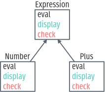

Mécanismes de langages pour étendre des interpréteurs
1 BARE Introduction
1.1 Problème: étendre un interprèteur par de multiple analyses
- Contexte de sécurité web.
- Scripts de pages web passent par un interpréteur.
- Sécuriser un script = analyser ses fonctionnalités
- runtime monitoring
- access control
- logging
- Une analyse dynamique = une modification de l’interpr√©teur
- Modification du code source en conflit avec la séparation des préoccupations
- perte d’extensibilit√©, perte de lisibilit√©, difficult√© de maintenance…
- Ajouter une analyse devrait être simple
- sans requ√©rir des modifications invasives de l’interpr√©teur
- maximiser la flexibilit√©, minimiser le co√ªt d’adoption
- Ajouter une analyse ne doit pas impacter la lisibilit√© du code de l’interpr√©teur
- séparation des préoccupations
- Analyses peuvent se composer sans effort particulier (lorsqu’elles n’interf√®rent pas entre elles)
1.2 But: mécanismes pour étendre simplement un interpréteur en préservant la séparation des préoccupations
- Trouver des mécanismes, des constructions (patterns) pour étendre des interpréteurs
- Améliorer la situation
1.3 Portée: interpréteurs en JavaScript
- Mécanismes et patterns génériques, pas nécessairement liés à un langage particulier.
- Software engineering
- Point de vue du programmeur
- Travail sur le code source, l’√©diteur de programmes, les outils du programmeur
1.4 Survol
2 √âtat de l’art
Une chronologie de la modularité dans les langages de programmation.
2.1 UNSTABLE De l’ex√©cution du programme au code source
Pour modifier l’ex√©cution d’un programme, il est bon de savoir comment le programme est ex√©cut√© par la machine. Du point de vue de la machine, un programme est une simple liste d’instructions. Une s√©quence d’additions, de soustractions, de chargement et stockage de valeurs en m√©moire, et de sauts conditionnels. Ces instructions sont pr√©sent√©es √† la machine sous la seule forme que son processeur est capable de manipuler: des nombres, cod√©s par des suites de z√©ros et de uns.
...00101011011100101011010101110101011111010100010110100000000110001011101010010101011...
Le programme est alors ex√©cut√© instruction par instruction. La machine lit une instruction, puis effectue l’op√©ration correspondante ; elle charge l’instruction suivante, la lit, effectue l’op√©ration, charge, lit, effectue, etc. Cette monomanie contribue √† l’utilit√© que nous trouvons √† la machine, car son processeur agit certes simplement, mais il agit vite. N’importe quel processeur actuel est capable d’effectuer plusieurs milliards d’op√©rations par seconde. La machine ne diff√©rencie donc pas un programme d’un autre; tous se m√™lent en une immense suite binaire.
Le programmeur en revanche cherche à structurer cette suite de nombres. Une suite infinie de zéros et de uns est difficile à appréhender pour un cerveau humain; il lui faut des repères, découper le programme en unités plus digestibles par nos facultés organiques. Un programmeur manipule donc rarement des bits afin de déclarer ses intentions à la machine; il utilise plutôt un langage de programmation.
function fibonacci(n) { return n < 2 ? 1 : fibonacci(n-1) + fibonacci(n-2) } print(fibonacci(10))
Dans les langages de programmation exot√©riques, un programme est constitu√© principalement de lettres plut√¥t que de nombres. Les lettres, arrang√©es en permutations judicieuses, nous servent √† nommer les objets de la computation tels que les variables et constantes, les fonctions, les classes et autres structures. Les mots sont plus facilement pronon√ßables, davantage mn√©moniques, et peuvent surtout communiquer l’intention du programmeur par homonymie. On peut ainsi, simplement en suivant les mots, supposer que le code 1 calcule et affiche le onzi√®me nombre de la suite de Fibonacci, sans √™tre vraiment certain de la s√©mantique de JavaScript. Les mots √©voquent imm√©diatement du sens alors que les nombres doivent √™tre d√©cod√©s.
Mais, si le programme ainsi d√©crit est plus confortable pour le programmeur, il est incompr√©hensible par la machine en tant que tel. Il faut au pr√©alable traduire ce programme en code machine avant de pouvoir l’ex√©cuter. L’analogie avec les langues naturelles est pertinente; si je souhaite communiquer le contenu de ce manuscrit de th√®se √† des non-francophones, soit je r√©dige une nouvelle version dans une langue qu’ils parlent (√©crire le programme en langage machine), soit j’emploie les services d’un traducteur. Heureusement, la traduction d’un programme est une t√¢che moins hasardeuse que la traduction d’un document en langue naturelle. Les langages de programmation sont d√©finis de fa√ßon √† √©liminer toute ambigu√Øt√© d’interpr√©tation, ce qui permet d’effectuer la traduction en langage machine automatiquement.
C’est le compilateur qui traduit des programmes d’un langage de programmation vers le langage machine. Le compilateur lit le texte brut d√©crivant le programme, v√©rifie que ce texte est conforme aux r√®gles syntaxiques et grammaticales du langage qu’il traduit, puis applique les r√®gles de traduction en langage machine. Un compilateur permet donc au programmeur d’obtenir un programme ex√©cutable par la machine √† partir de code √©crit dans le langage de son choix.

Notons que la compilation n’attache aucun sens particulier aux noms choisis par le programmeur. Les noms servent juste √† vite remplac√©s par des r√©f√©rences. On pourrait √©crire le programme de 1, de mani√®re totalement √©quivalente:
function xx(x){return x<2?1:xx(x-1)+xx(x-2)}print(xx(10))
Le programme, n’a donc pas comme seule vocation √† ordonner la machine, il doit aussi √™tre lisible par d’autres programmeurs vocations parall√®les:
Pour organiser un manuscrit, on recourt aux phrases, aux paragraphes Lorsqu’un texte devient trop long, il devient plus pratique de le d√©couper en unit√©s ind√©pendantes.


2.2 UNSTABLE Apprivoiser le flot de contrôle: la programmation structurée
At the IFIP Congress in 1971 I had the pleasure of meeting Dr. Eiichi Goto of Japan, who cheerfully complained that he was always being eliminated. — [Knu74].

La programmation structur√©e n’est pas un ensemble de techniques, ni une m√©thode de programmation, mais plut√¥t un but √† atteindre. Dans sa c√©l√®bre lettre √† l’√©diteur des communications de l’ACM, « Go To Statement Considered Harmful » [Dij68], Dijkstra d√©crit ce but:
Our intellectual powers are rather geared to master static relations and our powers to visualize processes evolving in time are relatively poorly developed. For that reason we should do (as wise programmers aware of our limitations) our utmost to shorten the conceptual gap between the static program and the dynamic process, to make the correspondence between the program (spread out in text space) and the process (spread out in time) as trivial as possible.

Dijkstra commence par établir une distinction cruciale entre le programme tapé
par le programmeur sous forme de texte, et le processus engendré par ce
programme, et ex√©cut√© par la machine. Le programmeur n’a pas de contr√¥le direct
sur le processus, il ne peut que modifier le programme. Afin de mieux
comprendre le processus engendr√© par le programme, lorsque l’on √©crit et relit
le code, il faut que le programme reflète au mieux ce processus. Dijkstra
cherche donc à établir une correspondance claire entre les instructions
exécutées par la machine (la dimension temporelle) et les instructions dictées
par le programme (la dimension spatiale). Et pour lui, goto est une
construction qui va √† l’encontre de cette correspondance.

Pour Dijkstra, on comprend un programme en suivant les instructions une √† une. C’est facile √† faire pour un programme qui contient juste une liste d’affectations √† des registres et de simples additions: on met son doigt sur la premi√®re ligne, puis on suit les instructions, une √† une, jusqu’√† la derni√®re. On peut comme ceci retrouver la valeur d’un registre particulier apr√®s la dixi√®me instruction. Si on ex√©cute le programme plusieurs fois, le registre √† cet endroit aura toujours la m√™me valeur. C’est un invariant du programme √† cet endroit, qui peut √™tre utile pour v√©rifier que le processus correspond √† une sp√©cification donn√©e. La correspondance entre le programme et le processus est directe.
On peut continuer de localiser ces invariants dans des programmes plus
complexes. Si l’on consid√®re des conditions introduites par un if then else
ou un cond, suivre le flot d’ex√©cution est encore simple: il suffit de prendre
la branche correspondante. Pour les boucles (while, repeat A until B), il
faudra prendre en compte la valeur actuelle de l’indice de boucle pour savoir
s’il faut r√©p√©ter le corps de la boucle encore une fois, ou s’il faut sortir.
Pour les appels de proc√©dures, on ne peut plus se contenter d’utiliser un seul
doigt pour suivre la ligne de code courante, il faut aussi tenir compte de la
pile d’appels en cours, pour savoir o√π continuer l’ex√©cution lorsque la
procédure actuelle prend fin.
L’instruction courante, l’indice de boucle, et la pile d’appels forment ce que Dijkstra appelle un syst√®me de coordonn√©es de l’ex√©cution du processus. On peut localiser pr√©cis√©ment un point d’ex√©cution du processus en donnant une position dans ce syst√®me de coordonn√©es. Et √† un point d’ex√©cution du processus on peut rattacher un invariant, ce qui permet de s’assurer de la correction du programme.
Et c’est l√† que goto pose probl√®me. En utilisant un goto, le processus peut
continuer l’ex√©cution vers n’importe quelle ligne du programme: m√™me au beau
milieu d’une proc√©dure, ou d’une boucle. Le syst√®me de coordonn√©e n’est plus
suffisant pour conna√Ætre avec certitude l’√©tat du processus, les valeurs des
variables. Il faudrait également savoir à tout moment le chemin exact emprunté
par le processus. Mais ce n’est plus un syst√®me de coordonn√©es: on ne peut plus
raisonner localement dans une boucle ou une procédure, il faut considérer
l’int√©gralit√© du programme.
Pour Dijkstra, goto est une construction qui permet trop facilement de
transformer le programme en v√©ritable labyrinthe; d’obscurcir la correspondance
entre le programme et le processus. C’est une construction qui va donc √†
l’encontre du but qu’il a fix√© en commen√ßant la lettre.
Mais la programmation structur√©e ne se r√©duit pas √† l’abolition des goto dans
un programme. Au contraire, se concentrer sur le goto serait passer
complètement à côté du message initial; Knuth le remarque très justement [Knu74]:
There has been far too much emphasis on GO TO elimination instead of the really important issues; people have a natural tendency to set up an easily understood quantitative goal like the abolition of jumps, instead of working directly for a qualitative goal like good program structure.
La programmation structur√©e tente simplement de r√©soudre les probl√®mes pos√©s par la complexit√© croissante des programmes. Les programmes pour les premiers ordinateurs, √©crits en assembleur ou langage machine, avaient comme principal objectif d’utiliser au mieux les capacit√©s de l’ordinateur. L’assembleur est un langage flexible, qui offre notamment la possibilit√© de changer le programme charg√© en m√©moire pendant l’ex√©cution (self-modifying code). Pour optimiser l’utilisation de la m√©moire, l’affectation des registres se fait √† la main, en prenant garde qu’aucun code n’√©crase les registres d’un autre. Plus les machines deviennent rapides, et moins toutes ces techniques de programmation en assembleur deviennent n√©cessaires. Le frein vient surtout de notre capacit√© √† comprendre et g√©rer de larges programmes √©crits dans des langages de plus haut niveau. Wirth [Wir74a] relate ce changement de contraintes:
As the power of computers on the one side, and the complexity and size of the programmer’s task on the other continued to grow with a speed unmatched by any other technological venture, it was gradually recognized that the true challenge does not consist in pushing computers to their limits by saving bits and microseconds, but in being capable of organizing large and complex programs, and assuring that, they specify a process that for all admitted inputs produces the desired results. In short, it became clear that any amount of efficiency is worthless if we cannot provide reliability.
La programmation structur√©e cherche donc √† produire des programmes fiables avant toute chose. Wirth la d√©crit comme un mouvement, une attitude plut√¥t qu’une liste de r√®gles √† suivre:
[Structured programming] is the expression of a conviction that the programmer’s knowledge must not consist of a bag of tricks and trade secrets, but of a general intellectual ability to tackle problems systematically, and that particular techniques should be replaced (or augmented) by a method. At its heart lies an attitude rather than a recipe: the admission of the limitations of our minds. The recognition of these limitations can be used to our advantage, if we carefully restrict ourselves to writing programs which we can manage intellectually, where we fully understand the totality of their implications.
Mais Wirth nous donne néanmoins des recettes.
Argues for a single entry point into procedures, and single exit point. Not jumping directly in the middle, or exiting prematurely.
Exemplified by ALGOL, and Pascal [Wir74b,Wir74a].
On the legacy front, most programmers are cargo-culting the fear of GOTO (though Knuth argues that it has its uses [Knu74]). Few languages in use today propose it. However, the discipline of single-exit is more controversial, as most modern languages offer constructs for early exits from procedures (return statement) or from loops (break and continue statements, sometimes with labels).
The fear of GOTO is an example of focusing on the wrong issue: structured programming is a proposal for clearer programs. Blindly removing all GOTOs and labels from an unstructured program does not make it structured. The focus is on writing programs that clearly reflect their dynamic process. As Parnas noted [DBB+03], modularity is solved by improving the design and documentation processes, not by adding a « module » statement to the language. The same situation arises here.
Knuth finit sa défense du GOTO par imaginer les systèmes de manipulation de programmes du futur:
Program manipulation systems appear to be a promising future tool which will help programmers to improve their programs, and to enjoy doing it. Standard operating procedure nowadays is usually to hand code critical portions of a routine in assembly language. Let us hope such assemblers will die out, and we will see several levels of language instead: At the highest levels we will be able to write abstract programs, while at the lowest levels we will be able to control storage and register allocation, and to suppress subscript range checking, etc. With an integrated system it will be possible to do debugging and analysis of the transformed program using a higher level language for communication. All levels will, of course, exhibit program structure syntactically so that our eyes can grasp it.
L’id√©e est tentante, mais peut-√™tre trop enthousiaste. Knuth √©crit en 1974, et je peux constater que 40 ans plus tard la situation n’est pas celle pr√©dite. Bien qu’il existe de nombreux langages de programmation, et beaucoup qui sont qualifi√©s de « haut-niveau », aucun ne permet de manipuler diff√©rents niveaux d’abstraction comme le d√©crit Knuth. Aucun ne r√©concilie la perte de contr√¥le d’efficacit√© impliqu√©e avec la mont√©e en abstraction.
Mais peut-√™tre que Knuth s’en est lui-m√™me rendu compte. Le langage du futur √©tait annonc√© pour 1984, l’ann√©e o√π il publie son syst√®me de Literate Programming qui permet de m√™ler une description haut-niveau du programme en toutes lettres et code machine bas-niveau.
2.3 Modéliser le monde: la programmation objet

2.3.1 BARE Smalltak
Design and Implementation [Ing78].
Opens with a definition of modularity:
No part of a complex system should depend on the internal details of any other part.
[…]
Objects are created and manipulated by sending messages. The communication metaphor supports the principle of modularity, since any attempt to examine or alter the state of an object is sent as a message to that object, and the sender need never know about internal representation.
[…]
The class is the natural unit of modularity, as it describes all the external messages understood by its instances, as well as all the internal details about methods for computing responses to messages and representation of data in the instances.
Smalltalk is designed with modularity, as classes encapsulate object descriptions and methods, and can only interact through messages.
An example of extending the system: adding new objects and a printer for them. Similar to the expression problem.
Adding a new class of data to a programming system is soon followed by the need to print objects of that class. In many extensible languages, this can be a difficult task at a time when things should be easy. One is faced with having to edit the system print routine which (a) is difficult to understand because it is full of details about the rest of the system, (b) was written by someone else and may even be in another language, and (c) will blow the system to bits if you make one false move. Fear of this often leads to writing a separate print routine with a different name which then must be remembered.
In our object-oriented system, on the other hand, printing is always effected by sending the message
printon: s(where s is a character stream) to the object in question. Therefore the only place where code is needed is right in the new class description. If the new code should fail, there is no problem; the existing system is unmodified, and can continue to provide support.
Changing a field inside Rectangle does not need to change code external to the
object, and global recompilation is avoided.
Additional story on the vision of Smalltalk can be found in [Kay93]; a larger perspective is given in [MP15].
Mechanisms for extension
Subclassing, and reflection. Everything as an object, so message dispatch is just a method on the meta class, and can be altered.
2.3.2 BARE Prototype-based programming
A collection of (at least) the following papers (or revisions of them):
- [Tai97]
- [DMB98a] (mostly a translation of [DMB98b])
- [GBO+98]
- [Bor86]
- [SU95]
- [Smi95]
- [MMM+98]
- [Bla91] & [Bla94]
- [Wol96]
- [Moo96]
- [Nob01]
- [Meu98]
[Tai97] is a philosophical take on the basis for class-based and prototype-based languages. Ascribing to classes is following the school of Plato and Aristotle [Pla98,AriBC]. Plato distinguished between forms, the ideal description of things, and instances of these forms. He regarded forms as being more real than instances. Aristotle believed in « a single correct taxonomy of all natural things », and classified things using the following rule:
essence = genus + differential
which mirrors class creation in class-based languages.
Classification has been criticized, notably by Wittgenstein [Wit53], as being subjective. Some concepts are difficult to define by intension – through a list of common properties that all instances must share. Rather, Wittgenstein proposes the notion of family resemblance. Meaning is not determined by a definition, but by similarity to representative prototypes.
This philosophical heritage has a few implications for programming:
- there are no optimal class hierarchies
- in a class hierarchy, the middle classes are often the best representatives. Higher classes are too abstract; lower classes too specific.
- prototypes may map better to the usual human process: iterate from examples.
Designers of class-based or prototype-based languages are seldom aware of the philosophical issues of both models, but focus more on technical matters. Kevo [Tai93a] is a prototype-based language with a notion of family resemblance. [Tai93b] offer similar insights on the notion of object.
[DMB98b] tries to classify prototype-based languages (ironically). Prototype-base d languages are advantageous for describing exceptional instances, multiple points of view of the same entity, and incomplete objects.
They identify the following mechanisms common to prototype-based languages:
- message passing
- 3 ways of creating objects (ex nihilo, cloning, and extension)
- delegation
- dynamic dispatch
Prototype-based languages also introduce new issues:
- Fragmented entities. Since objects are described differentially, no single object in the system reify the complete entity. To clone it completely, we would need to clone all its parts, but they are not reified (e.g., traits objects are only conventions, not language primitives).
- Sharing between clones of the same object.
- Sharing between clones of different objects.
2.3.3 TRANSLATE Self
The power of simplicity [US91].
Pure object-oriented language. No variables, but slots containing objects that return themselves.
No classes. No control structure.
The absence of distinction may not be a good thing in practice:
The absence of class-instance distinction may make it too hard to understand which objects exist solely to provide shared information for other objects. Perhaps SELF programmers will create entirely new organizational structures. In any case, SELF’s flexibility poses a challenge to the programming environment; it will have to include navigational and descriptive aids.
[later, in the conclusion]
Reducing the number of basic concepts in a language can make the language easier to explain, understand, and use. However, there is a tension between making the language simpler and making the organization of a system manifest. As the variety of constructs decreases, so does the variety of linguistic clues to a system’s structure.
They cite [UCC+91] for pointers on structuring programs in SELF.
Classes are abstract description of objects, but prototypes are always concrete. Each object is an example, and can be easily cloned. Class hierarchies are hard, and impose a structure; prototypes less so.
Classes forces you to create a template, even when you deal with several objects with unique behavior.
Activation records for methods inherit from the receiver object, so the receiver is on the chain for binding lookup.
They note that they could build « class-like » objects that hold code to create new clones, and also hold the shared behavior, though they « do not believe this is the best way to construct a system ».
In [UCC+91], the following organization is described:
- Traits object for methods (shared by all instances of an object).
- A prototype object with a default implementation.
- Instances are created from cloning the prototype.
Abstract objects dispense of the prototype, and singleton objects contain methods and state without providing a copy method.
They note that OO supports « differential programming », which is to define new data types as differences from existing data types. In Smalltalk, differential programming is achieved through subclassing. In SELF, they call it « refining traits objects », but the mechanism is delegation through the parent link.
An oddity: they state that parent links are constant, though the introduce a
dataParent setter in figure 3. Later they say that parent slot are like other
data slots, assignable.
Prototypes allow for multiple behavior modes, through dynamic inheritance switching. Behavior modes enhance the clarity of the code, though they do not comment on the potential performance costs.
Mechanisms for extension
Prototypes, and message passing. Prototypes are more general and simpler than inheritance.
However prototypes do not originate with SELF [Bor86,Lie86].
[Lie86] makes a good case for prototypes as being a simpler model to learn, as well as being more intuitive. Humans derive general concepts from examples, not the other way around. Class-based languages require you to commit to the concepts first.
Prototype-based and class-based languages provide different mechanisms for realizing differential programming,
Is differential programming sufficient to solve the problem of modular instrumentation? In the case of Narcissus, it was not, since the interpreter was not OO. But the open scope pattern might be equivalent, dynamically, to inheritance.
2.4 Réifier le langage pour séparer les préoccupations

2.4.1 TRANSLATE Reflection
[√T09b] gives a nice survey of reflection and its uses. Useful distinctions are made between introspection, introcession, structural reflection, and behavioral reflection; also between a program (a textual description) and a computational system (a running process described by a program).
A interesting observation on binding is quoted from [MJD96]:
The general trend in the evolution of programming languages has been to postpone formal binding times towards the running of programs, but to use more and more sophisticated analysis and implementation techniques to bring actual times back to the earlier stages.
Later binding = more runtime flexibility, but also less guarantees and less performance. The DLS submission is a perfect example.
[DS01] give a general method to reify selected parts of a meta-circular interpreter.
[Ste94] studies object-oriented languages which support open implementation. The open implementation of a language (the interpreter) is itself written in one language called the implementation language, and its meta-level interface allows the system to interpret a range of engendered languages.
[SW96] describe three approaches to code non-functional requirements while preserving the separation of concerns: systems-based, language-based, and MOP-based. They find that MOP-based solutions are more flexible, especially as they can be applied to other domains without modifying the code. However, they consider non-functional requirements like persistence and atomicity.
Reflection for dynamic adaptation [DSC+99]. Dynamic adaptation echoes the motivation of open implementation: an application should adapt dynamically to the need of the users, thereby enhancing performance. This is mostly a concern in systems software, operating systems and middlewares. They use a memory allocator example and compare using design patterns, DLLs and reflection. Essentially, reflection is more flexible, but also less efficient.
[RC02] illustrates how unanticipated dynamic adaptation can be achieved using MOPs in Java.
Unifying AOP and OOP [RS09].
[ADF11] proposes a proxy protocol for values. A virtual value is wrapped by a proxy which has a handful of traps that are useful to override: when the value is called as a function, when the value is used as a record, when the value is used as an index in an array, when the value is used in a binary operation …
They exhibit several scenarios where virtual values are useful: lazy evaluation, revocable membranes, and tainting. They modified Narcissus (again!) to add their virtual values extension, but the implementation seems incomplete regarding all operations available in JavaScript.
They motivate virtual values as a nice way to extend languages without having to
touch the interpreter. Though they do not talk at all of the limitations of
this approach: can you write any extension that you would write by modifying the
interpreter with virtual values? The only downsides they acknowledge are
performance hits and potential breakage of JS invariants (‚Äòx*x’ returning a
negative number, or ‚Äòx = x’ returning false).
It seems evident that virtual values are only hooks for values. So you cannot override any other part of the module which is not explicitly given by a trap. Getting a trace of the interpreter execution is out. Also, you need to specify your analysis from the point of view of handler on values, not by altering the interpreter semantics.
[KT13] implements access control on JS objects through ES6 proxies. Improves a previous implementation which used code transformation; better performance, less maintenance.
2.4.2 STABLE L’impl√©mentation ouverte
La r√©flexion dans les langages √† objets, et en particulier dans CLOS, permet √† des programmes de contr√¥ler, d’inspecter, de modifier, et d’√©tendre la s√©mantique du langage.
One meaning of the word reflect is to consider some subject matter. Another is to turn back something (e.g. light or sound). Punning on these two meanings, we get the notion of turning back one’s consideration or considering one’s own activities as a subject matter. Our ability as humans to reflect in this sense has been credited, since Aristotle, with our success in adapting to new situations and mastering our environment. Naturally, it was widely conjectured in the artificial intelligence community that by providing reflective capabilities to computational systems, we would obtain systems with greater plasticity and consequently, enhanced functionality. ‚Äî [Rao91]
Mais la r√©flexion n’est pas restreinte aux impl√©mentations de langages √† objets, ni aux langages de programmation. Les membres de Xerox PARC se sont donc int√©ress√©s √† appliquer la r√©flexion sur √† d’autres syst√®mes, ce qu’ils appellent plus g√©n√©ralement « impl√©mentation ouverte » [Rao91,Kic96,MLM+97,KLL+97].
[Rao91] commence par remarquer que l’interpr√®te d’un langage de programmation engendre un processus √† partir d’un programme, et que, parall√®lement, tout syst√®me d√©finit une interface qui peut √™tre vue comme un langage; tout syst√®me est donc un interpr√®te. Alors, la r√©flexion dans les langages de programmation n’est qu’un cas particulier, et on peut l’appliquer √† tout syst√®me qui expose une interface. Et comme un interpr√®te r√©flexif permet au programme d’inspecter et de modifier le processus engendr√© par l’interpr√®te, il en va de m√™me pour un syst√®me plus g√©n√©ral.
Mais √† quoi ressemble un syst√®me r√©flexif, en g√©n√©ral? Rao d√©finit un syst√®me √† impl√©mentation ouverte comme un syst√®me ayant deux interfaces: l’interface de base, qui est l’interface classique associ√©e au syst√®me, et l’interface de meta-niveau, qui r√©v√®le en partie l’impl√©mentation de l’interface de base.

Pour illustrer ces deux interfaces, il prend l’exemple d’un syst√®me de gestion de fen√™tre pour CLOS, appel√© Silica. Dans un syst√®me de gestion de fen√™tre, l’interface de base permet de construire des arbres de fen√™tres, d’interroger et de modifier ces arbres (pour acc√©der aux fen√™tres, en ajouter, les retirer…), et de lire et √©crire dans les fen√™tres.
Comment les fen√™tres, et la structure d’arbre sont impl√©ment√©s peut impacter l’utilisateur du syst√®me de fen√™tre. En particulier, Rao prend l’exemple d’un tableur qui cr√©√© une fen√™tre pour chaque cellule de la feuille de calcul. Ce choix peut para√Ætre curieux, mais est justifi√© par la r√©utilisation des fonctionnalit√©s du syst√®me de fen√™tre (capture de la souris, peindre les cellules en fonction de leur visibilit√©, …) pour simplifier l’impl√©mentation du tableur. Dans un syst√®me de fen√™tre na√Øf, il faut allouer de la m√©moire pour chaque fen√™tre, alors que dans le cas du tableur on pourrait partager bon nombre de propri√©t√©s entre les fen√™tres utilis√©es comme cellules. De m√™me, lorsque qu’un clic de souris est d√©tect√© par le syst√®me de fen√™tre, il faut parcourir les arbres de fen√™tres pour d√©terminer la fen√™tre qui est actuellement au dessus des autres, car les fen√™tres peuvent se superposer. Mais dans un tableur, les cellules ne peuvent pas se superposer, donc on peut d√©terminer le clic de souris directement gr√¢ce √† ses coordonn√©es. Ces optimisations ne sont possibles que si le syst√®me de fen√™tre laisse au programme client la possibilit√© de modifier son impl√©mentation. En l’occurrence, Silica est un syst√®me √† impl√©mentation ouverte, et Rao montre qu’il peut supporter ces optimisations en utilisant l’interface d’impl√©mentation.
Pour r√©aliser cette interface, Silica est construit en deux couches: une couche qui impl√©mente les fen√™tres, pour fournir l’interface de base; et une couche qui impl√©mente les contrats, pour stipuler la politique d’utilisation des fen√™tres par le client de l’interface (comment redessiner une fen√™tre, comment rapporter les √©v√©nements souris, comment g√©rer les sous-fen√™tres, …).

Le client de l’interface de base n’a pas besoin de modifier les contrats par d√©faut. En revanche, c’est par cette couche qu’il faut passer pour r√©aliser les optimisations du tableur.
Mais il ne s’agit pas ici de simplement s√©parer le m√©canisme de la politique; un syst√®me √† impl√©mentation ouverte ne propose pas n√©cessairement toute libert√© au client. Tout comme un interpr√®te peut n’exposer que certaines parties du langage par une interface r√©flexive, ici aussi un syst√®me √† impl√©mentation ouverte peut choisir l’√©tendue de son interface d’impl√©mentation.
[KLL+97] donne des recettes pour construire ces systèmes, en fonction des besoins des programmes clients:
- Le client n’a aucun contr√¥le: le syst√®me adapte son impl√©mentation en observant le programme client.
- Le client déclare son utilisation du système, et le système sélectionne une stratégie pré-établie.
- Le client spécifie la stratégie parmi celles pré-établies par le système.
- Le client fournit la stratégie au système.
Le degr√© 4 donne le plus de contr√¥le au client, mais on voit que d’autres styles d’impl√©mentation ouverte sont possibles.
En somme, le concept d’impl√©mentation ouverte r√©pond au besoin de certains programmes d’avoir √† optimiser des choix d’impl√©mentation du syst√®me qu’ils utilisent. Le syst√®me laisse au programme la possibilit√© de modifier ces choix, statiquement ou m√™me dynamiquement, via une interface d’impl√©mentation. Le syst√®me peut √™tre adapt√© √† plus de cas qu’un syst√®me qui ne proposerait pas d’interface d’impl√©mentation; le syst√®me √† impl√©mentation ouverte promet davantage de r√©utilisation de code.
On ne sp√©cifie pas comment cette interface d’impl√©mentation est rendue disponible par le syst√®me. Dans les interpr√®tes, la r√©flexion est souvent utilis√©e, mais d’autres solutions sont envisageables suivant le syst√®me: inversion de contr√¥le, patrons de conception Strat√©gie, n’importe quel moyen d’ex√©cuter le code du client pour modifier le processus consid√©r√© comme √©tant de la responsabilit√© du module.
2.4.3 STABLE La programmation par aspects
Autre production du laboratoire PARC de Xerox, la programmation par aspects est une technique qui pourrait √™tre utilis√©e pour fournir l’interface d’impl√©mentation d’un syst√®me [KLM+97,MKL97].
La motivation derri√®re la programmation par aspects est tr√®s proche de la motivation pour l’impl√©mentation ouverte: les deux approches proposent de nouvelles techniques pour organiser le code, pour qu’il soit √† la fois simple √† √©crire, facile √† maintenir, et ne sacrifie pas l’efficacit√©. Dans l’impl√©mentation ouverte l’id√©e est que le syst√®me expose une interface secondaire qui donne un acc√®s direct √† son fonctionnement interne, ce qui permet certaines optimisations. Dans la programmation par aspects, l’id√©e est de reconna√Ætre que la d√©composition d’un programme selon l’axe classique des fonctions et des classes n’est pas suffisante pour maintenir ces trois qualit√©s; les aspects y rem√©dient en introduisant une nouvelle dimension de composition.
La distinction entre les composants et les aspects
A design process and a programming language work well together when the programming language provides abstraction and composition mechanisms that cleanly support the kinds of units the design process breaks the system into. — [KLM+97]
Pour expliquer ce qu’est un aspect, [MKL97] part d’un exemple. Le syst√®me qui les int√©resse prend une image en noir et blanc et lui applique une s√©rie de filtres; c’est une partie d’un syst√®me de reconnaissance de caract√®res. Ils souhaitent que le syst√®me soit facile √† d√©velopper et √† maintenir, mais aussi efficace, car les images trait√©es sont grandes, et les filtres rapidement co√ªteux √† calculer.

Pour faciliter le développement, il suffit de créer des filtres composables.
D’abord des filtres basiques, comme Or, And, Not, analogues des op√©rateurs
communs sur les bits, mais appliqués aux images, pixel par pixel:
function Or(a, b) { var result = Image.new(a.width, a.height) for (var x=0; x < a.width; ++x) { for (var y=0; y < a.height; ++y) { result.pixel(x, y, a.pixel(x, y) || b.pixel(x, y)) } } return result }
Puis, à partir de ces filtres élémentaires, on peut en définir des plus complexes:
var Remove = (a, b) => And(a, Not(b)) var TopEdge = (a) => Remove(a, Down(a)) var HorizontalEdge = (a) => Or(TopEdge(a), BottomEdge(a)) ...
On voit que les filtres complexes se d√©finissent tr√®s facilement √† partir des filtres √©l√©mentaires. Le code est clair, simple et direct, donc facile √† √©crire et √† maintenir. Et pour ce faire, on n’a besoin que de composer des proc√©dures.
En revanche, c√¥t√© efficacit√©, c’est loin d’√™tre optimal. Tous les filtres
élémentaires, Or, And, Not créent une nouvelle image intermédiaire, et
bouclent sur les pixels de l’image. Un filtre composite comme Remove appelle
deux filtres élémentaires, et donc va créer deux images intermédiaires, et
it√©rer deux fois sur tous les pixels de l’image: une fois dans And, et une
fois dans Not. Le gaspillage est encore plus important pour les filtres plus
complexes, comme HorizontalEdge.
Une version optimis√©e de Remove ne contiendrait qu’une seule boucle et ne
cr√©erait qu’une seule image, le r√©sultat. Mais si on √©crit cette version
optimisée directement, on perd alors la composition des filtres élémentaires.
Cherchant l’efficacit√©, les auteurs ont r√©√©crit tous les filtres complexes
directement. Le système efficace comporte trois optimisations majeures: la
fusion de boucle, l’utilisation d’un bassin d’objet pour √©viter l’allocation
d’images interm√©diaires, et la m√©moisation des r√©sultats. Le syst√®me efficace
comporte 35213 lignes de code, alors que la version simple, mais non efficace,
en comporte 768; 5 fois moins de code √† √©crire, et √† maintenir. C’est d’autant
plus dommage que les versions optimisées suivent toujours le même motif:
fusionner les boucles, pour combiner les op√©rations √† l’int√©rieur des boucles
plut√¥t qu’√† l’ext√©rieur.
Alors, peut-on r√©concilier l’efficacit√© avec la simplicit√© de la composition des filtres? Peut-on arranger les proc√©dures diff√©remment, pour satisfaire les deux buts √† la fois? Les auteurs pensent que non. La composition hi√©rarchique des filtres est incompatible avec la composition n√©cessaire pour optimiser les boucles. Composer les filtres hi√©rarchiquement c’est composer les fonctionnalit√©s offertes par les filtres, de fa√ßon simple et homog√®ne. Mais pour optimiser ces filtres complexes, il faut fusionner les boucles qui appartiennent √† des proc√©dures diff√©rentes. La composition hi√©rarchique est r√©alis√©e par la composition des proc√©dures du langage de programmation, mais la seconde composition, qui d√©passe l’unit√© de la proc√©dure, n’est pas support√©e par le langage, et doit √™tre r√©alis√©e manuellement.

Remove, on ne peut pas fusionner les boucles de And et de Not sans outrepasser les fronti√®res impos√©es par les fonctions (‚ñ¨). Il faut un nouvel axe (‚ñ¨) de composition.C’est la distinction que les auteurs font entre composants et aspects. Si une fonctionnalit√© du syst√®me peut √™tre impl√©ment√©e par une proc√©dure (ou une m√©thode, un objet, une API), alors c’est un composant; sinon, c’est un aspect. Dans leur exp√©rience, un aspect ne concerne pas la fonctionnalit√© principale du syst√®me, mais plut√¥t des propri√©t√©s orthogonales ou compl√©mentaires au syst√®me, comme la performance, ou la gestion d’erreurs. Le but de la programmation par aspects est de pouvoir exprimer clairement ces deux cat√©gories de fonctionnalit√©s:
The goal of AOP is to support the programmer in cleanly separating components and aspects from each other, by providing mechanisms that make it possible to abstract and compose them to produce the overall system. This is in contrast to [classic] programming, which supports programmers in separating only components from each other by providing mechanisms that make it possible to abstract and compose them to produce the overall system.
Exprimer les aspects par un langage dédié
Une impl√©mentation par aspects refl√®te cette distinction. Pour une application √©crite dans un langage classique, il y a trois √©l√©ments importants: le programme, le langage dans lequel le programme est √©crit, et le compilateur pour ce langage. Pour une application √©crite en programmation par aspects, on distingue: le programme des composants, le (ou les) programme des aspects, le langage des composants, le langage des aspects, et un compilateur qui prend en compte les deux langages en m√™me temps, qu’on appelle le tisseur d’aspects.
Dans l’exemple des filtres d’images, le langage de composants est CommonLisp
avec des primitives de plus haut niveau. Le filtre Or ne s’exprime plus avec
une boucle, mais avec une construction plus déclarative:
(define-filter or! (a a) (pixelwise (a b) (aa bb) (or aa bb)))
Plutôt que de définir une fonction, on définit un filtre, qui itère sur chaque
pixel avec l’it√©rateur pixelwise.
Les filtres ainsi d√©finis sont pass√©s au tisseur d’aspects, qui va interpr√©ter
le code pour récolter les filtres et itérateurs utilisés: un filtre complexe,
comme Remove, va faire appel aux filtres primitifs And et Not; le tisseur
lui associe donc ces filtres. Ce faisant, le tisseur construit la seconde
composition, la composition que le langage procédural ne pouvait pas exprimer.
Dans un second temps, le tisseur passe cette information aux programmes d’aspects, qui vont pouvoir r√©aliser les trois optimisations; la fusion de boucle, la m√©moisation, et le bassin d’objets. Chaque optimisation est un programme d’aspect diff√©rent. La fusion de boucle par exemple teste si les arguments d’un filtre ont une it√©ration compatible avec l’it√©ration faite par le filtre; si c’est le cas, on peut g√©n√©rer une seule boucle qui applique les op√©rations des arguments et du filtre:
(cond ((and (eq (loop-shape node) 'pixelwise)
(eq (loop-shape node) 'pixelwise))
(fuse loop input 'pixelwise
...)))
Enfin, dans ce système, le tisseur génère du code C pour chaque filtre.
Au final, l’impl√©mentation par aspects a une performance comparable √† l’impl√©mentation optimis√©e manuellement, en seulement 4500 lignes de code (dont 3500 pour le tisseur), soit seulement 13% du code de la version optimis√©e. La version par aspects permet de clairement s√©parer les composants des aspects, ce qui atteint le but de simplicit√© d’√©criture et de maintenance, mais sans sacrifier l’efficacit√©.
Dans cet exemple, il est int√©ressant de noter la place importante du tisseur. La version simple, mais inefficace, du programme ne comportait que 770 lignes. En 1000 lignes, la version par aspects d√©crit les filtres, et les trois programmes d’aspects qui correspondent aux optimisations. M√™me ordre de grandeur. Mais pour que la version par aspects fonctionne, elle n√©cessite le tisseur, et celui-ci fait 3 fois la taille du programme client. M√™me si des parties du tisseur peuvent √™tre r√©utilis√©es pour d’autres programmes, le langage reste sp√©cifique √† la cr√©ation de filtres pour traiter des images en deux dimensions. On peut se poser la question: si l’on souhaite appliquer la programmation par aspects, faut-il r√©impl√©menter un tisseur pour chaque application? Y a-t-il d’autres fa√ßons de faire?
D’autres m√©canismes pour la programmation par aspects
La caract√©ristique principale de la programmation par aspects est la distinction entre composants et aspects. Cette distinction, si elle appara√Æt au moment du design du programme doit √™tre maintenue dans son impl√©mentation. Tout m√©canisme, toute fa√ßon de r√©aliser cette distinction dans le programme est donc compatible avec la programmation par aspects. Un langage sp√©cifique pour l’application, qui permet de distinguer composants et aspects, est une fa√ßon de faire. La r√©flexion en est une autre.
Un syst√®me r√©flexif permet d’observer et de modifier le processus d’ex√©cution du programme, au del√† de la s√©paration entre proc√©dures. Un syst√®me r√©flexif peut observer la pile d’appels, ou tous les messages re√ßus par une classe, ou par tous les objets du programme. La r√©flexion permet de composer un programme selon un axe compl√©mentaire √† celui des proc√©dures; c’est donc un m√©canisme de programmation par aspects. Les auteurs, certainement familiers avec le concept, le note:
A reflective system provides the base language and (one or more) meta-languages that provide control over the base language’s semantics and implementation. In AOP terms, meta-languages are lower-level aspect languages whose join points are the « hooks » that the reflective system provides. AOP is a goal, for which reflection is one powerful tool. ‚Ä[KLM+97]
Et il y a d’autres m√©canismes connus. Le try/catch, ou le m√©canisme
d’exceptions, transcende la fronti√®re des proc√©dures. Les exceptions ne sont
qu’un cas particulier des continuations (call/cc en Scheme), qui permettent de
manipuler le flot d’ex√©cution du programme de fa√ßon arbitraire. Les variables √†
port√©e dynamique permettent de changer le comportement d’une proc√©dure qu’on
n’appelle pas directement; c’est une forme de recomposition, mais moins
puissante que les précédentes.
Les auteurs de la programmation par aspects justifient la pr√©sence de ces m√©canismes par le besoin des programmeurs d’exprimer les aspects dans des langages qui proposent de n’assembler que des composants. Mais bien qu’ils permettent d’exprimer des aspects, ces m√©canismes sont consid√©r√©s de bas-niveau, au m√™me titre que la r√©flexion. Un langage d√©di√© d’aspects, comme celui utilis√© pour optimiser les filtres d’image, est d√©claratif, et correspond plus directement √† l’intention du programmeur. Fournir les outils qui permettent au programmeur d’exprimer cette intention est un des but de la programmation par aspects:
When we say « separation of concerns » we mean the idea that it should be possible to work with the design or implementation of a system in the natural units of concern ‚Äì concept, goal, team structure etc. ‚Äì rather than in units imposed on us by the tools we are using. We would like the modularity of a system to reflect the way « we want to think about it » rather than the way the language or other tools force us to think about it. In software, Parnas is generally credited with this idea [Par72,Par74]. ‚Ä[KHH+01]
N√©anmoins, cr√©er un langage d√©di√© pour chaque application est un co√ªt qui peut √™tre trop √©lev√© pour adopter la programmation par aspects. Et tous les langages ne supportent pas les m√©canismes bas-niveau qui pourraient servir √† exprimer des aspects. Ce sont les raisons qui vraisemblablement motivent le d√©veloppement d’AspectJ [KHH+01].
AspectJ: jonctions, coupes, et m√©thodes d’aspect
AspectJ is intended to be a practical AOP language that provides, in a Java compatible package, a solid and well-worked-out set of AOP features.
AspectJ est un langage d’aspect pour Java. Dans un syst√®me par aspects, il y a un langage d’aspects, ici AspectJ, et un langage de composants, ici ce sera Java. AspectJ est un langage d’aspect g√©n√©ral, qui fournit des m√©canismes de recomposition applicables √† tout programme Java. Et pour ce faire, AspectJ propose deux types de recomposition.
En premier, les d√©clarations inter-types permettent de d√©finir, au sein d’un m√™me aspect, des attributs et des m√©thodes pour une ou plusieurs classes [Asp03]. Ces attributs augmentent les classes au moment de la compilation. La classe est, en Java, et comme dans d’autres langages √† classe pour la programmation objet, l’unit√© de composition des composants. Elle d√©crit les attributs et les m√©thodes partag√©es par toutes ses instances; c’est la structure statique du programme. Comme c’est une unit√© de composition, une classe n’a pas vocation √† pouvoir affecter les attributs et m√©thodes d’une autre classe. Mais un aspect est une unit√© de composition qui traverse la composition des composants, et c’est donc naturel de permettre, dans un aspect, d’ajouter attributs et m√©thodes √† plusieurs classes. C’est une recomposition de la structure statique.
public int Point.x = 0; public int Point.getX() { return this.x; }
Le second type de recomposition d’AspectJ permet de modifier la structure dynamique du programme; de modifier le comportement du programme √† l’ex√©cution. C’est rendu possible par trois constructions:
- les jonctions (joinpoints) sont des points d’ex√©cution du programme bien d√©finis: l’appel d’une m√©thode, l’affectation d’un attribut, la cr√©ation d’une instance de classe, etc.
- les coupes (pointcuts) permettent de cibler un ensemble de jonctions, et d’en extraire de l’information comme le nom de la m√©thode appel√©e, et ses arguments.
- les m√©thodes d’aspect (advice) contiennent le code √† ex√©cuter lorsque le programme atteint les jonctions d√©crites par la coupe de la m√©thode. Une m√©thode d’aspect d√©crit √©galement comment le code doit s’ins√©rer dans le processus d’ex√©cution: avant, apr√®s, ou autour de la jonction.
Le programmeur ne manipule pas les jonctions directement, mais utilise les coupes pour les cibler dans des m√©thodes d’aspect. On pourra ainsi √©crire:
after(): calls(void Point.setX(int)) { System.out.println("setX was called") }
pour d√©clencher l’affichage sur la sortie standard apr√®s (after) tout appel
(calls) de la méthode Point.setX(int) dans le programme.
Les coupes sont des prédicats, et peuvent être combinées avec les opérateurs
booléens &&, ||, et !:
receptions(void Point.setX(int)) || receptions(void Point.setY(int)) calls(void FigureElement.incrXY(int, int)) && !instanceof(FigureElement)
Ce qui permet de capturer des ensembles de jonctions pertinents pour cibler une pr√©occupation particuli√®re. AspectJ permet d’ailleurs de nommer les coupes pour plus de clart√©:
pointcut moves(): receptions(void FigureElement.incrXY(int, int)) || receptions(void Point.setX(int)) || receptions(void Point.setY(int)); after(): moves() { ... }
Une coupe nomm√©e peut √™tre utilis√©e par une m√©thode d’aspect, mais aussi par n’importe quelle autre coupe, ce qui encourage la composition, et r√©duit la duplication de code.
Les jonctions expos√©es par AspectJ √©voquent fortement les r√©ifications d’un
protocole m√©ta-objet: appel et ex√©cution de m√©thode, cr√©ation d’une instance.
Mais il y a d’autres coupes int√©ressantes qui sont applicables √† n’importe quel
langage √† proc√©dures: withincode(method) permet de cibler n’importe quelle
jonction qui √©mane de la m√©thode donn√©e. C’est particuli√®rement utile associ√© √†
d’autres coupes:
call(void m()) && withincode(void m())
Là on capture uniquement les appels récursifs directs de m. Inversement, si
l’on souhaite capturer les appels non r√©cursifs √† m, on peut utiliser
cflow:
call(void m()) && !cflow(call(void m()))

m sont capturés (▬) par la coupe, et les appels récursifs échouent le test de cflow (▬).
cflow(coupe) capture toutes les jonctions qui sont dans le flot de contrôle de
la coupe pass√©e en argument; c’est √† dire, ici, toutes les jonctions qui
existent apr√®s qu’au moins un appel de m soit pr√©sent sur la pile d’appels.
Dans l’exemple, la coupe compos√©e capture les appels de m lorsqu’aucun appel √†
m n’existe sur la pile, ce qui exclut les appels r√©cursifs (directs et
indirects).
√Ä travers les diff√©rents types de jonctions observ√©es, le langage d’aspect d’AspectJ permet de capturer de nombreux points d’ex√©cution du programme, et d’ex√©cuter du code au del√† des fronti√®res d√©limit√©es par les classes et les m√©thodes de Java. On voit bien comment le langage permet de s√©parer les composants des aspects, et ce pour n’importe quelle application. Puisqu’ici, contrairement au langage sp√©cifique d’aspects du premier papier, le m√©canisme est g√©n√©ral; il s’applique √† n’importe quel programme Java.
Les auteurs donnent l’exemple d’un aspect qui enregistre toutes les erreurs lev√©es par toutes les m√©thodes publiques d’un package:
aspect SimpleErrorLogging { Log log = new Log(); pointcut publicEntries(): receptions(public * com.xerox.printers.*.*(..)); after() throwing(Error e): publicEntries() { log.write(e) } }
Cet aspect est équivalent à rajouter enrober chaque appel dans un try/catch et
appeler log.write sur l’erreur lev√©e. Mais ici c’est fait en 8 lignes, pour
toutes les classes du package, même les classes futures.
Un d√©savantage du langage sp√©cifique c’est qu’il faut r√©√©crire le programme des composants dans le nouveau langage √† composants. Ici, le langage d’aspects manipule directement le langage √† composant d√©j√† existant: Java. Un programmeur peut donc directement appliquer la programmation par aspects √† un programme Java existant, simplement en ajoutant des programmes d’aspect, et en invoquant le tisseur √† la compilation. Aucune modification du programme des composants n’est n√©cessaire, mais pourtant ce programme va √™tre modifi√© par des aspects. Les d√©clarations inter-types peuvent √©tendre des classes sans modifier le code de celles-ci. Et les m√©thodes d’aspect vont modifier le comportement √† l’ex√©cution de plusieurs classes, ici encore sans en alt√©rer le code.
La programmation par aspect nous donne donc deux fa√ßons de modifier un programme: dans les filtres d’images, la modification est explicite, car il faut r√©√©crire les filtres pour expliciter quel type de boucle est utilis√©e; mais dans AspectJ, le programme est modifi√© implicitement par les aspects.
En revanche, dans les deux cas, les programmes des composants ne d√©pendent pas des programmes d’aspects pour fonctionner. Dans l’exemple de l’aspect de journalisation des erreurs, on pourrait compiler le programme sans cet aspect (sans tisser l’aspect), et on obtiendrait un programme qui a les m√™mes fonctionnalit√©s, mais sans la journalisation. Aucune modification du code du programme n’est n√©cessaire pour activer ou d√©sactiver la journalisation; c’est uniquement le choix des aspects √† activer au moment du tissage qui d√©termine les fonctionnalit√©s du programme final. De m√™me, dans les filtres d’image, ne pas inclure les programmes d’aspects n’impacte que l’efficacit√© du programme, mais pas son r√©sultat. On dira alors que, dans ces deux cas, les aspects sont oubliables (obliviousness property).

Le mécanisme essentiel pour la programmation par aspects
D’√™tre oubliable est une propri√©t√© qui peut √™tre consid√©r√©e comme caract√©ristique de la programmation par aspects [FF04]. Filman et Friedman cherchent √† identifier les syst√®mes qui suivent la programmation par aspects. Il semble clair que lorsqu’on utilise AspectJ, on fait de la programmation par aspect. Mais si on construit un syst√®me similaire √† celui des filtres d’images, avec un langage d√©di√© pour les filtres, est-ce que c’est un syst√®me d’aspects? √Ä l’inverse, il ne s’agit pas de rajouter une construction √† un langage qui permet de cr√©er des « aspects », qui regroupent des m√©thodes, pour en faire un langage de programmation par aspects.
Dans la publication d’origine [KLM+97], le seul crit√®re de d√©finition d’un syst√®me par aspects est qu’il permet d’exprimer s√©par√©ment les composants des aspects, des unit√©s issues de la phase de conception du syst√®me. Mais Filman et Friedman ne s’int√©ressent pas tant √† la m√©thodologie de la programmation par aspects, qu’aux m√©canismes qui la supportent:
Here we address the structural essence of AOP, not its application—somewhat similar to the difference between defining object-oriented programming systems in terms of polymorphic methods and inheritance versus waxing euphoric about objects as the appropriate way to model the world.
[…]
Understanding something involves both understanding how it works (mechanism) and what it’s good for (methodology). In computer science, we’re rarely shy about grandiose methodological claims (see, for example, the literature of AI or the Internet). But mechanism is important ‚Äì appreciating mechanisms leads to improved mechanisms, recognition of commonalities and isomorphisms, and plain old clarity about what’s actually happening.
— [FF04]
D’apr√®s eux, pour faire de la programmation par aspect il suffit de pouvoir exprimer des d√©clarations de la forme:
Dans les programmes P, quand la condition C est vraie, r√©aliser l’action A.
Autrement dit, il suffit de disposer d’un COMEFROM [Cla73]. Le COMEFROM est
le dual du GOTO: un GOTO 10 transf√®re le contr√¥le √† la ligne 10, alors qu’un
COMEFROM 10 capture le contr√¥le apr√®s l’ex√©cution de la ligne 10.

COMEFROM est le dual de GOTO.10 J=1 11 COME FROM 20 12 WRITE (6,40) J STOP 13 COME FROM 10 20 J=J+2 40 FORMAT (14)
Dans cet exemple, les lignes ex√©cut√©es sont, dans l’ordre: 10, 13, 20, 11, 12
(STOP termine le programme). On voit tout de suite qu’un COMEFROM rend le
code encore plus difficile √† suivre qu’un GOTO. C’est bien l’intention de son
auteur, qui voit le débat autour du GOTO avec humour:
Nearly six years after publication of Dijkstra’s now-famous letter, the subject of GOTO-less programming still stirs considerable controversy.
The author has developed a new language construct on which, he believes, both the pro- and the anti-GOTO factions can agree.
Le COMEFROM est donc une plaisanterie √©labor√©e, qui n’a a priori rien √† voir
avec la programmation par aspects. Mais on s’int√©resse ici aux m√©canismes, et
le mécanisme du COMEFROM — la possibilité de capturer le contrôle — est
l’essence des jonctions et des coupes propos√©es par AspectJ.
Bien s√ªr, le COMEFROM d√©crit par Clark ne permet de venir que d’une autre
ligne du programme, alors qu’AspectJ permet de capturer le contr√¥le lors
d’appels de m√©thodes, la lecture ou l’affectation d’une variable. Mais en
réalité, le COMEFROM de Clark est adapté à la granularité offerte par le
langage: la ligne. Dans AspectJ, l’unit√© de composition est la m√©thode, et la
classe. Un COMEFROM pour Java pourrait ressembler √† ce qu’AspectJ offre √†
travers le langage des coupes de jonctions.
En ne prenant en compte que le m√©canisme, on peut d√©terminer si d’autres
syst√®mes ou langages, qui ne sont pas pr√©sent√©s comme des syst√®mes d’aspects,
permettent tout de même de faire de la programmation par aspects. En
particulier, les systèmes à événements peuvent être vus comme équivalents à un
COMEFROM; si les composants ne communiquent qu’√† travers des √©v√©nements, on
peut écrire des aspects qui capturent ces événements, sans impacter le reste du
syst√®me (les aspects sont oubliables): il s’agit simplement de souscrire √† ces
événements. Un système à événements fournit donc un mécanisme qui peut être
utilisé pour faire de la programmation par aspects.
Les limites de la programmation par aspects
Le but de la programmation par aspects est louable: distinguer les composants des aspects dans le programme, c’est mettre de l’ordre, c’est s√©parer les choses diff√©rentes, et regrouper les fonctionnalit√©s similaires. Le b√©n√©fice, c’est qu’un code source ordonn√© est, a priori, plus simple, et donc plus facile √† maintenir. Mais il y a aussi des inconv√©nients √† faire cette distinction [Ste06].
Le fait que les aspects capturent l’ex√©cution de fa√ßon implicite nuit √† la compr√©hension modulaire du programme. On ne peut plus raisonner sur le comportement d’un module seulement en regardant son code, il faut prendre en compte tous les aspects qui peuvent intervenir pendant l’ex√©cution du code du module. La compr√©hension du programme devient n√©cessairement globale: il faut conna√Ætre tous les aspects qui peuvent s’y appliquer, et en prenant en compte les aspects qui pourraient √™tre activ√©s dynamiquement.
Une fa√ßon de mitiger ce probl√®me est de faire appara√Ætre, dans l’environnement de d√©veloppement du programmeur, les endroits du code o√π des aspects pourraient s’ex√©cuter; l’article qui introduit AspectJ montre une telle fonctionnalit√© dans Emacs. Les aspects deviennent explicites, mais l’int√©grit√© du module demeure compromise. Le syst√®me n√©cessite toujours une analyse globale pour √™tre compris, et les aspects traversent encore la barri√®re du module, ce qui emp√™che de d√©velopper le module ind√©pendamment des aspects.
Les aspects capturent les points d’ex√©cution du module, ce qui revient √† dire que tout module expose une interface implicite qui est utilis√©e par les aspects. Que cette interface soit implicite rend les aspects fragiles: tout changement du code peut rendre des aspects inop√©rables. Mais c’est aussi le fait qu’elle soit implicite qui permet aux aspects d’√™tre oubliables, et donc de pouvoir s’appliquer √† plusieurs points d’ex√©cution sans avoir √† modifier le code des composants. L’interface implicite est donc un choix de conception du syst√®me, √† adopter si le besoin de modifier plusieurs modules en un seul lieu (dans un aspect) surpasse le besoin de comprendre et d√©velopper les modules ind√©pendamment.
La contribution principale de la programmation par aspects est de distinguer deux types de programmes qui cohabitent dans un même système: les composants, en charge de la fonctionnalité du système, et les aspects, qui décrivent des préoccupations orthogonales à la fonctionnalité principale. La programmation par aspects est donc avant tout une méthodologie.
Le langage des jonctions et des coupes, popularisé par AspectJ, est le mécanisme
principalement associ√© √† la programmation par aspects. Mais il y d’autres
façons de réaliser la séparation des composants et des aspects: on peut utiliser
la programmation événementielle, les try/catch, les variables à portée
dynamique, ou créer un langage dédié pour les composants et un pour les aspects.
Dans le monde de la programmation fonctionnelle, les monades sont aussi un moyen
de séparer les préoccupations orthogonales [Meu97,HO07].
Il ne faut donc pas m√©langer la m√©thodologie‚Äîle but philosophique de la programmation par aspects‚Äîet les (multiples) m√©canismes qui permettent d’atteindre ce but. En particulier, on peut faire de la programmation par aspects sans AspectJ, sans jonctions, sans coupes, et sans m√©thodes d’aspects.
Enfin, la programmation par aspects n’est pas une balle en argent. Les jonctions et les coupes sont oubliables par les composants, mais sacrifient le raisonnement modulaire. Les autres m√©canismes qui permettent de s√©parer les composants des aspects ont √©galement cette caract√©ristique: recomposer le flot d’ex√©cution dynamiquement rend le programme moins pr√©visible, et moins compr√©hensible. Tous ces m√©canismes pr√©sentent donc des avantages et des inconv√©nients, et le choix du bon compromis est dans les mains du concepteur du syst√®me.
2.5 Tisser les facettes d’un artefact d’innombrable dimensions

2.5.1 TRANSLATE Literate programming
Programs are constructed as they are explained. Knuth, LiterateCoffee, Org mode.
[Knu84] for the original notion:
Instead of imagining that our main task is to instruct a computer what to do, let us concentrate rather on explaining to human beings what we want to do.
As usual, Knuth writing is delightfully witty:
I must confess that there may also be a bit of malice in my choice of a title. During the 1970s I was coerced like everybody else into adopting the ideas of structured programming, because I couldn’t bear to be found guilty of writing unstructured programs. Now I have a chance to get even. By coining the phrase « literate programming, » I am imposing a moral commitment on everyone who hears the term; surely nobody wants to admit writing an illiterate program.
The WEB system allows one to write a TeX + source code document, and then produce documentation (using the WEAVE program) or complete program (using TANGLE). The focus is on documenting first what the program does, then producing a machine version as a second concern. The source code can be presented out-of-order in the document, for expository purposes, using links and macros.
The WEB way of writing programs is « psychologically correct », as it reflects the way in which the program was conceived and elaborated.
When I first began to work with the ideas that eventually became the WEB system, I thought that I would be designing a language for « top-down » programming, where a top-level description is given first and successively refined. On the other hand I knew that I often created major parts of programs in a « bottom-up » fashion, starting with the definitions of basic procedures and data structures and gradually building more and more powerful routines. I had the feeling that top-down and bottom-up were opposing methodologies: one more suitable for program exposition and the other more suitable for program creation.
[…] I have come to realize that there is no need to choose once and for all between top-down and bottom-up, because a program is best thought of as a web instead of a tree. […] A complex piece of software consists of simple parts and simple relations between those parts; the programmer’s task is to state those parts and those relationships, in whatever order is best for human comprehension ‚Äì not in some rigidly determined order like top-down or bottom-up.
[…]
Thus the WEB language allows a person to express programs in a « stream of consciousness » order.
An unexpected benefit of WEB is a better separation of concerns. Although Knuth does not use the term, each part of a program can be described in its own section, thus each section can focus on one concern. He gives the example of separating error recovery from a simple data structure update routine.
While writing the program for [error recovery], a programmer subconsciously tries to get by with the fewest possible lines of code, since the program for [updating the structure] is quite short. If an extensive error recovery is actually programmed, the subroutine will appear to have error-messages printing as its main purpose. But the programmer knows that the error is really an exceptional case that arises only rarely; therefore a lengthy error recovery doesn’t look right, and most programmers will minimize it […] in order to make the subroutine’s appearance match its intended behavior. [Programming] with WEB, the purpose of
updatecan be be shown quite clearly, and the possibility of error recovery can be reduce to a mere mention whenupdateis defined. When another section [related to error recovery] is subsequently written, the whole point of that section is to do the best error recovery, and it becomes quite natural to write a better program.
Knuth notes that the target programming language can impact the writing of WEB programs. Having to declare variables at the start of a program leads to appending to the same « Local variables » program section.
Taking the time to document the code as you write it is not free, but is beneficial in the long run.
I had known for a long time that the programs I construct for publication in a book, or the programs that I construct in front of a class, have tended to be comparatively free of errors, because I am forced to clarify my thoughts as I do the programming. By contrast, when writing for myself alone, I have often taken shortcuts that proved later to be dreadful mistakes. It’s harder for me to fool myself in such ways when I’m writing a WEB program, because I’m in « expository mode » (analogous to classroom lecturing) whenever a WEB is being spun. Ergo, less debugging time.
WEB may be only for the subset of computer scientists who like to write and to explain what they are doing.
Noweb is a language-agnostic syntax and implementation of WEB, which is used in Org-mode.
Mechanisms for extension
The idea of documenting as you program is important, as is the focus on writing « what the human meant to do ».
The mechanisms of including and referencing code snippets allows one to structure the program as they see fit. Especially, it allows to separate concerns through quantification.
2.5.2 STABLE Hyper/J
La programmation par aspects a pour but la s√©paration des composants et des aspects. C’est √† dire, la s√©paration de certaines pr√©occupations: les pr√©occupations transversales, orthogonales √† la fonctionnalit√© du code. En programmation par aspects, on a deux axes de composition du programme: l’axe des composants, pour la fonctionnalit√© principale, et l’axe des aspects, pour les fonctionnalit√©s transversales. L’axe des aspects est toujours inf√©rieur √† l’axe des composants: ce dernier est l’axe dominant, qui impose la structure du programme, ce qui peut limiter les choix de composition du programme. D’autres recompositions sont possibles, comme celle propos√©e par Hyper/J [TOH+99,TO00].
Hyper/J est une implémentation de la séparation pluridimensionnelle des préoccupations (séplution) pour Java, tout comme AspectJ est une implémentation de la programmation par aspects pour Java. La séplution est un paradigme qui permet la recomposition des préoccupations selon plusieurs axes, et de façon symétrique, contrairement à la programmation par aspects.
Dans [TOH+99], les auteurs motivent la s√©plution avec l’exemple d’un syst√®me qui permet de construire des programmes dans un langage simple, une instance du probl√®me de l’expression. Le syst√®me permet de cr√©er des expressions arithm√©tiques, qui sont des additions ou des soustractions de sous-expressions, soit des nombres.
Pour impl√©menter ce syst√®me, ils proposent de repr√©senter chaque n≈ìud de l’arbre
syntaxique par une classe: une classe Expression, une classe Number, une
classe Plus, etc. Chaque classe implémente trois méthodes, qui correspondent
√† trois traitements diff√©rents de l’arbre syntaxique: eval √©value la valeur
arithm√©tique de l’expression, display affiche l’expression, et check v√©rifie
qui l’expression est bien form√©e.

Imm√©diatement, ils constatent que chaque traitement peut √™tre consid√©r√© comme une pr√©occupation, et que selon cette d√©composition en classes, ces pr√©occupations sont toutes √©parpill√©es dans les m√©thodes correspondantes des diff√©rentes classes. Il n’y a pas de vue centralis√©e d’une pr√©occupation.
Cet √©parpillement est un probl√®me lorsqu’ils cherchent √† √©tendre la fonctionnalit√© du syst√®me. Modifier une fonctionnalit√© n√©cessite de toucher √† une m√©thode dans diff√©rentes classes. Ajouter la synchronisation des expressions dans une base de donn√©e requiert d’ajouter des appels dans les constructeurs et accesseurs de chaque classe. Les modifications ont un impact √©lev√© sur l’impl√©mentation, que les auteurs souhaitent minimiser:
The goal of low impact of changes requires additive, rather than invasive, change. Yet conceptually simple changes, like those in the expression system, often have widespread and invasive effects, both within the modified artifact and on related pieces of other artifacts. This is primarily because units of change often do not match the units of abstraction and encapsulation within the artifcats. Thus, additive changes in one artifact, like requirements, may not translate to additive changes in other artifacts, like design and code.
La s√©plution doit donc permettre de modifier le syst√®me sans avoir √† modifier sa structure en profondeur. Une nouvelle fonctionnalit√© devrait se traduire par un ajout de code, et pas par de la modification de code existant. Et pour r√©aliser ce but, l’exemple du probl√®me de l’expression montre que les unit√©s d’abstraction classiques sont insuffisantes; elles imposent toutes une dimension de composition. Et m√™me si elles permettent plusieurs dimensions de composition, comme la programmation par aspects, il y a toujours une dimension qui prime sur l’autre. C’est un constat qu’ils nomment la « tyrannie de la d√©composition dominante ».
Pour rem√©dier √† cette tyranie, ils proposent l’hypercoupe: une fa√ßon de regrouper tous les artefacts du syst√®me qui touchent √† une m√™me pr√©occupation. Une hypercoupe contient le code source, la description informelle de la fonctionnalit√©, sa sp√©cification, son design, sa documentation, etc.
Continuant l’exemple, on peut regrouper les fonctionnalit√©s d’√©valuation, d’affichage, de v√©rification et de synchronisation par des hypercoupes diff√©rentes. Le papier illustre √† travers des diagrammes UML ce qu’Hyper/J permet de faire en Java.

Une hypercoupe n’isole pas n√©cessairement une partie du syst√®me. Les unit√©s
d’abstraction que sont les classes et m√©thodes peuvent appara√Ætre dans plusieurs
hypercoupes. C’est le cas ici: la classe Expression appara√Æt dans toutes les
hypercoupes. Les hypercoupes sont des organisations, des vues différentes du
même système, et certaines parties du systèmes sont pertinentes pour plusieurs
vues.
Une fois les hypercoupes définies, il faut également décrire comment elles se composent pour former le système final: comment composer la documentation pour produire un document unique, et comment composer le code pour produire un exécutable. Cette composition dépend évidemment des artefacts considérés.
En Hyper/J, la composition du code source se fait sur le nom de classe ou de m√©thodes: deux classes ayant le m√™me nom dans deux hypercoupes diff√©rentes combineront leur contenu, et r√©cursivement pour leurs m√©thodes. Pour les m√©thodes, on peut aussi sp√©cifier qu’il faut surcharger la m√©thode de m√™me nom de l’hypercoupe pr√©c√©dente, sans pour autant utiliser l’h√©ritage de classe.
La s√©plution a pour but de minimiser les modifications √† apporter au code source lorsqu’une nouvelle fonctionnalit√© est impl√©ment√©e, et d’abolir l’asym√©trie de la d√©composition dominante. L’id√©e importante de la s√©plution est de reconna√Ætre qu’une pr√©occupation a plusieurs dimensions dans le programme, et n’appara√Æt pas seulement dans le code source. Les hypercoupes sont des projections de cet objet pluridimensionnel qui regroupent tous les artefacts relatifs √† une pr√©occupation: le code source, mais aussi les documents de conception. La s√©plution est donc une m√©thodologie de d√©veloppement, du design √† l’impl√©mentation, dont les unit√©s d’abstraction sont les fonctionnalit√©s du syst√®me.
Hyper/J est une implémentation de la séplution pour Java. Un programmeur écrit des hypercoupes, et précise leur composition avant de les passer au compilateur, qui génère du bytecode Java. Le mécanisme de composition est une instance de superimposition.
2.5.3 BARE Information transparency
[Gri01]
Tools for capturing the similarity of code across modules. Tangled code should
be similar, according to the principle of consistency. Hence, capturing similar
code should help gather and organize concerns. E.g., changing the behavior of
the parsing of a while statement by grepping for ‚Äòwhile’ in the source.
Principle of consistency:
Things that look similar should be similar; things that are different should look different.
[Mac87]
First principle of information transparency:
Code elements likely to be changed together as part of a complete, consistent change should look similar, and code elements unlikely to be changed together should look different.
If a code base obeys this principle, it can be easily refactored using standard tools like grep.
A second principle promotes using variable names to indicate implementation choices. Hungarian notation is given as an example.
The unmodularized code elements relating to a changeable design decision should contain recognizable tags uniquely identifying the design decision.
Locality can be managed by tools. They exhibit tools a bit more powerful than grep, with knowledge of the target language AST, or matching on typos.
Both tools [Aspect Browser and Seesoft] embody the concept that, by leveraging the human visual system, identifiable symbols are a viable alternative to locality as a way of managing changes to software.
2.6 BARE Limiter les effets de bord: La programmation fonctionnelle
Parallel evolution to OO.
Pure functions, immutability, side-step the complications of side-effects entirely.
Functional is simple, because referential transparency.
Real programs need side effects, they are delimited by monads, effect systems.
Functional languages historically have the more advanced type systems. Strong static guarantes, but less runtime flexibility.
2.7 La modularit√© du programme n’est pas la modularit√© du code source
2.7.1 STABLE La modularité selon Parnas
David Parnas est fr√©quemment cit√© comme r√©f√©rence pour la notion de modularit√© d’un syst√®me, en particulier l’article « On the Critera to be Used In Decomposing Systems into Modules » [Par72]. Mais Parnas s’int√©resse davantage √† la phase de conception d’un syst√®me qu’√† la phase d’impl√©mentation.
Dans l’article, il d√©crit deux d√©compositions en modules d’un m√™me syst√®me d’indexation ; un exemple didactique qui peut √™tre impl√©ment√© « par un bon programmeur en une ou deux semaines ». La premi√®re d√©composition comporte 5 modules, la seconde 6. Les deux d√©compositions sont suppos√©es produire des programmes √©quivalents: qui fournissent les m√™me fonctionnalit√©s. Mais si les deux programmes sont √©quivalents, quel int√©r√™t √† choisir une d√©composition plut√¥t qu’une autre? La r√©ponse vient en s’int√©ressant aux choix d’impl√©mentation qui ont √©t√© laiss√©s en suspens.
Suivant le format d’entr√©e des donn√©es, ou l’emplacement m√©moire de sauvegarde des donn√©es, il faudra modifier certaines parties du programme en cons√©quence. Et c’est l√† que les deux designs ne sont plus √©quivalents: le second changement touche tous les modules de la premi√®re d√©composition, alors que les changements sont restreints √† un seul module dans la seconde d√©composition. Le second design est donc mieux adapt√© aux changements potentiels anticip√©s par le concepteur.


Le second design est aussi plus facile √† d√©velopper et plus facile √† comprendre. Les modules du premier design correspondent aux √©tapes de traitement du syst√®me: Parnas nous dit qu’il suffit de dessiner le logigramme pour obtenir les 5 modules. Le r√©sultat c’est que tous ces modules ont de nombreuses d√©pendances entre eux, ce qui pousse les programmeurs √† avoir une compr√©hension globale du syst√®me pour pouvoir le d√©velopper. En revanche, il a √©labor√© le second design en suivant le principe d’encapsulation: les modules ne correspondent plus √† des √©tapes de traitement, mais plut√¥t √† des d√©cisions de design, des responsabilit√©s:
Every module in the second decomposition is characterized by its knowledge of a design decision which it hides from all others. Its interface or definition was chosen to reveal as little as possible about its inner workings.
Si l’on suit ce crit√®re pour d√©composer un syst√®me en modules, alors on peut qualifier le syst√®me de modulaire. Parnas liste les trois avantages attendus d’un syst√®me modulaire:
(1) managerial—development time should be shortened because separate groups would work on each module with little need for communication: (2) product flexibility—it should be possible to make drastic changes to one module without a need to change others; (3) comprehensibility—it should be possible to study the system one module at a time.
Le premier design a beau comporter des modules, il n’a pas ces avantages. Il n’est donc pas modulaire. Sur un second exemple de syst√®me, un compilateur et interpr√©teur pour le m√™me langage, il conclut l√† encore qu’une d√©composition suivant le crit√®re d’encapsulation est sup√©rieure √† une d√©composition qui suit les √©tapes de traitement. Un interpr√©teur et un compilateur r√©solvent en partie les m√™mes probl√®mes, et la d√©composition pr√©conis√©e par Parnas permet de r√©utiliser les modules d’un syst√®me √† l’autre.

N√©anmoins, il y a un obstacle √† utiliser une d√©composition dont les modules adh√®rent strictement √† l’encapsulation: l’efficacit√© du syst√®me. Dans une telle d√©composition, les appels de proc√©dures sont plus nombreux et comportent davantage d’instructions. L√† o√π le design qui suit le logigramme peut acc√©der directement √† la m√©moire pour modifier les donn√©es utilis√©es par un autre module, dans la d√©composition suivant Parnas chaque module est responsable de ses propres donn√©es; il faut forc√©ment passer par les proc√©dures d’acc√®s et de modification du module. Ces proc√©dures peuvent en plus effectuer des v√©rifications sur leurs param√®tres, qui ne sont peut-√™tre pas n√©cessaires dans tous les cas, ce qui rajoute encore des instructions que la machine devra effectuer.
Parnas reconna√Æt ce probl√®me d’efficacit√©, et sugg√®re de concevoir un outil qui transforme le code de la d√©composition modulaire en code qui suit davantage le fil d’ex√©cution. Le concepteur peut travailler sur la repr√©sentation modulaire, et l’outil se charge de g√©n√©rer du code efficace. Dans le code g√©n√©r√© par cet outil, les appels de proc√©dures inutiles sont supprim√©s, et l’efficacit√© n’est pas sacrifi√©e. En revanche, la d√©composition modulaire ne serait plus apparente. Il propose donc de conserver le programme sous ses plusieurs formes et de d√©velopper des outils pour passer d’une forme √† l’autre.
Parnas met donc en avant le crit√®re d’encapsulation pour concevoir un syst√®me modulaire. Mais surtout, il insiste sur l’importance de la phase de conception du syst√®me, ind√©pendamment de son impl√©mentation en code. Parnas ne croit d’ailleurs pas que le choix du langage de programmation puisse rendre un syst√®me modulaire. Un point qu’il d√©veloppe dans « Why Software Jewels are Rare » [Par96].
Un « logiciel joyau » est un programme « bien structur√© √©crit dans un style homog√®ne, sans bidouilles, d√©velopp√© tel que chaque composant est simple et organis√©, et con√ßu pour que le produit soit facile √† changer ». Parnas donne plusieurs raisons qui explique, selon lui, la raret√© de ces joyaux: le logiciel existe pour r√©pondre √† un besoin, et la structure interne du programme n’est pas un besoin du client; un logiciel est plus utile √† l’utilisateur s’il r√©pond √† plusieurs besoins, ce qui implique d’enrichir ses fonctionnalit√©s, au d√©triment de la simplicit√© du programme. Les contraintes mat√©rielles ne laissent que peu de place √† l’√©l√©gance structurelle du code. Parnas rapporte notamment son √©chec √† vouloir mettre √† jour un syst√®me d’ordinateur de vol pour l’arm√©e am√©ricaine; la machine cibl√©e poss√©dait un mat√©riel tr√®s limit√© qui demandait une optimisation manuelle de l’utilisation des registres, mais Parnas et son √©quipe d√©siraient s’abstraire de ces d√©tails mat√©riels:
Near-optimal register allocation was essential to fitting the program into a very small memory. One of our design goals had been to achieve hardware independence for most of our code. To achieve hardware independence on the specified processor, we needed an effective register allocation algorithm. The previous software for this task had been sucessful because none of the code was portable and register allocation was done by hand. We never found the necessary register allocation algorithm.
Et contrairement √† ce que l’on pourrait penser, la loi de Moore ne r√©sout pas le probl√®me. Si les machines poss√®dent deux fois plus de registres et sont deux fois plus rapides, alors on leur demandera de faire deux fois plus de calculs (ou de les faire deux fois plus rapidement). Parnas le note:
Although today’s machines are far better than the one we were using, goals have expanded and competitive pressures often limit the resources available. Few of today’s designers are free to ignore performance requirements and hardware limitations.
Mais surtout, il faut se méfier des marchands de panacée:
Sometimes new languages are used in the design of jewels, and authors may attribute a product’s success to the use of a particular language or type of language. Here, I have grave doubts. I have lost count of the number of languages that have been introduced to me as the solution to the software problems that everyone experiences. First, I was told to use Fortran instead of an assembler language. Later, others advocated Algol-60 and its derivatives as the cure to the ugly software resulting from Fortran. Of course, NPL, later known as PL/I, was going to provide an even better solution. The list goes on. Wirth promotes Oberon while hundreds of people are telling me that an object-oriented language must be used to get clean software. I no longer believe such claims. The issue is design, not programming language.
[…]
We should not ignore the fact that most modern languages have inherent disadvantages. A language that supports certain approach to software design often compels us to use a particular implementation of a design principle, one that may be inappropriate for the task at hand. For example, many languages that support modules, abstract data types, and object classes require the use of subroutines where macro expansion might be a better choice. Moreover, languages that prevent programming errors, a goal advanced by some inveterate language designers, are as feasible as knives that can cut meat but not hands. We need sharp tools to do good work.
Un langage de programmation est un outil parmi d’autres, et aucun outil ne peut r√©soudre tous les probl√®mes. C’est au concepteur de choisir l’outil adapt√© qui est le plus √† m√™me de r√©soudre le probl√®me qu’il a en vue. Choisir un langage n’affranchit pas le concepteur d’avoir √† se poser des questions difficiles sur la structure du syst√®me. En 2003, Parnas d√©plore cette tendance [DBB+03]:
To a man with a hammer, everything looks like a nail. To a Computer Scientist, everything looks like a language design problem. Languages and compilers are, in their opinion, the only way to drive an idea into practice.
My early work clearly treated modularisation as a design issue, not a language issue. A module was a work assignment, not a subroutine or other language element. Although some tools could make the job easier, no special tools were needed to use the principal, just discipline and skill. When language designers caught on to the idea, they assumed that modules had to be subroutines, or collections of subroutines, and introduced unreasonable restrictions on the design. They also spread the false impression that the important thing was to learn the language; in truth, the important thing is to learn how to design and document. We are still trying to undo the damage caused by the early treatment of modularity as a language issue and, sadly, we still try to do it by inventing languages and tools.
Parnas r√©it√®re: le langage de programmation seul ne rend pas le programme modulaire. C’est aussi facile de cr√©er un programme non-modulaire dans un langage de haut niveau qu’en assembleur. On ne pourra donc pas rendre les programmes modulaires simplement en fournissant de meilleurs languages ou outils.
Alors, quelle est la bonne direction √† suivre? D’apr√®s Parnas, il faut insister sur la phase de conception du syst√®me; c’est l√† o√π les limites entre modules apparaissent, et l√† o√π les d√©cisions de design doivent √™tre prises:
My engineering teacher laid down some basic rules:
- Design before implementing.
- Document your design.
- Review and analyze the documented design.
- Review implementation for consistency with the design.
There rules apply to software as least as much as they do to circuits or machines.
Conclusions
Parnas est souvent cit√© pour ses travaux sur la modularit√©, √† juste titre, mais son message principal n’est pas toujours bien entendu. On trouve dans l’article s√©minal de 1972 les avantages d’un syst√®me modulaire, et un crit√®re pour les concevoir: le crit√®re d’encapsulation. Quelles parties du syst√®me ont besoin de pouvoir √™tre chang√©es? D’une machine √† l’autre, ou en r√©ponse √† des besoins futurs? Ces parties d√©terminent les modules du syst√®me selon le crit√®re d’encapsulation. De ce crit√®re d√©coulent des notions de s√©paration des pr√©occupations et de type de donn√©es abstrait (qu’il ne nomme pas). L’encapsulation est un crit√®re sup√©rieur √† la fa√ßon usuelle de d√©couper les programmes selon le processus de traitement des donn√©es, en suivant un logigramme.
Parnas nous permet donc de qualifier la modularit√© d’un syst√®me. Un syst√®me simplement d√©coup√© en modules arbitraires n’est pas modulaire. Mais si pour changer la base de donn√©es utilis√©e par le syst√®me il suffit de modifier le code d’un seul module, alors ce syst√®me est modulaire par rapport √† la base de donn√© utilis√©e. La base de donn√©e initiale est un choix de conception, mais un choix qui peut √™tre chang√© ult√©rieurement sans demander la refonte totale du syst√®me. Le syst√®me est modulaire par rapport √† un ensemble de choix qui peuvent √™tre alt√©r√©s ult√©rieurement.
On peut donc voir la modularit√© comme une des fonctionnalit√©s du syst√®me; une fonctionnalit√© √† destination des programmeurs charg√©s de la maintenance du syst√®me, plut√¥t qu’une fonctionnalit√© destin√©e aux utilisateurs. Et comme toute fonctionnalit√©, la modularit√© impose un co√ªt de complexit√© au syst√®me. Si le programme est flexible, s’il permet de changer la base de donn√©e utilis√©e, alors il faut que le reste du syst√®me soit capable de fonctionner non plus avec une seule base de donn√©e, mais avec plusieurs bases diff√©rentes. G√©rer cette compatibilit√© impose de traiter plus de cas, ce qui in√©vitablement se traduit en code. De plus, pour impl√©menter un syst√®me modulaire, on fera souvent appel √† des interfaces, des indirections, des appels de proc√©dures qui encapsulent les d√©cisions de conception. Et ces interfaces ont souvent un impact n√©gatif sur l’efficacit√© du programme. Ces compromis modularit√©/complexit√© et modularit√©/efficacit√© me semblent in√©vitables.
2.7.2 STABLE La théorie de Naur derrière le programme
Un point de vue qui compl√©mente celui de Parnas est celui de Peter Naur. Dans « Programming as Theory Building » [Nau85] il attache, comme Parnas, beaucoup d’importance √† la r√©flexion du programmeur dans l’√©laboration d’un syst√®me. Et il s’int√©resse √©galement √† la modification de programmes, aux difficult√©s qui apparaissent quand on essaye d’ajouter des fonctionnalit√©s non pr√©vues initialement.
Pour Naur, la t√¢che principal du programmeur n’est pas de produire du code source. Un programmeur avant tout construit une th√©orie du probl√®me que le programme doit r√©soudre. Lors de la conception et de l’impl√©mentation, le programmeur construit sa connaissance du probl√®me, du domaine d’application, et des outils. Cette connaissance est naturellement interne, et toute production externe (code source, documentation, diagrammes) ne fait la refl√©ter qu’en partie.

Ce point de vue, Naur le tire de sa propre exp√©rience √† construire de larges syst√®mes. Il donne l’exemple d’un compilateur d√©velopp√© par un groupe A pour une machine X. Le compilateur fonctionne tr√®s bien, et un autre groupe de programmeurs, le groupe B, souhaite √©tendre l√©g√®rement le langage, et r√©utiliser ce compilateur pour une machine Y. Le groupe B planifie les changements √† apporter au compilateur apr√®s avoir √©tudi√© sa structure, et vient discuter des changements avec le groupe A qui offre son soutient:
In several major cases it turned out that the solutions suggested by group B were found by group A to make no use of the facilities that were not only inherent in the structure of the existing compiler but were discussed at length in its documentation, and to be based instead on additions to that structure in the form of patches that effectively destroyed its power and simplicity. The members of group A were able to spot these cases instantly and could propose simple and effective solutions, framed entirely within the existing structure.
Le groupe B avait le code source et la documentation, et du temps pour les √©tudier. Malgr√© cela, les modifications du compilateur qu’il envisage sont jug√©es inad√©quates par le groupe A, qui est capable de proposer rapidement des modifications plus simples et directes. Naur en conclut que la documentation et le code source n’ont pas √©t√© suffisants pour communiquer toutes les d√©cisions de conception au groupe B, pour communiquer la th√©orie du compilateur.
« Th√©orie » ici n’a pas un sens abstrait; si un programmeur du groupe A poss√®de la th√©orie du compilateur, c’est que non seulement il sait comment le compilateur fonctionne dans le d√©tail, mais il est aussi capable de l’expliquer √† quelqu’un du groupe B, de r√©pondre √† des questions sur le compilateur, de d√©battre sur les choix d’impl√©mentation. Avoir la th√©orie du programme, c’est avoir internalis√© une connaissance pratique, et √™tre capable d’appliquer cette connaissance √† d’autres probl√®me connexes:
The notion of theory employed here is explicitly not confined to what may be called the most general or abstract part of the insight. For example, to have Newton’s theory of mechanics as understood here it is not enough to understand the central laws, such as that force equals mass times acceleration. In addition, as described in more detail by Kuhn, the person having the theory must have an understanding of the manner in which the central laws apply to certain aspects of reality, so as to be able to recognize and apply the theory to other similar aspects.
Pourquoi s’int√©resser √† cette notion de th√©orie? Parce qu’elle permet de mieux comprendre comment modifier un programme. Naur commence par constater que modifier des programmes est une pratique courante, motiv√©e par l’√©conomie. Si on a d√©j√† un programme qui fait √† peu pr√®s ce qu’on veut obtenir, c’est raisonnable de penser que modifier ce programme sera plus rapide que d’en recr√©er un compl√®tement nouveau. Naur remarque que ce raisonnement ne consid√®re que la facilit√© de modifier le texte du programme. En effet, le code source d’un programme sous forme texte est facilement modifiable; bien plus qu’une construction physique comme un immeuble, un pont, ou une voiture. Si l’on consid√®re plut√¥t le point de vue de Naur ‚Äî que le programmeur manipule avant tout une th√©orie ‚Äî on ne peut pas modifier le programme sans prendre en compte la th√©orie sous-jacente:
What is needed in a modification, first of all, is a confrontation of the existing solution with the demands called for by the desired modification. In this confrontation the degree and kind of similarity between the capabalities of the existing solution and the new demands has to be determined. The point is that the kind of similarity that has to be recognized is accessible to the human beings who possess the theory of the program, although entirely outside the reach of what can be determined by rules, since even the criteria on which to judge it cannot be formulated.
Si l’on se contente de modifier le code source sans consid√©rer la th√©orie, on se retrouve dans le cas du groupe B; √† √©tendre le compilateur de fa√ßon tarabiscot√©e, sans tirer partie de sa structure:
For a program to retain its quality it is mandatory that each modification is firmly grounded in the theory of it. Indeed, the very notion of qualities such as simplicity and good structure can only be understood in terms of the theory of the program, since the characterize the actual program text in relation to such program texts that might have been written to achieve the same execution behaviour, but which exist only as possibilities in the programmer’s understanding.
Donc, si l’on souhaite modifier le programme, il faut vraiment tenter de modifier la th√©orie. Pour cela, il faut d’abord avoir acc√®s √† cette th√©orie. Si on n’a pas acc√®s aux d√©veloppeurs du programme, les possesseurs de sa th√©orie, il faut tenter de la recr√©er √† partir de code source et de la documentation. Naur appelle cela la « r√©surrection de programme ». √Ä ses yeux, c’est un acte sans espoir:
A very important consequence of the Theory Building View is that program revival, that is re-establishing the theory of a program merely from the documentation, is strictly impossible.
[…] building a theory to fit and support an existing program text is a difficult, frustrating, and time consuming activity. The new programmer is likely to feel torn between loyalty to the existing program text, with whatever obscurities and weaknesses it may contain, and the new theory that he or she has to build up, and which, for better or worse, most likely will differ from the original theory behind the program text.
Il conc√®de que revivre un programme de cette fa√ßon peut √™tre utile dans des circonstances particuli√®res, mais en √©tant bien conscient de l’effort √† fournir pour obtenir un r√©sultat probablement de qualit√© inf√©rieure.
L’alternative qu’il conseille, est de toujours recr√©er le programme:
In preference to program revival, the existing program text should be discarded and the new-formed programmer team should be given the opportunity to solve the given problem afresh. Such a procedure is more likely to produce a viable program than program revival, and at a no higher, and possibly lower, cost.
Modifier le code source du programme n’est facile qu’en apparence; car modifier la fonctionnalit√© du programme demande de reconstruire sa th√©orie, afin de s’assurer que les changements envisag√©s auront bien les effets voulus. Puisqu’il faut reconstruire la th√©orie du probl√®me initial, puis l’adapter au probl√®me qui int√©resse le programmeur, l’effort sera moindre en construisant une th√©orie directement adapt√©e au nouveau probl√®me.
Naur attaque une autre id√©e populaire du g√©nie logiciel: qu’une m√©thode de programmation, un ensemble de r√®gles √† observer, peut √™tre sup√©rieure √† une autre. Une m√©thode pr√©conise les √©tapes du processus de d√©veloppement, ou les documents √† produire et dans quel ordre. Mais pour Naur, le seul point qui importe c’est le d√©veloppement de la th√©orie du programme, et aucune m√©thode ne peut garantir une construction correcte:
A method implies a claim that program development can and should proceed as a sequence of actions of certain kinds, each action leading to a particular kind of documented result. In the Theory Buiding View what matters most is the building of the theory, while production of documents is secondary. In buiding the theory there can be no particular sequence of actions, for the reason that a theory held by a person has no inherent division into parts and no inherent ordering. Rather, the person possessing a theory will be able to produce presentations of various sorts on the basis of it, in response to questions or demands.
Pour les m√™mes raisons, le choix du langage de programmation, ou d’un formalisme particulier ne peut remplacer la construction de la th√©orie:
As to the use of particular kinds of notation or formalization, again this can only be a secondary issue since the primary item, the theory, is not, and cannot be, expressed, and so no question of the form of its expression arises.
Quoi dire alors aux programmeurs novices? Comment leur faire comprendre ces notions, comment les amener √† construire d’√©l√©gantes th√©ories pour cr√©er des programmes flexibles et efficaces? Naur recommande de les former principalement de fa√ßon organique: en travaillant avec des programmeurs chevronn√©s, ils absorberont les connaissances n√©cessaires par osmose.
What remains is the effect of methods in the eduction of programmers. Indeed, on this view the quality of the theory built by the programmer will depend to a large extent on the programmer’s familiarity with model solutions of typical problems, with techniques of description and verification, and with principles of structuring systems consisting of many parts in complicated interactions.
While skills such as the mastery of notations, data representations, and data processes, remain important, the primary emphasis would have to turn in the direction of furthering the understanding and talent for theory formation. To what extent this can be taught at all must remain an open question. The most hopeful approach would be to have the student work on concrete problems under guidance, in an active and constructive environment.
Conclusions
Naur √©tablit une distinction importante entre le source code d’un programme, et la connaissance que le programmeur a de son fonctionnement. C’est une distinction intuitive pour quiconque a une exp√©rience m√™me modeste de programmation. Cette distinction nous permet notamment de comprendre pourquoi modifier un programme n’est pas simplement modifier du texte, modifier son code source. Il faut prendre en compte les choix faits au moment du design du programme, et consid√©rer comment les changements que l’on souhaite apporter affectent ces choix. Comprendre la th√©orie.
Naur estime que la th√©orie n’est pas communicable; qu’elle reste toujours interne au programmeur qui la construit. Mais √† l’√©vidence le programmeur est toujours capable de la communiquer en partie. La th√©orie, c’est savoir comment le programme fonctionne, pourquoi telle partie est n√©cessaire, comment √©tendre le programme… Naur dit lui-m√™me plusieurs fois qu’un programmeur qui poss√®de la th√©orie est capable de r√©pondre √† ces questions sur le programme, c’est bien qu’il y a une personne qui doit interpr√©ter ces r√©ponses et reconstruire la th√©orie. Quand bien m√™me la th√©orie ne peut √™tre communiqu√©e exactement comme telle d’un programmeur √† l’autre, il suffit d’en communiquer une partie suffisante pour satisfaire les besoins de l’autre.
Le message g√©n√©ral est proche de Parnas: l’important dans la programmation ce ne sont pas les formalismes, les langages ou les outils; c’est de r√©fl√©chir, de comprendre le probl√®me, et construire une solution qui satisfait les contraintes donn√©es. Et c’est cette aptitude √† r√©soudre le probl√®me qui devraient √™tre enseign√©e principalement aux novices. En cela, la programmation n’est pas diff√©rente d’autres activit√©s:
This problem of education of new programmers in an existing theory of a program is quite similar to that of the educational problem of other activities where the knowledge of how to do certain things dominates over the knowledge that certain things are the case, such as writing and playing a music instrument. The most important educational activity is the student’s doing the relevant things under suitable supervision and guidance. In the case of programming the activity should include discussions of the relation between the program and the relevant aspects and activities of the real world, and of the limits set on the real world matters dealt with by the program.
2.7.3 Notion of modularity
Notion of modularity [OGK+11]. Modularity is rooted in classical logic thinking. Classical logic is inflexible, incompatible with the realities of software. Especially, information hiding is not the silver bullet. Approaches to software development that seem to break information hiding, and even oppose modular reasoning, have their virtues. Those can be thought of using nonclassical logics.
2.8 Les mécanismes de recomposition du programme
2.8.1 BARE Le probl√®me de l’expression
Wadler, Odersky, Krishnamurthi, Oliveira (expression families) …
2.8.2 BARE Dynamic binding
Introduced by McCarthy’s LISP [McC60] as a bug. Can be emulated by passing a dynamic environment in lexical binding [Que03].
Implicit parameters [LLM+00] provide dynamic scoping for Haskell (though they lose their first-class privileges).
[Mor98] gives a syntactic theory of dynamic binding, and prove that dynamic binding adds expressiveness to a purely functional language. They give examples in Perl, TeX, Common Lisp and Bash.
[√T09a] generalizes dynamic and static binding by making explicit the two dimensions of propagation of bindings (call stack and delayed lambdas), and offering a filter function to toggle the activation of a propagated binding.
Some use-cases are mentioned, but none are demonstrated in the paper. The proposal is not motivated enough by concrete applications that would be difficult to solve using existing mechanisms. Also, the work is really focused on the binding semantics of Scheme, which reduce its applicability.
2.8.3 BARE Building from modules
Findler & Flatt, Newspeak
2.8.4 BARE Building with monads
Wadler, Steele, Spinoza, Swierstra, R√∫nar, …
Free algebras, free monads. Basically reify data in a way that is accepted by the type system of the underlying language to allow unanticipated extension.
[dSOC12] gives Java code with generics for solving the expression problem using object algebras. Object algebras are akin to a free algebra. Instead of locking down the actual objects used as expressions too early, they leave them open using abstract factories. Providing a factory when evaluating the expression gives you either integer evaluation, or pretty-printing.
Their solution is applicable to Java with generics, without significant syntactic overhead (less than related work). And, they leverage the type system to capture erroneous composition.
Aspects and monads are sometimes both viewed as mechanisms to achieve modularity in software [DBB+03,HO07,Meu97].
De Meuter shows we can use a monad to memoize fib, so efficiency concern is
cleanly separated. But a function is enough to memoize fib, so the example is
not very convincing. Well, he does not write fib as a function, but as a
method in a custom OO language embedded in Scheme. Then, he is just
intercepting the method name in the bind of the « interpreter ». Which is kinda
like reflection.
Hofer and Ostermann are more on point, noting that common monads correspond to concerns that can be written as aspects: error handling (Error monad), dynamic scoping (Reader monad), continuations (Continuation monad). Their conclusion is AOP != monad: monads manipulate computation on a finer granularity that AOP can’t do. On the other hand, AOP is more declarative, and can come in different degrees of obliviousness, but monads are always explicit.
I think the better angle is to just say « Monads are a mecanism touted as separating concerns and promoting modularity », and that’s enough to consider them. Maybe mention that some have related them to aspects, but there is no sign of equivalence between the mecanisms.
2.8.5 BARE Bytecode instrumentation
Ansaloni. Targets bytecode, which is low-level code.
Jinliner [TSN+02] can insert code into the bytecode of a Java program. Allows to alter the behavior of a program with no access to its source code. Inserts code after/before point of interest.
[BRG+14] instruments the bytecode interpreter of WebKit to enable information flow tracking. Bytecode instrumentation is difficult, because you lose high-level details of the source code like « when does an if block ends ». They have to build a control-flow graph to know when to discard program counters used by the information flow analysis. Also, instrumenting the bytecode is specific to the bytecode compiler of WebKit (there is no standard, unlike Java).
2.8.6 Superimposition
BARE Caesar
Caesar has everything and the kitchen sink. [AGM+06]
CaesarJ regroups virtual classes, mixins, pointcut-advice and binding classes. All these mechanisms are brought together to allow composition along many axis.
But overall, I failed to see the problems that it solved. Both papers [AGM+06,MO02] are dense and opaque; the examples are too complicated to make sense of the benefit brought by the new mechanisms.
TRANSLATE Software product lines
[ABK+13] provides a well-rounded survey of the field.
An engineering methodology to create and maintain variants of a software product, with optional features (analogy with car assembly lines, which allow for adding optional features while reusing the same assembly process).
Inspired by the similar evolution in the mass production of consumer goods. From handcrafting to mass production, to mass customization: product lines that cover a spectrum of variations. Examples abound: cars, multi-flavored detergent, phones, Subway sandwiches … Software product lines are the realization of mass customization for software products (yeah!).
A product line engineering platform combines all the artifacts, documentation and methodologies of a family of products. The goal of PLE is to manage the commonality and variability of a product family. PLE is not specific to software.
Properties of a SPL:
- binding time (composition can happen at compile-time, load-time or run-time)
- language solution vs. tool based
- annotation (think C preprocessor) vs. composition (features in their own unit)
- preplanning effort (can you add features without designing for it?)
- feature traceability (mapping between feature model to solution space)
- separation of concerns
- information hiding
- uniformity
Software product lines mechanisms include:
- global parameters
- design patterns (observer, strategy, decorator)
- frameworks
- components
Using version control branches to manage variability is also discussed. Each branch correspond to a product, and code sharing is provided by the version control tool. However, version control manages products rather than features. Features are not apparent independently of the base code, except when looking at diffs.
Feature-oriented programming allows the decomposition of a program into features
first. Jak is a Java extension that supports FOP [BSR04]. A feature corresponds
to a layer, and each layer can contain multiple classes that implement the
feature. Further layers can refine the classes of previous layer, and refer
to their implementation via the original keyword.
FeatureHouse [AKL13] is akin to Semantic patches, in that it uses a reduced
syntax tree in order to transform code. One writes a base program, then another
program can be superimposed on it by matching their reduced syntax trees. The
base program code can be called using the original keyword. Three-way merges
are also possible, and resolved like in version control systems. The model of
reduced syntax trees of FeatureHouse is language independent, as are the
composition mechanisms. Language plugins can be written to tell
FeatureHouse how to generate, compose, and pretty-print reduced syntax trees.
public class A {
private int foo() { return 0; }
}
public class A {
private int foo() { original(); return 1; }
}
FeatureHouse also supports quantification. Mixins and traits mechanisms are essentially instances of superimposition.
FOP is well-suited to implementing heterogeneous concerns (one variation per join point), while AOP is better for homogeneous concerns (one variation, multiple join points). [MO04] illustrates the compromises of each approaches (and presents Caesar as the superior solution).
If you cannot maintain a separation of concerns in the code itself, you can emulate it through views. Virtual separation of concerns is using tools to provide coherent views of features that are scattered in the code [AK09].
Virtual separation of concerns has few downsides and many benefits: simplicity and flexibility being the chief advantages.
Handling feature interactions is an open problem. Detecting them also.
- Mechanisms for instrumentation
FOP implementations presented here are static organization of code into features. Much like design patterns or frameworks, they require the programmer to design for extensibility beforehand. AspectJ allows extending an existing code base (unlike the original AOP vision, which emphasized the design decision of separating components from aspects).
The notion of superimposition is nice. Recognizing that inheritance, mixins and traits are all instances of superimposition is a powerful insight.
Virtual separation of concerns makes some good points. If the primary decomposition is tyranny, then we have no hope of organizing the physical code into features. However, we can leverage editing tools to re-arrange and view the code in any way we like. One physical representation, many views. Each view can provide different information about the system.
The motivation behind all such mechanisms is a desire to organize snippets of code, to structure modules, and avoid repetitions. The ultimate conclusion of that trend is a language-agnostic manipulation syntax based on hypertext. Each snippet has a name, and tags (for marking membership of a feature, but mostly for non-hierarchical organization). Any snippets can be referenced by another (for documentation), and can be included for execution. Snippets can be referenced to by name, or by tags. Tags and wildcards allow quantification.
Tags also allow to view the program through different lenses. Snippets can have parameters, hence are a form a macros.
Links are two way, and kept in sync by the programming system (editor): this prevents obliviousness.
TRANSLATE Semantic patches
[PLM07]. A solution to collateral evolution. When a library function changes name, or gains an argument, client code must makes the necessary changes. The changes in client code are collateral.
In a semantic patch, one describes the pattern of collateral changes needed to adapt client code.
@ rule2 @
identifier proc_info_func;
identifier hostptr;
@@
proc_info_func (
+ struct Scsi_Host *hostptr,
- int hostno
) {
...
- struct Scsi_Host *hostptr;
...
- hostptr = scri_host_hn_get(hostno);
...
- if (!hostptr) { ... return ...; }
...
- scsi_host_put(hostptr);
...
}
Identifiers are declared in the header with a syntactic class. They are matched in the target code according to the context where they appear in the body of the semantic path.
The dots ... are an operator to match any sequence of code between two lines.
There is a mention of the dots matching the control-flow of the code, though
nothing indicates that spatch interprets the target code in any way.
[JH07] demystifies the tool by giving a denotational semantics. Indeed, the dots only match the syntax.
The related work section of [JH07] has a few surveys on software evolution, and in particular the Journal of Software Maintenance and Evolution.
All around a nice idea, though you still have to write the semantic patches from scratch for every change.
The (unintended) idea of source transformation based on dynamic control flow is interesting. See Shapes of computation.
- Mechanisms for extension
It’s another approach, transforming code to alleviate the maintenance cost.
However, it’s a crutch. We would prefer not having to have to make those changes in the first place, even if the kernel libraries are updated.
The concept of collateral evolution is certainly related. When interpreters evolve, collateral changes are needed on the analyses. Previous work [PLM06] was more focused on introducing the collateral evolution problem, with plenty of examples from the Linux kernel.
2.9 UNSTABLE Travaux connexes concernant l’instrumentation
2.9.1 BARE Domain-specific languages
Greater control for language designer. Gives a constrained playground for programmers.
Downsides include tooling, development time, unfamiliarity and competition with general-purposes languages.
Monads can be seen as DSLs (but this is an insight better saved for later).
2.9.2 BARE Scripting languages
Tcl 1988, Python 1991, Lua 1993, VBA 1993, JS 1995. Scripting languages are an early ‘90s phenomenon. Dealing with low-level languages was deemed too heavy, but writing your whole system in a high-level language was too costly. The compromise was to write the kernel in C, and the rest in a scripting language.
With sufficiently efficient high-level languages, the kernel+configuration approach might be unneeded.
JavaScript being a scripting language for the browser, as well as an object used in the Core, it might be adequate to have a dedicated background section to it.
2.9.3 TRANSLATE Emacs
See Emacs Manual, [Sta81], [Hal88]. Emacs is an example of an extensible system. The mechanisms: global namespace, dynamic scoping, and a simple aspect system.
In [Sta81], it is said that the TECO language was instrumental for the extensibility of the EMACS system. An interpreter should be available all the time, and compiled languages often lack this functionality.
A system written in PL/I or PASCAL can be modified and recompiled, but such an extension becomes a separate version of the entire program. The user must choose, before invoking the program, which version he wants. Combining two independent extensions requires comparing and merging the source files. These obstacles usually suffice to discourage all extension.
Especially they list « Language features for extensibility »:
- Global variables. They can be queried, referred to, and redefined.
- 2.8.2. Useful for redefining binding on the fly.
- File-local variables. Good for customization, but really they give a file-local value for a global variable.
- Hooks. They give points in the control flow to insert extension code. Especially when redefining assembly or C functions, which cannot be reinterpreted.
- Error handling. Throwing the debugger helps discover and recover from unexpected situations.
- Non-local transfers. Gives an example to exit an infinite loop.
In the related work, Multics EMACS [Gre80] is mentioned as being more flexible, as it is written in MacLisp directly. Smalltalk [Ing78] is also said to be « oriented toward writing extensible programs ».
(The Augment editor demoed by Engelbart [EE68] is also mentioned, though nothing is said of its extensibility.)
[NS01] proposes a dynamic scope analysis, to translate Emacs Lisp code using dynamic binding to lexical binding.
Mechanisms for extension
Global variables, dynamic binding, hooks.
Though hooks are more a convention than a first-class mechanism.
2.9.4 TRANSLATE Eclipse and other IDEs
As noted by [Ler11], the Eclipse platform is extensible, and built using plugins. Each plugin states its dependencies (the hooks needed to function), and its extension points (for other plugins).
Eclipse plugins are compiled, though they can be loaded dynamically (if they are written properly). Symptomatically of Java, writing plugins needs lot of boilerplate code and XML (which Eclipse can generate for you, I understand).
Mechanisms for extension
The mechanisms for extension seems to revolve around the observer pattern: a host plugin raises events which can be intercepted by extensions [Bol03].
So, a lot of convention.
2.9.5 BARE Web browsers
Many extensions are written for web browsers. The mechanisms are heavy, comparable to the effort of writing an Eclipse plug-in.
In fact, ZaphodFacets was an extension to change the JavaScript interpreter used by the browser.
Mechanisms for extension
Convention. Write manifest, and define the agreed-upon functions (install, startup).
2.9.6 TRANSLATE Lua
An extensible extension language [IdFF96].
Extensible systems comprise of a kernel and a configuration. The kernel is the core of the system, the parts that cannot change, and is usually compiled for speed and efficiency. The configuration part is written in an interpreted, flexible language, which can interact with the kernel.
Another take, in the conclusion, is that the kernel is a virtual machine for programs written in the configuration language.
Note that if performance can suffer, writing the whole system as a configuration gives even greater flexibility.
Configuration languages can be simple: .ini files, X11 resource files, but they can have more features (scripting languages). Also called extension languages.
Five requirements for extension languages:
- good data structures (key-value maps for configuration)
- simple syntax for amateur programmers
- lightweight
- not static type checking or exception handling, as only small programs are written in them
- should be extensible
Requirement 4 is actually an absence of requirement. Unfortunately, people will write large systems in it, especially if the language is easy to pick up. Arguably, the cost of such features may conflict with requirement 3. Otherwise, this list looks more like a checklist for Lua.
On a related note, [Bla82] devotes a whole thesis against exceptions.
Extension programs have no main.
Associative arrays are a powerful data structure which make plenty of algorithms trivial (free hashtables), and more efficient to implement than lists.
Amusingly, the associative array syntax was inspired by BibTeX.
Associative arrays + first-class functions = classes.
No error handling, but errors can be raised. To catch them, we can define fallback functions.
Setting a fallback on the « index » event allows to define a custom delegation mechanism between tables.
Compared to Lisp, Lua is portable and has easier syntax. Tcl is slow and has strange syntax. Python is not embeddable, and is already too complex (modules and exception handling).
At the time of writing, Lua is 20 times slower than C (this factor is said to be « typical for interpreted languages », and cites « Java, The Language » for this assertion).
The latest numbers on the benchmarks game show Lua being 5 to 79 times slower, while consuming more memory.
In the conclusion, they allude at extending web browsers with Lua. A follow-up seems to be [HBI98], which proposes Lua as a target for CGI on web servers.
[IdFF07] goes over the history of Lua, up to version 5.1 released in 2006.
One tenet of Lua is « Mechanisms, not policy »: provide language mechanisms and let programmers code the way they want to with them. An example is message dispatch: rather than using a class construct, Lua programmers can use fallbacks.
Though they regret not stating a policy when it comes to modules, since everyone is doing its thing, without agreeing on a common protocol.
Mechanisms for extension
The kernel+configuration, as seen in EMACS. Mechanisms over policy shares our philosophy and provides programmers with tools to solve their problems in their own way.
To extend Lua, bindings from C can be added, and custom data structure as well. Changing the interpreter does not seem possible, even from C.
3 UNSTABLE Étude de cas: extension ad-hoc de Narcissus
Narcissus est un interpréteur JavaScript écrit et maintenu par Mozilla
[Nar]. Narcissus est écrit en JavaScript, et est meta-circulaire: il
utilise l’environnement h√¥te pour son impl√©mentation (p.ex., l’objet String
expos√© au code client n’est pas r√©impl√©ment√© par Narcissus, mais est une simple
fa√ßade de l’objet String h√¥te). Narcissus est une impl√©mentation relativement
légère (environ 6000 lignes de code) du standard ECMAScript [ECM99], qui permet
de rapidement prototyper des fonctionnalités expérimentales pour le langage.
En 2012, Austin et Flanagan se sont servi de Narcissus pour impl√©menter leur analyse d’√©valuation multi-facettes [AF12], une analyse dynamique de flot d’information qui permet √† une valeur d’√™tre √©tiquet√©e par une autorit√© qui a des droits d’√©criture et de lecture pour cette valeur. Lorsqu’une valeur √©tiquet√©e est utilis√©e dans une expression, son √©tiquette est propag√©e au r√©sultat de l’expression, ce qui pr√©serve les permissions de l’autorit√© sur le r√©sultat. Dans l’analyse multi-facettes, chaque valeur √©tiquet√©e a deux facettes: une facette contient la valeur « priv√©e » √† destination de l’autorit√©, une autre facettes contient la valeur « publique » destin√©e √† des observateurs tiers non autoris√©s. Dans une expression, les facettes sont toutes deux √©valu√©es en m√™me temps afin de produire les deux facettes du r√©sultat. Afin de suivre les √©tiquettes m√™me lors de branchements (des flots indirects), l’√©valuation multi-facettes maintient une liste des embranchements suivis lors de l’ex√©cution; cette liste est appel√©e program counter (PC).

Par exemple, dans le code suivant, si le paramètre x est true, alors la
fonction f retourne true. En revanche, si on fait de x une valeur à
facettes avec une valeur priv√©e true et une valeur publique false (qu’on
écrit true:false), alors le premier if sera exécuté deux fois: une fois pour
chaque facette de la condition. Après le second if, la fonction retourne la
valeur true:false. Un observateur non autoris√© n’a acc√®s qu’√† la valeur
publique du r√©sultat, et n’est donc pas capable d’inf√©rer la valeur priv√©e de
x, m√™me √† travers un flot indirect d’information.

Pour donner une id√©e de l’√©chelle du projet, Narcissus fait 6000 lignes de code, et les deux plus gros fichiers sont le parseur (1600 lignes) et le fichier principal de interpr√©teur, « jsexec » (1300 lignes). Ce fichier principal contient la logique pour interpr√©ter des arbres de syntaxe abstraits, et pour mettre en place l’environnement d’ex√©cution des programmes clients. Les changements effectu√©s pour l’impl√©mentation de l’√©valuation multi-facettes sont restreints √† ce fichier principal; 640 lignes sont affect√©es, soit la moiti√©.
Pour r√©aliser l’instrumentation de Narcissus pour l’√©valuation multi-facettes, les auteurs ont modifi√© directement le code source de l’interpr√©teur Narcissus. On peut obtenir l’ensemble des changements effectu√©s en extrayant un diff des deux versions. La figure 20 donne une vue d’ensemble des changements.
{kind=link}
On constate imm√©diatement que les changements effectu√©s par l’instrumentation touchent de nombreuses parties du code de l’interpr√©teur, sans √™tre restreints √† une ou deux r√©gions particuli√®res. Les changements sont √©parpill√©s dans le code. De plus, les changements de m√™me nature‚Äîappartenant √† la m√™me cat√©gorie‚Äîne sont pas regroup√©s. R√©sultat, il devient difficile de comprendre les effets de l’instrumentation √† l’≈ìil nu, ou de s’assurer de sa justesse par rapport √† une sp√©cification formelle. Il devient difficile √©galement, sans connaissances avanc√©es de Narcissus et de l’√©valuation multi-facettes, de savoir si une ligne de code de l’interpr√©teur instrument√© concerne l’interpr√©tation d√©crite par le standard ECMAScript, ou si elle concerne l’√©valuation multi-facettes. Le code de l’interpr√©teur instrument√© ne comporte aucune information qui permet de les distinguer.
Autre point important: l’instrumentation duplique tout le code de l’interpr√©teur. C’est une solution simple pour cr√©er un interpr√©teur qui supporte l’√©valuation multi-facettes. En revanche, la duplication de code a un impact important sur la maintenance √† long terme: plus de double du code doit √™tre maintenu. Les changements requis dans le code source pour corriger un bug dans Narcissus, ou pour ajouter une fonctionnalit√© doivent d√©sormais √™tre r√©p√©t√©s dans l’instrumentation. Le co√ªt de maintenance devient prohibitif lorsque plusieurs instrumentations sont envisag√©es.
En observant le diff de plus près, on peut distinguer quatre catégories de
changements: les imports/exports, l’ajout du param√®tre program counter,
s√©parer l’√©valuation des valeurs √† facettes, et les ajouts √† l’objet global.
De nouvelles d√©finitions ont besoin d’√™tre import√©es dans le module de l’interpr√©teur, et une nouvelle fonction est export√©e. Ce sont de simples ajouts qui sont localis√©s en d√©but et en fin de fichier respectivement. Voici comment ils se pr√©sentent dans le code:
+ var FacetedValue = Zaphod.facets.FacetedValue; + var ProgramCounter = Zaphod.facets.ProgramCounter; ... - test: test + test: test, + getPC: getGC
Les changements effectués pour accommoder le program counter utilisé par
l’analyse. D’abord, le constructeur de l’objet ExecutionContext est √©tendu
pour accepter un argument supplémentaire: la valeur courante du program
counter, pc. Voici un extrait du diff qui illustre ce
changement:
- function ExecutionContext(type, version) {
+ function ExecutionContext(type, pc, version {
+ this.pc = pc;
Dans Narcissus, une instance de l’objet ExecutionContext est cr√©√©e lorsque le
contr√¥le est transf√©r√© √† du code client ex√©cutable: lors de l’entr√©e dans une
fonction, lors d’un appel √† eval, ou lors de l’ex√©cution d’un programme
entier. L’objet ExecutionContext contient les variables importantes pour
l’ex√©cution du code; en particulier l’environnement lexical utilis√© pour
r√©soudre les noms de variables du code ex√©cut√© par ce contexte. L’objet
ExecutionContext est une réification du concept éponyme de la spécification
ECMAScript.
Puisque la signature du constructeur d’ExecutionContext est √©tendue, tous ses
appels doivent être modifiés en conséquence pour fournir une valeur correcte
pour le paramètre program counter. Il y a plus de 80 instances de ce simple
changement dans l’instrumentation. En voici deux exemples:
- x2 = new ExecutionContext(MODULE_CODE); + x2 = new ExecutionContext(MODULE_CODE, x.pc); - getValue(execute(n.children[0], x)); + getValue(execute(n.children[0], x), pc);
Les changements effectu√©s dans l’ex√©cution de l’arbre de syntaxe abstrait (AST)
pour propager les étiquettes sur les valeurs à facettes. Par exemple,
additionner deux valeurs à facettes devrait produire une nouvelle valeur à
facettes. Dans l’impl√©mentation, plut√¥t que de simplement additionner les deux
op√©randes, l’interpr√©teur doit maintenant d’abord inspecter l’op√©rande gauche,
et si c’est une valeur √† facettes, il faudra ajouter la valeur de l’op√©rande
droite √† chaque facette. Bien s√ªr, l’op√©rande droite peut √©galement √™tre une
valeur √† facettes, et il faut alors s√©parer l’√©valuation √† nouveau.
L’interpr√©teur Narcissus ne contient aucun code pour g√©rer l’addition de deux
valeurs √† facettes, donc l’instrumentation doit ajouter la logique n√©cessaire.
Pour ce faire, chaque √©valuation d’une op√©ration est enrob√©e dans un appel √† la
fonction evaluateEach qui teste si une valeur est à facettes, et appelle
r√©cursivement la fonction d’√©valuation sur chaque facette si c’est le cas. 25
appels √† evaluateEach ont √©t√© ainsi ajout√©s dans l’instrumentation. Le code
suivant donne la forme générale de ces changements:
- var v = getValue(node.a)
+ evaluteEach(getValue(node.a), function(v,x) {
... do something with v ...
+ }
√Ä la premi√®re ligne on r√©cup√®re une valeur d’un n≈ìud de l’AST (p.ex., l’op√©rande
gauche d’une assignation, ou la condition d’un if) puis on fait quelque chose
avec cette valeur. Sur la seconde ligne, on récupère la même valeur, mais cette
fois on s√©pare l’√©valuation en appelant evaluateEach avec cette valeur comme
premier argument, et comme second une fonction qui opère sur une valeur simple.
Les changements effectu√©s sur l’environnement d’ex√©cution de code client. Dans
un programme JavaScript, l’environnement d’ex√©cution fournit un objet global
qui contient les définitions de base comme Array, Math, String et
Object. Puisque Narcissus est m√©tacirculaire, il r√©utilise l’objet global de
son environnement h√¥te pour construire l’objet global de l’environnement client.
Ceci est fait en trois étapes. Premièrement, Narcissus crée un objet
globalBase avec les propri√©t√©s qui surchargeront celle de l’environnement
h√¥te. Deuxi√®mement, il cr√©e un objet global client √† partir de l’objet
global de son environnement hôte, et met toutes les propriétés de globalBase
dans cet objet global client. Troisièmement, il ajoute à cet objet global
client les versions réfléchies de certains objets de base (Array, String,
Function).
L’instrumentation de l’√©valuation multi-facettes enrichit l’objet global
client en ajoutant 50 propriétés à globalBase, comme la suivante:
var globalBase = {
...
+ isFacetedValue: function(v) {
+ return (v instanceof FacetedValue);
+ },
L’instrumentation change √©galement la propri√©t√© String de globalBase pour
suivre les valeurs étiquetées passées en argument du constructeur de chaînes de
caractères.
Le fait que la plupart des changements appartiennent √† une de ces quatre cat√©gories indique qu’il y a un potentiel de factorisation. Si l’on souhaite rendre Narcissus extensibles, afin de pouvoir d√©finir l’√©valuation multi-facettes sans duplication de code, il faut trouver des fa√ßons d’exprimer les changements de ces quatre cat√©gories. Mais si nous souhaites exprimer d’autres analyses, et √©tendre d’autres interpr√©teurs, il faut tenter des trouver des m√©canismes g√©n√©riques qui pourront √™tre r√©employ√©s pour ces autres cas.
Pour prendre un peu de recul par rapport √† l’instrumentation de Narcissus, on
peut s’int√©resser √† la d√©finition formelle de l’√©valuation multi-facettes.
Celle-ci est donn√©e sous forme d’une s√©mantique op√©rationnelle d’un langage
proche du lambda-calcul: λfacet. La s√©mantique de ce langage est d’abord donn√©e
sans consid√©rer l’√©valuation multi-facettes, et suit une d√©finition usuelle d’un
lambda-calcul en call-by-value; λfacet contient en plus des constantes, des
références mutables, et une valeur absorbante pour faire écho au undefined de
JavaScript.
Dans un second temps, une s√©mantique alternative est pr√©sent√©e qui introduit les changements n√©cessaires pour l’√©valuation multi-facettes. Il s’agit d’une copie de la premi√®re s√©mantique, avec quelques changements et ajouts. On y retrouve les deux des quatre cat√©gories de changements d√©gag√©es du diff. Le program counter accompagne chaque r√®gle d’√©valuation, et de nouvelles r√®gles sont ajout√©es pour s√©parer l’√©valuation de valeurs √† facette en deux parties.
Les r√®gles de la s√©mantique instrument√©es tiennent sur une page; un interpr√©teur pour cette s√©mantique est donc consid√©rablement plus petit qu’un interpr√©teur JavaScript complet, ce qui en fait un excellent choix pour tester des m√©canismes d’extensibilit√©.
4 UNSTABLE Variations sur un interpréteur de lambda-calcul extensible
Essayons d’abord d’√©crire un interpr√©teur pour chaque s√©mantique de λfacet, sans anticiper l’instrumentation; c’est √† dire sans se pr√©occuper de pouvoir √©tendre l’interpr√©teur facilement.
Nous appellerons λstandard le langage d√©crit par la premi√®re s√©mantique d’Austin et Flanagan, qui correspond √† un lambda-calcul avec r√©f√©rences, et λfacet le langage √©tendu pour l’√©valuation multi-facettes.
Puisque Narcissus est en JavaScript, et suit le patron module, √©crivons un interpr√©teur de λstandard dans le m√™me style.
var interpreter = (function(){ var bottom = {...} function Address() {...} function FunctionObject() {...} function ExecutionContext(parent) { ... this.scope = {} this.store = new Store() } function execute(node, context) { switch (node.type) { case 'CONST': ... case 'VAR': ... case 'FUN': ... case 'APP': ... ... } } return { run: run, } }())
Ce simple interpréteur reflète la structure de Narcissus, mais est bien plus
succinct. Comme dans Narcissus, le gros de la logique de l’interpr√©teur r√©side
dans la fonction execute. Les définitions qui précèdent réifient des objets
de la spécification: Address, bottom, FunctionObject. On réutilise le nom
ExecutionContext pour indiquer l’objet qui contient l’environnement de
variable et qui est passé au fil des appels récursifs à execute. En bas ce
sont les fonctions exportées par le module.
On peut maintenant modifier cet interpr√©teur pour impl√©menter la seconde s√©mantique de λfacet. Comme pour l’instrumentation de Narcissus, on part de l’interpr√©teur du langage standard, qu’on modifie par endroits suivant les besoins de la nouvelle s√©mantique. L’id√©e ici n’est pas de construire un interpr√©teur extensible, mais d’identifier les points qui vont varier en d√©finissant cette variation. Pour cela, on s’int√©resse surtout aux diff√©rences entre les deux versions.
+ function Facet() {...}
+ function evaluateEach() {...}
function ExecutionContext() {
+ this.pc = []
}
function execute(...) {
...
case CALL:
- v = f._call(a, context)
+ v = evaluateEach(f, context, (f, x) => f._call(a, x))
case REF:
+ v = constructFacet(context.pc, v, bottom)
case DEREF:
- v = a.deref(context)
+ v = evaluateEach(a, context, (a, x) => a.deref(x))
...
}
return {
...
+ runWithPC: runWithPC,
}
Il y a moins de diff√©rences que pour l’instrumentation de Narcissus, mais on
retrouve trois des m√™mes cat√©gories. D’abord, il y a de nouvelles d√©finitions
pour les valeurs à facettes et leur évaluation (Facet et evaluateEach). La
fonction evaluateEach est utilis√©e, comme dans l’instrumentation de Narcissus,
pour √©valuer les deux parties d’une valeur √† facettes r√©cursivement. Le program
counter est pr√©sent, et rajout√© √† l’objet ExecutionContext pour pouvoir √™tre
utilisé dans execute. Enfin, une nouvelle fonction est exportée par le
module. La seule cat√©gorie non repr√©sent√©e est l’extension de l’objet client
global, car il n’y a pas d’√©quivalent √† l’objet global dans λfacet.
Puisqu’on retrouve les m√™mes cat√©gories de changement sur cet exemple plus restreint, on peut supposer que si l’on trouve des moyens d’instrumenter l’interpr√©teur de λstandard pour l’√©valuation √† facettes sans duplication de code, ces moyens seront applicables √† Narcissus √©galement.
Il est clair que les choix d’impl√©mentation de l’interpr√©teur standard sont la cause de la duplication de code dans l’instrumentation. Si l’interpr√©teur poss√©dait une interface pour √™tre √©tendu, nous n’aurions pas besoin de dupliquer le code pour changer ces quelques lignes. Comment aurions nous d√ª construire l’interpr√©teur pour que l’extension requise par λfacet puisse √™tre √©crite en minimisant le code dupliqu√© ? Ou encore, est-il possible de modifier l’interpr√©teur standard pour le rendre extensible ? Ce sont les deux questions que nous explorons par la suite.
5 TRANSLATE Construire un interpréteur extensible
Le style de l’interpr√©teur du chapitre pr√©c√©dent n’est pas extensible. L’interpr√©teur suit le patron module en JavaScript, qui a pour intention de verrouiller les d√©finitions du module contre toute extension future; qu’elles soient intentionnelles ou accidentelles (le chapitre ?? d√©crit en d√©tail le fonctionnement de ce patron).
Mais ce n’est pas la seule fa√ßon d’√©crire l’interpr√©teur en JavaScript. On peut
très bien suivre un style inspiré de la programmation objet. Le patron
interpr√©teur [GHJ+94] est d’ailleurs un bon candidat: chaque n≈ìud de l’arbre de
syntaxe est un objet, et contient une méthode interpret. Le switch de la
fonction execute de Narcissus est donc séparé en morceaux indépendants: chaque
n≈ìud poss√®de le code qui permet d’√©valuer sa valeurs et ses effets.
√âcrivons un interpr√©teur pour λstandard dans ce style. D’abord, les objets qui r√©ifient les n≈ìuds de l’AST:
var stdInterp = { CONST: { new(e) {...}, execute(context) {...}}, VAR: { new(e) {...}, execute(context) {...}}, FUN: { new(argName, body) {...}, execute(context) {...}}, APP: { new(fun, arg) {...}, execute(context) {...}},
Chaque objet a deux m√©thodes: une pour l’instancier, et une pour √©valuer le n≈ìud
de l’AST. Les m√©thodes execute contiennent la m√™me logique que les case du
switch de l’interpr√©teur dans le style de Narcissus.
Les objets de l’ex√©cution subissent la m√™me transformation:
Address: {
new(a) {...},
deref(context) {...},
},
ExecutionContext: {
new(scope, store) {...},
},
Store: {
new() {...},
add(value) {...},
retrieve(addr) {...},
},
FunctionObject: {
new(node, scope) {...},
_call(arg, x) {...},
},
Et enfin, la fonction d’entr√©e de l’interpr√©teur, run, peut simplement appeler
la m√©thode execute sur la racine de l’AST.
run(node) {
return node.execute(this.ExecutionContext.new())
},
})
L’int√©r√™t de cette d√©composition c’est qu’on peut maintenant facilement cr√©er une variante de l’interpr√©teur gr√¢ce √† la d√©l√©gation par prototype de JavaScript:
var fctInterp = derive(stdInterp, { APP: derive(stdInterp.APP, { execute(context) { ... return evaluateEach(...) }}) REF: derive(stdInterp.REF, { execute(context) { ... return constructFacet(...) }}), DEREF: derive(stdInterp.DEREF, { execute(context) { return evaluateEach(...) }}), ExecutionContext: derive(stdInterp.ExecutionContext, { new(scope, store, pc) {...} }), runWithPC(node, pc) {...}, })
Ici, fctInterp a pour prototype stdInterp, donc toute propriété non présente
sur fctInterp sera prise de stdInterp. Inversement, la propriété APP est
d√©finie sur fctInterp, donc elle « surcharge » la propri√©t√© APP de
stdInterp. La délégation par prototype est un mécanisme bien adapté à notre
problème, car on souhaite que le code de fctInterp exprime la différence de
l’√©valuation de λfacet, et seulement cette diff√©rence. Dans un langage √†
prototype, un objet n’est pas instanci√© √† partir d’une classe, mais d√©riv√©
d’un prototype. Un objet d√©riv√© n’a besoin que de d√©finir en quoi il diff√®re de
son prototype. C’est donc un m√©canisme de langage id√©al pour notre sc√©nario
avec deux interpréteurs.

fctInterp possède une unique propriété propre: APP. Les autres propriétés sont déléguées à son prototype, stdInterp.
L’interpr√©teur de λfacet peut donc √™tre d√©fini uniquement en codant les
diff√©rences entre ces deux modes d’interpr√©tation. Les deux objets stdInterp
et fctInterp coexistent √† l’ex√©cution, ce qui permet de pouvoir choisir entre
l’une ou l’autre interpr√©tation pour un m√™me programme.
5.0.1 Finding a core example
Looking at the operational semantics for faceted evaluation, we can
see the patterns mentioned previously (pc parameter, new cases for
FacetedValues). They are based on a lambda calculus variant, with
references and a « Bottom » value. Let’s try to write an interpreter
for this lambda calculus without anticipating the later
instrumentation.
We’ll drop the read/write rules since they only add noise to this example. We’ll also leave out error handling.
Set.prototype.union = function(elem) { let n = new Set(this); n.add(elem); return n; } function interpretNode(σ, θ, node) { return rules[node.type](σ, θ, node); } let ↆ = interpretNode; let bottom = {type: 'bottom'}; function closure(x, e, θ) { return {type: 'closure', x, e, θ}; } function address(a) { return {type: 'address', a}; } function eval_apply(σ, v1, v2) { return application_rules[v1.type](σ, v1, v2); } let application_rules = { bottom(σ) { return [σ, bottom]; }, closure(σ, {x, e, θ}, v) { let θ1 = Object.create(θ); θ1[x] = v; return ↆ(σ, θ1, e); }, }; function eval_deref(σ, v) { return deref_rules[v.type](σ, v); } let deref_rules = { bottom() { return bottom; }, address(σ, {a}) { return σ[a]; }, }; function eval_assign(σ, v1, v2) { return assign_rules[v1.type](σ, v1, v2); } let assign_rules = { bottom(σ) { return σ; }, address(σ, {a}, v) { let σ2 = Object.create(σ); σ2[a] = v; return σ2; }, }; let rules = { c(σ, θ, {e}) { return [ σ, e ]; }, v(σ, θ, {e}) { return [ σ, θ[e] ]; }, fun(σ, θ, {x, e}) { return [ σ, closure(x, e, θ) ]; }, app(σ, θ, {e1, e2}) { let [σ1, v1] = ↆ(σ, θ, e1); let [σ2, v2] = ↆ(σ1, θ, e2); return eval_apply(σ2, v1, v2); }, ref(σ, θ, {e}) { let [σ1, v] = ↆ(σ, θ, e); let a = Object.keys(σ1).length; let σ2 = Object.create(σ1); σ2[a] = v; return [ σ2, address(a) ]; }, deref(σ, θ, {e}) { let [σ1, v] = ↆ(σ, θ, e); return [ σ1, eval_deref(σ1, v) ]; }, assign(σ, θ, {e1, e2}) { let [σ1, v1] = ↆ(σ, θ, e1); let [σ2, v2] = ↆ(σ1, θ, e2); return [ eval_assign(σ2, v1, v2), v2 ]; }, }; function interpretProgram(AST, env = {}, store = {}) { return interpretNode(env, store, AST); } // Test function app(e1, e2) { return {type: 'app', e1, e2}; } function fun(x, e) { return {type: 'fun', x, e}; } function ref(e) { return {type: 'ref', e}; } function deref(e) { return {type: 'deref', e}; } function c(e) { return {type: 'c', e}; } function v(e) { return {type: 'v', e}; } interpretProgram( app(fun('x', deref(v('x'))), ref(c(42))) );
We used destructuring from ES6 and Unicode identifiers to approximate
the appearance of the big-step semantics. To effect the operational
rules, we use an ad-hoc pattern matching. Each AST node is an object
with a type field, and the interpNode function dispatches to the
function in the rules object corresponding to the value of this type
field. The same pattern matching mechanism is used to distinguish
between an address, a closure or a bottom value.
We can easily instrument this base interpreter by following the operational semantics from Austin and Flanagan.
Set.prototype.union = function(elem) { let n = new Set(this); n.add(elem); return n; } function interpretNode(σ, θ, pc, node) { return rules[node.type](σ, θ, pc, node); } let ↆ = interpretNode; let bottom = {type: 'bottom'}; function mk_facet(pc, v1, v2) { if (pc.size === 0) return v1; let [k, ...rest] = pc; rest = new Set(rest); if (k > 0) return facet(k, mk_facet(rest, v1, v2), v2); else return facet(k, v2, mk_facet(rest, v1, v2)); } function facet(k, vh, vl) { return {type: 'facet', k, vh, vl}; } function closure(x, e, θ) { return {type: 'closure', x, e, θ}; } function address(a) { return {type: 'address', a}; } function eval_apply(σ, pc, v1, v2) { return application_rules[v1.type](σ, pc, v1, v2); } let application_rules = { bottom(σ) { return [σ, bottom]; }, closure(σ, pc, {x, e, θ}, v) { let θ1 = Object.create(θ); θ1[x] = v; return ↆ(σ, θ1, pc, e); }, facet(σ, pc, {k, vh, vl}, v2) { if (pc.has(k)) { return eval_apply(σ, pc, vh, v2); } else if (pc.has(-k)) { return eval_apply(σ, pc, vl, v2); } else { let [σ1, vh1] = eval_apply(σ, pc.union(k), vh, v2); let [σ2, vl1] = eval_apply(σ1, pc.union(-k), vl, v2); return [ σ2, mk_facet(k, vh1, vl1) ]; } }, }; function eval_deref(σ, v, pc) { return deref_rules[v.type](σ, v, pc); } let deref_rules = { bottom() { return bottom; }, address(σ, {a}, pc) { return σ[a]; }, facet(σ, {k, vh, vl}, pc) { if (pc.has(k)) return eval_deref(σ, vh, pc); else if (pc.has(-k)) return eval_deref(σ, vl, pc); else return mk_facet(k, eval_deref(σ, vh, pc), eval_deref(σ, vl, pc)); }, }; function eval_assign(σ, pc, v1, v2) { return assign_rules[v1.type](σ, pc, v1, v2); } let assign_rules = { bottom(σ) { return σ; }, address(σ, pc, {a}, v) { let σ2 = Object.create(σ); σ2[a] = mk_facet(pc, v, σ[a]); return σ2; }, facet(σ, pc, {k, vh, vl}, v) { let σ1 = eval_assign(σ, pc.union(k), vh, v); return eval_assign(σ1, pc.union(-k), vl, v); }, }; let rules = { c(σ, θ, pc, {e}) { return [ σ, e ]; }, v(σ, θ, pc, {e}) { return [ σ, θ[e] ]; }, fun(σ, θ, pc, {x, e}) { return [ σ, closure(x, e, θ) ]; }, app(σ, θ, pc, {e1, e2}) { let [σ1, v1] = ↆ(σ, θ, pc, e1); let [σ2, v2] = ↆ(σ1, θ, pc, e2); return eval_apply(σ2, pc, v1, v2); }, ref(σ, θ, pc, {e}) { let [σ1, v] = ↆ(σ, θ, pc, e); let a = Object.keys(σ1).length; let σ2 = Object.create(σ1); σ2[a] = mk_facet(pc, v, bottom); return [ σ2, address(a) ]; }, deref(σ, θ, pc, {e}) { let [σ1, v] = ↆ(σ, θ, pc, e); return [ σ1, eval_deref(σ1, v, pc) ]; }, assign(σ, θ, pc, {e1, e2}) { let [σ1, v1] = ↆ(σ, θ, pc, e1); let [σ2, v2] = ↆ(σ1, θ, pc, e2); return [ eval_assign(σ2, pc, v1, v2), v2 ]; }, }; function interpretProgram(AST, env = {}, store = {}, pc = []) { let pc = new Set(pc); return interpretNode(env, store, pc, AST); } // Test function app(e1, e2) { return {type: 'app', e1, e2}; } function fun(x, e) { return {type: 'fun', x, e}; } function ref(e) { return {type: 'ref', e}; } function deref(e) { return {type: 'deref', e}; } function c(e) { return {type: 'c', e}; } function v(e) { return {type: 'v', e}; } interpretProgram( app(fun('x', deref(v('x'))), ref(c(42))), {}, {}, [1] );
The interesting story is told by looking at the differences between
these two versions. We see patterns 1 and 2 reappear from our
analysis of the Narcissus instrumentation. The pc parameter must be
passed around in nearly every function, and new cases must be added to
handle facet values.
diff js/lab/lamfa-es6-standard.js js/lab/lamfa-es6-facets.js; exit 0
7,8c7,8 < function interpretNode(σ, θ, node) { < return rules[node.type](σ, θ, node); --- > function interpretNode(σ, θ, pc, node) { > return rules[node.type](σ, θ, pc, node); 14a15,28 > function mk_facet(pc, v1, v2) { > if (pc.size === 0) > return v1; > > let [k, ...rest] = pc; > rest = new Set(rest); > > if (k > 0) > return facet(k, mk_facet(rest, v1, v2), v2); > else > return facet(k, v2, mk_facet(rest, v1, v2)); > } > > function facet(k, vh, vl) { return {type: 'facet', k, vh, vl}; } 18,19c32,33 < function eval_apply(σ, v1, v2) { < return application_rules[v1.type](σ, v1, v2); --- > function eval_apply(σ, pc, v1, v2) { > return application_rules[v1.type](σ, pc, v1, v2); 27c41 < closure(σ, {x, e, θ}, v) { --- > closure(σ, pc, {x, e, θ}, v) { 30c44,60 < return ↆ(σ, θ1, e); --- > return ↆ(σ, θ1, pc, e); > }, > > facet(σ, pc, {k, vh, vl}, v2) { > if (pc.has(k)) { > return eval_apply(σ, pc, vh, v2); > } > > else if (pc.has(-k)) { > return eval_apply(σ, pc, vl, v2); > } > > else { > let [σ1, vh1] = eval_apply(σ, pc.union(k), vh, v2); > let [σ2, vl1] = eval_apply(σ1, pc.union(-k), vl, v2); > return [ σ2, mk_facet(k, vh1, vl1) ]; > } 34,35c64,65 < function eval_deref(σ, v) { < return deref_rules[v.type](σ, v); --- > function eval_deref(σ, v, pc) { > return deref_rules[v.type](σ, v, pc); 43c73 < address(σ, {a}) { --- > address(σ, {a}, pc) { 45a76,84 > > facet(σ, {k, vh, vl}, pc) { > if (pc.has(k)) > return eval_deref(σ, vh, pc); > else if (pc.has(-k)) > return eval_deref(σ, vl, pc); > else > return mk_facet(k, eval_deref(σ, vh, pc), eval_deref(σ, vl, pc)); > }, 48,49c87,88 < function eval_assign(σ, v1, v2) { < return assign_rules[v1.type](σ, v1, v2); --- > function eval_assign(σ, pc, v1, v2) { > return assign_rules[v1.type](σ, pc, v1, v2); 57c96 < address(σ, {a}, v) { --- > address(σ, pc, {a}, v) { 59c98 < σ2[a] = v; --- > σ2[a] = mk_facet(pc, v, σ[a]); 61a101,105 > > facet(σ, pc, {k, vh, vl}, v) { > let σ1 = eval_assign(σ, pc.union(k), vh, v); > return eval_assign(σ1, pc.union(-k), vl, v); > }, 65c109 < c(σ, θ, {e}) { --- > c(σ, θ, pc, {e}) { 69c113 < v(σ, θ, {e}) { --- > v(σ, θ, pc, {e}) { 73c117 < fun(σ, θ, {x, e}) { --- > fun(σ, θ, pc, {x, e}) { 77,80c121,124 < app(σ, θ, {e1, e2}) { < let [σ1, v1] = ↆ(σ, θ, e1); < let [σ2, v2] = ↆ(σ1, θ, e2); < return eval_apply(σ2, v1, v2); --- > app(σ, θ, pc, {e1, e2}) { > let [σ1, v1] = ↆ(σ, θ, pc, e1); > let [σ2, v2] = ↆ(σ1, θ, pc, e2); > return eval_apply(σ2, pc, v1, v2); 83,84c127,128 < ref(σ, θ, {e}) { < let [σ1, v] = ↆ(σ, θ, e); --- > ref(σ, θ, pc, {e}) { > let [σ1, v] = ↆ(σ, θ, pc, e); 87c131 < σ2[a] = v; --- > σ2[a] = mk_facet(pc, v, bottom); 91,93c135,137 < deref(σ, θ, {e}) { < let [σ1, v] = ↆ(σ, θ, e); < return [ σ1, eval_deref(σ1, v) ]; --- > deref(σ, θ, pc, {e}) { > let [σ1, v] = ↆ(σ, θ, pc, e); > return [ σ1, eval_deref(σ1, v, pc) ]; 96,99c140,143 < assign(σ, θ, {e1, e2}) { < let [σ1, v1] = ↆ(σ, θ, e1); < let [σ2, v2] = ↆ(σ1, θ, e2); < return [ eval_assign(σ2, v1, v2), v2 ]; --- > assign(σ, θ, pc, {e1, e2}) { > let [σ1, v1] = ↆ(σ, θ, pc, e1); > let [σ2, v2] = ↆ(σ1, θ, pc, e2); > return [ eval_assign(σ2, pc, v1, v2), v2 ]; 103,104c147,149 < function interpretProgram(AST, env = {}, store = {}) { < return interpretNode(env, store, AST); --- > function interpretProgram(AST, env = {}, store = {}, pc = []) { > let pc = new Set(pc); > return interpretNode(env, store, pc, AST); 117c162,163 < ref(c(42))) --- > ref(c(42))), > {}, {}, [1]
Our ad-hoc pattern matching is perhaps not the most straightforward way to write such an interpreter in JavaScript. Another, maybe more familiar way is to use object-oriented dispatching.
let bottom = { eval_apply(σ) { return [ σ, bottom ]; }, eval_deref() { return bottom; }, eval_assign(σ) { return σ; } }; function address(a) { return { eval_deref(σ) { return σ[a]; }, eval_assign(σ, v) { let σ2 = Object.create(σ); σ2[a] = v; return σ2; } }; } function closure(x, e, θ) { return { eval_apply(σ, v) { let θ1 = Object.create(θ); θ1[x] = v; return e.eval(σ, θ1); } }; } function c(e) { return { eval(σ, θ) { return [ σ, e ]; } }; } function v(e) { return { eval(σ, θ) { return [ σ, θ[e] ]; } }; } function fun(x, e) { return { eval(σ, θ) { return [ σ, closure(x, e, θ) ]; } }; } function app(e1, e2) { return { eval(σ, θ) { let [σ1, v1] = e1.eval(σ, θ); let [σ2, v2] = e2.eval(σ1, θ); return v1.eval_apply(σ2, v2); } }; } function ref(e) { return { eval(σ, θ) { let [σ1, v] = e.eval(σ, θ); let a = Object.keys(σ1).length; let σ2 = Object.create(σ1); σ2[a] = v; return [ σ2, address(a) ]; } }; } function deref(e) { return { eval(σ, θ) { let [σ1, v] = e.eval(σ, θ); return [ σ1, v.eval_deref(σ1, v) ]; } }; } function assign(e1, e2) { return { eval(σ, θ) { let [σ1, v1] = e1.eval(σ, θ); let [σ2, v2] = e2.eval(σ1, θ); return [ v1.eval_assign(σ2, v2), v2 ]; } }; } function interpretProgram(AST, env = {}, store = {}) { return AST.eval(env, store); } // Test interpretProgram( app(fun('x', deref(v('x'))), ref(c(42))) );
Set.prototype.union = function(elem) { let n = new Set(this); n.add(elem); return n; } function mk_facet(pc, v1, v2) { if (pc.size === 0) return v1; let [k, ...rest] = pc; rest = new Set(rest); if (k > 0) return facet(k, mk_facet(rest, v1, v2), v2); else return facet(k, v2, mk_facet(rest, v1, v2)); } function facet(k, vh, vl) { return { eval_apply(σ, pc, v2) { if (pc.has(k)) { return vh.eval_apply(σ, pc, v2); } else if (pc.has(-k)) { return vl.eval_apply(σ, pc, v2); } else { let [σ1, vh1] = vh.eval_apply(σ, pc.union(k), v2); let [σ2, vl1] = vl.eval_apply(σ1, pc.union(-k), v2); return [ σ2, mk_facet(k, vh1, vl1) ]; } }, eval_deref(σ, pc) { if (pc.has(k)) return vh.eval_deref(σ, pc); else if (pc.has(-k)) return vl.eval_deref(σ, pc); else return mk_facet(k, vh.eval_deref(σ, pc), vl.eval_deref(σ, pc)); }, eval_assign(σ, pc, v) { let σ1 = vh.eval_assign(σ, pc.union(k), v); return vl.eval_assign(σ1, pc.union(-k), v); } }; } let bottom = { eval_apply(σ) { return [ σ, bottom ]; }, eval_deref() { return bottom; }, eval_assign(σ) { return σ; } }; function address(a) { return { eval_deref(σ) { return σ[a]; }, eval_assign(σ, v) { let σ2 = Object.create(σ); σ2[a] = v; return σ2; } }; } function closure(x, e, θ) { return { eval_apply(σ, pc, v) { let θ1 = Object.create(θ); θ1[x] = v; return e.eval(σ, θ1, pc); } }; } function c(e) { return { eval(σ, θ, pc) { return [ σ, e ]; } }; } function v(e) { return { eval(σ, θ, pc) { return [ σ, θ[e] ]; } }; } function fun(x, e) { return { eval(σ, θ, pc) { return [ σ, closure(x, e, θ) ]; } }; } function app(e1, e2) { return { eval(σ, θ, pc) { let [σ1, v1] = e1.eval(σ, θ, pc); let [σ2, v2] = e2.eval(σ1, θ, pc); return v1.eval_apply(σ2, pc, v2); } }; } function ref(e) { return { eval(σ, θ, pc) { let [σ1, v] = e.eval(σ, θ, pc); let a = Object.keys(σ1).length; let σ2 = Object.create(σ1); σ2[a] = mk_facet(pc, v, bottom); return [ σ2, address(a) ]; } }; } function deref(e) { return { eval(σ, θ, pc) { let [σ1, v] = e.eval(σ, θ, pc); return [ σ1, v.eval_deref(σ1, pc, v) ]; } }; } function assign(e1, e2) { return { eval(σ, θ, pc) { let [σ1, v1] = e1.eval(σ, θ, pc); let [σ2, v2] = e2.eval(σ1, θ, pc); return [ v1.eval_assign(σ2, pc, v2), v2 ]; } }; } function interpretProgram(AST, env = {}, store = {}, pc = []) { let pc = new Set(pc); return AST.eval(env, store, pc); } // Test interpretProgram( app(fun('x', deref(v('x'))), ref(c(42))), {}, {}, [1] );
But here again, the pattern appears when looking at the diff.
diff js/lab/lamfa-oo-standard.js js/lab/lamfa-oo-facets.js; exit 0
0a1,53 > Set.prototype.union = function(elem) { > let n = new Set(this); > n.add(elem); > return n; > } > > function mk_facet(pc, v1, v2) { > if (pc.size === 0) > return v1; > > let [k, ...rest] = pc; > rest = new Set(rest); > > if (k > 0) > return facet(k, mk_facet(rest, v1, v2), v2); > else > return facet(k, v2, mk_facet(rest, v1, v2)); > } > > function facet(k, vh, vl) { > return { > eval_apply(σ, pc, v2) { > if (pc.has(k)) { > return vh.eval_apply(σ, pc, v2); > } > > else if (pc.has(-k)) { > return vl.eval_apply(σ, pc, v2); > } > > else { > let [σ1, vh1] = vh.eval_apply(σ, pc.union(k), v2); > let [σ2, vl1] = vl.eval_apply(σ1, pc.union(-k), v2); > return [ σ2, mk_facet(k, vh1, vl1) ]; > } > }, > > eval_deref(σ, pc) { > if (pc.has(k)) > return vh.eval_deref(σ, pc); > else if (pc.has(-k)) > return vl.eval_deref(σ, pc); > else > return mk_facet(k, vh.eval_deref(σ, pc), vl.eval_deref(σ, pc)); > }, > > eval_assign(σ, pc, v) { > let σ1 = vh.eval_assign(σ, pc.union(k), v); > return vl.eval_assign(σ1, pc.union(-k), v); > } > }; > } > 31c84 < eval_apply(σ, v) { --- > eval_apply(σ, pc, v) { 34c87 < return e.eval(σ, θ1); --- > return e.eval(σ, θ1, pc); 41c94 < eval(σ, θ) { --- > eval(σ, θ, pc) { 49c102 < eval(σ, θ) { --- > eval(σ, θ, pc) { 57c110 < eval(σ, θ) { --- > eval(σ, θ, pc) { 65,68c118,121 < eval(σ, θ) { < let [σ1, v1] = e1.eval(σ, θ); < let [σ2, v2] = e2.eval(σ1, θ); < return v1.eval_apply(σ2, v2); --- > eval(σ, θ, pc) { > let [σ1, v1] = e1.eval(σ, θ, pc); > let [σ2, v2] = e2.eval(σ1, θ, pc); > return v1.eval_apply(σ2, pc, v2); 75,76c128,129 < eval(σ, θ) { < let [σ1, v] = e.eval(σ, θ); --- > eval(σ, θ, pc) { > let [σ1, v] = e.eval(σ, θ, pc); 79c132 < σ2[a] = v; --- > σ2[a] = mk_facet(pc, v, bottom); 87,89c140,142 < eval(σ, θ) { < let [σ1, v] = e.eval(σ, θ); < return [ σ1, v.eval_deref(σ1, v) ]; --- > eval(σ, θ, pc) { > let [σ1, v] = e.eval(σ, θ, pc); > return [ σ1, v.eval_deref(σ1, pc, v) ]; 96,99c149,152 < eval(σ, θ) { < let [σ1, v1] = e1.eval(σ, θ); < let [σ2, v2] = e2.eval(σ1, θ); < return [ v1.eval_assign(σ2, v2), v2 ]; --- > eval(σ, θ, pc) { > let [σ1, v1] = e1.eval(σ, θ, pc); > let [σ2, v2] = e2.eval(σ1, θ, pc); > return [ v1.eval_assign(σ2, pc, v2), v2 ]; 104,105c157,159 < function interpretProgram(AST, env = {}, store = {}) { < return AST.eval(env, store); --- > function interpretProgram(AST, env = {}, store = {}, pc = []) { > let pc = new Set(pc); > return AST.eval(env, store, pc); 111c165,166 < ref(c(42))) --- > ref(c(42))), > {}, {}, [1]
Hence, these patterns appear regardless of the instrumented language (lambda calculus or JavaScript), and regardless of the language features used by the implementation (pattern matching or dynamic dispatch). Therefore, the problem of finding a way to describe the instrumentation as a module and minimizing coupling is not specific to Narcissus or JavaScript interpreters.
We will now exhibit variations in writing the instrumentation as a separate module with minimal code duplication.
5.0.2 The expression problem
First, let’s list the additions brought by our extension to the interpreter:
- we add a new constructor
Coupleto the data typeTerm - we add a new constructor
Pairto the data typeValue - we add a new case
Coupleto the functioninterp - we add two new (symmetric) cases
Pairto the functionplus
Now, what would a differential description of the extension to our interpreter look like?
extend data Term = Couple Int Int extend data Value = Pair Int Int extend interp (Couple i1 i2) = (Pair i1 i2) extend plus (Number a) (Pair i1 i2) = (Pair (a + i1) (a + i2)) extend plus (Pair i1 i2) (Number a) = (Pair (a + i1) (a + i2))
These are all the additions brought by the extension to the original
interpreter. The new extend keyword allows us to:
- Extend data types with new constructors.
- Extend function definitions with new cases.
How to extend both data types and functions in a program, without
sacrificing modularity, is a problem known as the expression problem
[Wadler]. This (imaginary) extend keyword is a solution; there are
real solutions [Open Data Types and Open Functions] (Instead of an
extend keyword, they provide an open keyword to prefix to initial
declarations of data types and functions. One could also require both
extended and original codes to include keywords.)
5.0.3 The expression problem, with a twist
The expression problem is only concerned with adding data types and functions, but when we instrument an interpreter, we will often want to modify its behavior rather than just extend it.
When we take modification into account, what does a differential description look like?
First, let’s go back to the original interpreter, and modify its behavior.
data Term = Plus Term Term | Constant Int data Value = Number Int interp :: Term -> Value interp (Plus t1 t2) = plus (interp t1) (interp t2) interp (Constant i) = (Number i) plus :: Value -> Value -> Value plus (Number a) (Number b) = (Number (a + b))
Say we need to change the value returned by the interpretation of the term ‚ÄòConstant’. We want to return a ‚ÄòPair’ value instead of a single number, the second value being a default zero. We would write the full version, with replication as:
data Term = Plus Term Term | Constant Int data Value = Number Int | Pair Int Int interp :: Term -> Value interp (Plus t1 t2) = plus (interp t1) (interp t2) interp (Constant i) = (Pair i 0) plus :: Value -> Value -> Value plus (Number a) (Number b) = (Number (a + b))
What would be the differential description of this change?
extend data Value = Pair Int Int modify interp (Constant i) = (Pair i 0)
The keyword modify replaces the definition for the targeted case of
interp.
[What if we want to combine multiple modifications to the same case function? A: You’d have to have a clue about the precedence order to make sense of the result, but these problems are shared by other AOP applications.]
5.0.4 The modular instrumentation problem
We have an interpreter I for a language L, and the source code for I. We want to instrument the interpreter I, by extending and modifying its behavior. Namely, the instrumentation can:
- add terms to the base language
- add values to the base language
- add new operations
- alter the behavior of existing operations, or even suppress them entirely.
We constrain the instrumentation by imposing the following restrictions:
- The instrumented interpreter I’ must still be able to execute programs written in the language L. The instrumentation cannot remove or modify existing terms of the language.
- The instrumentation must modify only a part of the original interpreter operations. Otherwise, the instrumented interpreter may end up with semantics so different from the original interpreter that it does not qualify as « instrumentation » anymore; it might as well be another interpreter in its own right.
The implementation of this instrumentation will give a new interpreter I’. Ideally, this implementation should be as modular as possible; it should:
- promote isolated reasoning,
- minimize code replication and accidental complexity. We should be able to map the differential description of the instrumentation and the code for its implementation.
The modular instrumentation problem is then: how to implement the instrumentation with the above constraints of modularity?
Note that the changes may bring only additional side effects, and leave the original behavior unaltered. How to recognize or enforce « side-effects only » instrumentation is an interesting question. [« Recognize » I don’t know how. « Enforce » you can do with monads, if you have a monadic interpreter.]
5.1 Variations
5.1.1 JavaScript
See js/aoping.html.
See also lassy15.html for a way to build interpreters incrementally.
Split OO-style instrumented interpreter into modules
Let’s try to separate the object-oriented instrumented interpreter in two modules: one for the base interpreter, ‚Äòbase.js’, and one for the instrumentation, ‚Äòfacets.js’. The ‚Äòbase.js’ file should not contain any instrumentation-specific code, and be as close as possible to the standard interpreter.
Looking at the diff, we can put mk_facet, facet and the extension
to Set.prototype in a separate file right away.
- Handling the extra PC parameter
The second, more pervasive change is the addition of the program counter context in every call. There are at least two solutions to this problem:
- Using a global variable.
- Using a context object.
- Using a global variable
js/lab/oo-split-global/base.js js/lab/oo-split-global/facets.js
We can use a global variable for the ‚Äòpc’. This eliminates the need to pass the ‚Äòpc’ as a formal parameter to most functions, and to pass it down to tail calls. However, we then need to save the previous value of this global pc when temporarily changing the current pc to evaluate branches in
facet.eval_assignandfacet.eval_apply.With the ‚Äòpc’ argument:
let [σ1, vh1] = vh.eval_apply(σ, pc.union(k), v2); let [σ2, vl1] = vl.eval_apply(σ1, pc.union(-k), v2);
With a global variable ‚Äòpc’:
let pc_old = pc; pc = pc.union(k); let [σ1, vh1] = vh.eval_apply(σ, v2); pc = pc.union(-k); let [σ2, vl1] = vl.eval_apply(σ1, v2); pc = pc_old;
This temporary rewriting of a variable is essentially emulating a dynamic binding of the ‚Äòpc’ variable. There are no built-ins constructs or syntactic sugar for dynamic binding in JavaScript, but we can add one for this particular variable.
function with_pc(new_pc, thunk) { let old_pc = pc; pc = new_pc; let ret = thunk(); pc = old_pc; return ret; }
Now the
facet.eval_applyfunction is cleaner:let [σ1, vh1] = with_pc(pc.union(k), () => vh.eval_apply(σ, v2)); let [σ2, vl1] = with_pc(pc.union(-k), () => vl.eval_apply(σ1, v2)); return [ σ2, mk_facet(k, vh1, vl1) ];
The ‚Äòpc’ parameter is thus part of the closure of all facet-related functions. The
with_pcconstruct require mutability in order to change the current program counter referenced in the closure. Mutability can be waived as a requirement if the language supports dynamic scoping [Art of Interp]. - Using a context object
js/lab/oo-split-context/base.js js/lab/oo-split-context/facets.js
Using a global variable for just the ‚Äòpc’ and not the store or environment seems heterogeneous. We can adopt the position that the ‚Äòpc’ is an extension to the state of the interpreter, and bundle all this state in a ‚Äòcontext’ objet passed around in function calls. Then we profit from the dynamic nature of JavaScript objects: we can add any property at runtime. Rather than hiding the ‚Äòpc’ away, it makes the state passing explicit, and removes the need for
with_pc.This solution has the benefit of homogenizing the order of formal parameters: the context object will always be the first one, and the
evalfunctions will always return a context object rather than just the store.Here is what the third branch of
facet.eval_applylooks like:let [C1, vh1] = vh.eval_apply(with_pc(C, C.pc.union(k)), v2); let [C2, vl1] = vl.eval_apply(with_pc(C1, C.pc.union(-k)), v2); return [ C2, mk_facet(k, vh1, vl1) ];
The evaluation of functions now explicitly deals with contexts:
function app(e1, e2) { return { eval(C) { let [C1, v1] = e1.eval(C); let [C2, v2] = e2.eval(C1); return v1.eval_apply(C2, v2); } }; }
The signatures are simpler, though we lose a bit in legibility, as
Cis opaque: we do not see what the context made is of by looking at the formal parameters. Only looking at the entry point (interpretProgram) reveals its contents.The context object bundles all the state needed by the interpreter, and its extensions. Adding another piece of state is modular since the base interpreter already passes down this context object.
This solution does not require mutability, but it benefits from dynamic typing. In the case of the base interpreter, the context object has type (Store * Environment), while in the faceted interpreter, it has type (Store * Environment * PC).
Note that we could combine both methods, and avoid passing the context object explicitly in all functions by using a global variable. In that case, both mutability and dynamic typing are leveraged.
- Handling the change in the reference rule
js/lab/oo-split-global/base.js js/lab/oo-split-global/facets.js
With the extra ‚Äòpc’ out of the way, the only change remaining is the
mk_facetcall in the reference rule. This is how runtime faceted values are effectively created.79c79 < σ2[a] = mk_facet(pc, v, bottom); --- > σ2[a] = v;
We can solve this by creating two different versions of the
reffunction, one with the standard behavior, and one suited for the instrumentation.function ref(e) { return { eval(σ, θ) { let [σ1, v] = e.eval(σ, θ); let a = Object.keys(σ1).length; let σ2 = Object.create(σ1); σ2[a] = v; return [ σ2, address(a) ]; } }; }
function ref(e) { return { eval(σ, θ) { let [σ1, v] = e.eval(σ, θ); let a = Object.keys(σ1).length; let σ2 = Object.create(σ1); σ2[a] = mk_facet(pc, v, bottom); // this line changes return [ σ2, address(a) ]; } }; }
But how do we differentiate which version of
refto use when callinginterpretProgram? We need namespaces. Using objects as namespaces, both versions ofrefcan coexist.this.base = { interpretProgram, c, v, fun, app, ref, deref, assign, _innards: { bottom, address, closure} };The base interpreter exports both public interface and a « restricted » one intended for extension purposes.
this.facets = { __proto__: this.base, interpretProgram, ref };
The instrumented interpreter exports the same interface as the base, only overriding definitions for
refandinterpretProgram.Both interpreters can then be tested independently.
with (base) { console.log('std', interpretProgram( app(fun('x', deref(v('x'))), ref(c(42))), {}, {} )); } with (facets) { console.log('facets', interpretProgram( app(fun('x', deref(v('x'))), ref(c(42))), {}, {}, [1] )); }
Finally, both base interpreters (with a global ‚Äòpc’, and with a context object) are free of instrumentation-specific concerns. In fact, the base interpreter with the global ‚Äòpc’ is identical to the base object-oriented interpreter.
- Summary
We split the object-oriented interpreter into two modules:
- The base interpreter which contains no concerns pertaining to faceted evaluation.
- The facet interpreter which extends the context of the base
interpreter, either by using a (delimited) global, or by extending
the context object. The facet interpreter then selects and
overrides the entry point (
interpretProgram) and the reference rule (ref).
We used two different mechanisms to handle the extra ‚Äòpc’ parameter:
- A ‚Äòpc’ variable in the closure of all facet-related functions. This solution works if the language provides mutable variables or dynamic scoping.
- Modifying the base interpreter to use a context object for the store and environment. We then leveraged the ability to add properties to existing objects and included the program counter in this context. Mutability is not required, but dynamic typing allows us to use a context object with two incompatibles types.
Overriding the
reffunction required only delegation using the prototype chain.
Split pattern-matching instrumented interpreter into modules
js/lab/es6-split-global/base.js js/lab/es6-split-global/facets.js
We can handle the extra ‚Äòpc’ parameter in the same ways we did with the object-oriented interpreter.
However, when we try to extend the ref rule, two things are
different.
- The facet-specific rules are scattered
The
eval_apply,eval_derefandeval_assigncode for facet values is split across the threeapplication_rules,deref_rulesandassign_rulesobjects. In the object-oriented approach, they were regrouped under the samefacetobject.function facet(k, vh, vl) { return { eval_apply(σ, v2) {...}, eval_deref(σ) {...}, eval_assign(σ, v) {...} }; }
base.application_rules.facet = (σ, {k, vh, vl}, v2) => {...}; base.deref_rules.facet = (σ, {k, vh, vl}) => {...}; base.assign_rules.facet = (σ, {k, vh, vl}, v) => {...};This is a manifestation of the expression problem, or the « tyranny of the primary decomposition »: in the object-oriented approach, adding a term is just adding an object with all its evaluation functions; while adding evaluation functions requires modifying all the objects. Note that since in JavaScript objects can be extended at runtime, the primary decomposition has a lower impact.
However, here we have to add the
facetrules to the base objects directly. A more modular approach would be to create new rules objects that extends (by prototype links) the base rules objects. But this is not an option here because the base rules objects are enclosed by the evaluation functions. If we create afacet_application_rulesobject like so:facet_application_rules = { __proto__: base.application_rules, facet(σ, {k, vh, vl}, v2) => {...} };Then we have to redefine the
eval_applyfunction to call this new object instead of thebase.application_rules.function eval_apply(σ, v1, v2) { return facet_application_rules[v1.type](σ, v1, v2); }
But
eval_applyis in the closure of therules.appfunction, so we have to redefine it as well just to be able to update its closure.app(σ, θ, {e1, e2}) { ... return eval_apply(σ2, v1, v2); },And we would have to do the same for every rules object, and for every function that refer to these rules object. In the end, we are back to copy-pasting the base interpreter just to update the closures of its functions.
It is clear that the lexical scoping of the rules object is the issue. Being able to refer to these object from a dynamic scope would resolve it.
- Extending the ref function
In the object-oriented approach, we redefined the
reffunction in the facets module and delegated the other rules to the base interpreter. Here we cannot do so.In the object-oriented interpreter, the
reffunction returns an object which contains its own evaluation method. Thus, by overriding thisreffunction we can change the wayrefnodes are evaluated. In the client code, a call torefis dynamically dispatched to either the base or facet version.In the pattern matching interpreter, the
reffunction returns an object without an evaluation function – only bearing a type used byinterpretNodeto dispatch to the correct evaluation function. The evaluation function is in therulesobject, separated from the object created byref. To change the evaluation ofrefnodes, we need to change thereffunction inside therulesobject, but we also need to update the dispatching function.The
rulesobject is in the closure ofbase.interpretNode. Extending therulesobject with a newreffunction would not change the behavior ofbase.interpretNode.let rules = { __proto__: base.rules, ref(σ, θ, {e}) { let [σ1, v] = ↆ(σ, θ, e); let a = Object.keys(σ1).length; let σ2 = Object.create(σ1); σ2[a] = mk_facet(pc, v, bottom); return [ σ2, address(a) ]; } };
Trying to redefine a new
interpretNodefunction in the facets module to close over this newrulesobject is not a solution. Rules from the base interpreter will still call thebase.interpretNodefunction which refer to thebase.rulesobject. Redefining every function that callsbase.interpretNodeto callfacets.interpretNodewould work, but that’s basically duplicating the base interpreter.What does work is to ‚Äòfluid-let’ the
rulesobject insidefacets.interpretProgram.function interpretProgram(AST, env = {}, store = {}, default_pc = []) { let old_ref = base._innards.rules.ref; base._innards.rules.ref = (σ, θ, {e}) => { let [σ1, v] = ↆ(σ, θ, e); let a = Object.keys(σ1).length; let σ2 = Object.create(σ1); σ2[a] = mk_facet(pc, v, bottom); return [ σ2, address(a) ]; }; let r = with_pc(new Set(default_pc), () => base.interpretProgram(AST, env, store)); base._innards.rules.ref = old_ref; return r; }
Note that, again, this construct is emulating a dynamic scoping of the
rules.reffunction. We could define a function similar towith_pcand write the following instead:function interpretProgram(AST, env = {}, store = {}, default_pc = []) { return with_ref((σ, θ, {e}) => { ... }, () => with_pc(new Set(default_pc), () => base.interpretProgram(AST, env, store))); }
But at this point, having to write several ‚Äòwith’ functions becomes a pattern we would like to abstract away once and for all.
Furthermore, this emulation is a brittle way of extending the functionality. First we add coupling by using the
base._innardsinterface; secondly we disallow any opportunity for combining extensions (since we do not extend but replace the base functionality). A proper dynamic scoping of therulesobject has none of these downsides.As a compromise, we can recognize that the pattern matching done for AST nodes is trivial: the objects returned by
app,ref, etc. only have one method,eval. Instead of returning objects, we can return closures directly and eliminate the need for therulesobject.js/lab/closures/base.js js/lab/closures/facets.js
function ref(e) { return (σ, θ) => { ... }; }
This allows us to override the functionality of
refusing a namespace, as we did in the object-oriented approach. - Summary
The two solutions (global variable and context object) for dealing with the extra ‚Äòpc’ parameter can be applied here as well. The same remarks apply.
However, extending the
reffunction requires the ability to modify values inside the closures of the evaluation functioninterpretNode. This ability is not provided by the language, but shadowing thereffunction (or the rules object, or theinterpretNodedispatcher) by using dynamic scoping achieves the same effects.
Summary of JavaScript variations
It appears that, the more the interpreter rely on dynamic features,
the easier it is to instrument. The dynamic dispatching of the
object-oriented interpreter allows the effortless addition of the
facet value. In all the other cases, dynamic scoping was
prescribed. We also saw that dynamic typing was required at least
in the ‚Äòcontext object’ solution to the extra ‚Äòpc’ argument.
Intuitively, it makes sense. We want different instances of the same
names (interpretProgram, ref, rules) to have different
behaviors, depending on context. This is exactly what dynamic
dispatching is for: the same method slot can refer to different
implementations, depending on the actual instance of the receiver.
This is also the difference between lexical and dynamic scoping: the
former binds free names to their static surrounding context at
definition time, while the latter binds free names to their caller’s
context at runtime.
In a language with dynamic scoping the interpreter should be a breeze to instrument. That is the focus of the Lisp variations.
5.2 Lisp
Common Lisp offers both lexical and dynamic scoping of variables. We
implement the pattern-matching standard interpreter by defining the
*rules* object to be dynamically scoped (by using defparameter).
We follow the Common Lisp convention of using stars to surround a
dynamically-scoped name.
(defparameter *rules* `((c . ,(lambda (s env node) ...)) (ref . ,(lambda (s env node) ...)))) (defun eval-node (store env node) (let ((f (lookup (car node) *rules*))) (funcall f store env node))) (defun eval-program (AST env store) (eval-node store env AST)) (eval-program '(app (fun "x" (deref (v "x"))) (ref (c 42))) '() '())
Instrumentation is then effortless. First we define facet-specific
rules by extending the basic rules objects (append ... *rules*).
(defparameter *facets/rules* (append `((ref . ,(lambda (s env node) ... (mk-facet *pc* v1 bottom) ...))) *rules* )) (defparameter *facets/application-rules* ...) (defparameter *facets/deref-rules* ...) (defparameter *facets/assign-rules* ...)
Note the reference to the free dynamic variable *pc*. In the entry
point to facet evaluation, we override the standard rules with the new
ones. We also declare the *pc* argument to be dynamically scoped
inside this call, using (declare (special *pc*)).
(defun facets/eval-program (AST env store *pc*) (declare (special *pc*)) (let ((*rules* *facets/rules*) (*application-rules* *facets/application-rules*) (*deref-rules* *facets/deref-rules*) (*assign-rules* *facets/assign-rules*)) (eval-program AST env store))) (facets/eval-program '(app (fun "x" (deref (v "x"))) (ref (c 42))) '() '() '(1))
So as anticipated, dynamic scoping is an adequate solution to the issues we ran into in the JavaScript variations. But dynamic scoping is not available in all languages. As a fallback, we saw that a language with mutable global variables could emulate dynamic scoping. This begs the question: in an immutable language without dynamic scoping, how do we deal with the problem of modular instrumentation?
Furthermore, we also saw that dynamic typing was useful in the ‚Äòcontext’ object case. What if we want to benefit from the guarantees provided by static types? Is the modular instrumentation still feasible? Is it cumbersome to write? That is the focus of the Haskell variations.
5.3 Haskell
Building scaffolding with languages features has the following advantages:
- No extra syntax or rewriting program required
- In statically-typed Haskell, the scaffolding is type-checked
Downsides:
- The scaffolding might is seldom straightforward
- Extension + overriding of existing definitions leads to very complex code
Extending the syntax is the same, with pros and cons inversed:
- Extra syntax and rewriting program required
- Rewritten program is type-checked, but transformation must be proven correct
Advantages:
- Lightweight syntax is straightforward to use
- Overriding it still awkward to read
5.3.1 Building scaffolding with language features
Monadic interpreters
The monadic interpreter is mostly taken from Wadler.
Either data type
See hs/extend-types/Extension.fail.1.hs. Types are extended like so:
data FacetTerm = Facet Principal FacetTerm FacetTerm | BaseTerm Term
- What does work
- Maximum reuse from the file ‚ÄòBase.hs’
- Able to execute `term0` and `term1`
- What fails
- `term2` gives a type error: « Couldn’t match expected type `Term » with actual type `FacetTerm » »
term2 = (Lam "y" (Facet 0 (BaseTerm (Lam "x" Bot)) (BaseTerm Bot)))
- Also, have to wrap Base.Term values with the BaseTerm constructor
- What I wanted
- `eval term2` gives the same result as when using Extended.eval.
- The raw term1 and term2 should type without wrapping values.
- Why it doesn’t work
A FacetTerm is either a Facet or a BaseTerm. A Facet can contain FacetTerms (and hence BaseTerms), but since BaseTerms are just Terms, they cannot contain Facets.
- Conclusion
What we really want is to insert the constructor `Facet` into the existing data type `Term`.
Type classes
Another suggestion by Rémi.
interp :: Dom d => Term -> d interp (Add l r) = myAdd (interp l) (interp r) class Dom d where myAdd :: d -> d -> d instance Dom Int where myAdd = + instance Dom OddOrEven where myAdd = xor
Here you must generalize the interpreter, to accomodate multiple domains. But at least the generalization is done using types: the overhead is minimal. Though you still need to have indirect calls.
> Ismael: Some disadvantages of this approach are discussed in the Open Data Types paper, in Section 6.4.
Data types à la carte
From Swierstra, 2008.
Lambda calculus with references and bottom
Lambda calculus with faceted evaluation
Lambda calculus with faceted evaluation and FlowR tainting
Overview of this scaffolding:
Pros:
- Allows type-checked extension of terms
Cons:
- Quite hairy
- Cannot change the resulting value with using the same approach for the value type, which would be even hairier.
See also my my second attempt at Swierstra, in 2015.
Implicit arguments
A simple idea: implicit arguments can replace global variables.
Unfortunately, describing an override of the base eval function is still an issue. Maybe use type classes?
See implicit.
Facets as a monad
The faceted evaluation strategy requires a new state global: the program counter. It makes sense to add this state in a state monad to a monadic interpreter. This can be done using monad transformers, or monad views, or whatever is more convenient.
But maybe we can also view facet values themselves as a specific case of the list monad.
See list-monad.
5.3.2 Extending the syntax
Lambda calculus with FlowR instrumentation
- Cannot override existing definitions (like one would do with aspects)
- Extending the monadic stack is best done with scaffolding, though obliviousness is lost
5.4 Modular monadic interpreters
5.4.1 The giants
There’s a body of work on monadic interpreters in functional programming languages built around monads, dating from the ‚Äò90s.
Starting with Eugenio Moggi lectures at Edinburgh in 1990, then followed by Wadler, Steele, Hudak and Jones.
- Eugenio Moggi. An abstract view of programming languages. 1990
- Philip Wadler. The essence of functional programming. 1992
- Guy Steele. Building interpreters by composing monads. 1994
- Sheng Liang, Paul Hudak, Mark Jones. Monad Transformers and Modular Interpreters. 1995
- Luc Duponcheel. Using catamorphisms, subtypes and monad transformers for writing modular functional interpreters. 1995
- David Spinoza. Semantic Lego (thesis). 1995
Then there is the, more recent, use of the free monad to build DSLs and interpreters in functional languages. Swierstra reports that free monads were well-known in category theory, but unfamiliar to functional programmers.
- Wouter Swierstra. Data types à la carte. 2008
- Tom Schrijvers, Bruno C.d.S. Oliveira. Functional Pearl: The Monad Zipper. 2010
- Oleg Kiselyov, Amr Sabry, Cameron Swords. Extensible Effects – An Alternative to Monad Transformers. 2013
- Rúnar Óli. Compositional application architecture with reasonably-priced monads (Scala Days talk). 2014
On the other side of the fence, in OO-land, the go-to solution is a mix of modules and design patterns.
- Robert Bruce Findler and Matthew Flatt. Modular Object-Oriented Programming with Units and Mixins. 1998
- Bruno C.d.S. Oliveira. Modular Visitor Components – A practical Solution to the Expression Families Problem. 2009
- Brudo C.d.S. Oliveira, William R. Cook. Extensibility for the Masses – Practical Extensibility with Object Algebras. 2012
Data types à la carte (2015)
Re-reading Swiestra in 2015, my brain parses it much better.
- Coproduct is just disjoint-union.
Construction of values of the coproduct type are unwieldy, hence the recourse to type classes that will automatically call the right injection into the coproduct based on the type of the expression. Expression types are required, otherwise the compiler cannot find the right injection.
The use class constraints and instances to automatically figure out the right injection is quite clever.
- Can’t we derive functors, for the coproduct, since they seem rather straightforward? We can. Probably `deriving Functor` was not available in Haskell in 2008, when Swierstra wrote it.
- We can give a larger type signature than necessary, since the compiler cannot
infer it for us.
Add :+: Val :+: Add :+: Valis perfectly acceptable. In practice, this is harmless. - While we can easily extend the language and compose languages using this approach, modifying behavior requires defining a new algebra. Can we re-use parts of a previous algebra? There is no clue as to how to achieve that in this paper.
- Having terms appear in the signature to programs gives you guarantees for
free. As illustrated in the paper, a program of type
Term Recall Int(§6) will never modify the value of the memory cell. Also the topic of §7, and related work on type systems for effects.
Wadler — The essence of functional programming
How to build a monadic interpreter. Also serves as a tutorial on monads.
An interpreter just creates computations inside a monad M. By changing the definition of M (its type, unit and bind) and other small changes, one is able to change the evaluation order of arguments (from call-by-value to call-by-name), or give a non-deterministic interpreter.
Plugging the identity monad reduces the monadic interpreter to a straightforward lambda-calculus interpreter, showing that the monadic interpreter is a generalization.
Variation one already requires changes in addition to redefining the monad.
This is inevitable to be able to distinguish between calls of unitM that
signal errors from calls that produce ground values.
Variation two requires to extend the interp function. The current position is
saved in the P monad, which is akin to a « forgetful » state monad.
One important observation on monadic interpreters is that if the interpreter
code needs to interact with the monad (e.g., for resetting the current
position), then the interp code needs to make a call to resetP. Monads are
not oblivious at all in this case. But if the interpreter code does not need to
interact with the monad, then changes to the monad can affect the meaning of the
interpreter in an oblivious fashion.
5.4.2 The bigger picture
In the solutions from the functional programming world, the idea seems to revolve around reifying the computation (the target program of an interpreter), and write different interpreters. In other words, to achieve modularity, one must turn behavior into data: data has no effect unless it is executed by some interpreter and turned into an actual computation.
So, essentially we are writing programs in a DSL of which we know one interpreter (hopefully). This is high-level, programming the specification. Then we are free to write other interpreters for the same program, to change its meaning slightly.
The connection to DSLs of course brings works from other communities to the table.
Viewing the interpreter as data is something that is free in Lisps. The code can always be seen as a data structure that is easily parsed. If turning your code to data gives you the greatest modularity, then homoiconic languages have a clear advantage of not requiring a parser.
6 TRANSLATE Construire un interpréteur par modules
Contenu principalement tir√© d’un papier pr√©sent√© √† l’atelier LASSY’15 [MdKNS15b].
√âtendre un interpr√©teur peut √™tre vu comme une extension du probl√®me de l’expression [Wad98]. Wadler d√©finit le problem de l’expression ainsi:
The Expression Problem is a new name for an old problem. The goal is to define a datatype by cases, where one can add new cases to the datatype and new functions over the datatype, without recompiling existing code, and while retaining static type safety (e.g., no casts).
Mais l√† o√π le probl√®me de l’expression ne s’int√©resse qu’√† √©tendre un langage par de nouveaux termes, dans notre cas on cherche √©galement √† modifier des termes existants.
Suivons l’exemple du langage minimal propos√© par Wadler (mais √©galement utilis√© par Odersky et Zenger [OZ05]), un langage d’expressions arithm√©tiques qu’on va augmenter par morceaux.
6.1 Ajouter des termes
Le premier langage a un terme unique pour représenter des constantes, et une opération pour évaluer cette constante vers sa valeur. Pour implémenter ce terme, on utilise une décomposition objet en JavaScript, qui rappelle le patron Interpreter de [GHJ+94].
var num = { new(n) { return {__proto__: this, n} }, eval() { return this.n } } var e1 = num.new(3) e1.eval() //: 3

num, mais avant la création de e1.
L’objet num comporte deux fonctions: new pour retourner un objet qui pour
prototype this et contient la valeur n de la constante; et eval pour
retourner cette constante ultérieurement. À la dernière ligne, on appelle
eval sur l’instance e1 de la constante 3, et c’est bien le r√©sultat
obtenu.
Le second terme repr√©sente l’addition entre deux constantes. Dans notre
implémentation par objets, un nouveau terme est simplement ajouté en créant un
objet plus avec une fonction eval. L’√©valuation de plus appelle
r√©cursivement la fonction eval sur les op√©randes de l’addition.
var plus = { new(l, r) { return {__proto__: this, l, r } }, eval() { return this.l.eval() + this.r.eval() } } var e2 = plus.new(num.new(1), num.new(2)) e2.eval() //: 3
6.2 Ajouter des opérations
Maintenant on souhaite ajouter une seconde op√©ration au langage: afficher une expression plut√¥t que l’√©valuer. Dans certains langages objets, ajouter une op√©ration ne serait pas aussi simple que d’ajouter un terme. La tension entre ces deux axes d’extension (ajouter des termes / ajouter des op√©rations) est au c≈ìur du probl√®me de l’expression. En JavaScript, ajouter une op√©ration se fait simplement:
num.show = function() { return this.n.toString() } plus.show = function() { return this.l.show() + '+' + this.r.show() } plus.new(num.new(1), num.new(2)).show() //: "1+2" e1.show() //: "3" e2.show() //: "1+2"
Les deux premi√®res lignes √©tendent les objets num et plus avec l’op√©ration
show. Comme l’attestent les lignes suivantes, cette nouvelle op√©ration est
disponible sur de nouvelles instances de termes, mais également sur des
instances cr√©√©es avant l’ajout de l’op√©ration. Cette flexibilit√© du langage
est pratique pour étendre un interpréteur sans avoir à le relancer, ni
reconstruire l’AST d’un programme. On peut ainsi √©tendre un syst√®me pendant
qu’il s’ex√©cute, et √©valuer un m√™me programme avec diff√©rentes version de
l’interpr√©teur.
En revanche, dans certains cas on peut vouloir préserver les versions
ant√©rieures de num et plus, et cr√©er des d√©riv√©s qui poss√®dent l’op√©ration
show. On ne peut pas donner à ces dérivés les même noms que les objets
originaux, donc on utilise un nouvel objet en tant qu’espace de nom. On ne
souhaite pas non plus coupler prématurément les dérivés de num et plus aux
objets dont ils d√©rivent; on abstrait donc ces objets parents √† l’aide d’une
fonction.
var show = function(base) { var num = {__proto__: base.num, show() { return this.n.toString() }} var plus = {__proto__: base.plus, show() { return.this.l.show() + '+' + this.r.show() }} return {num, plus} } var s = show({num, plus}) e2.show //: undefined s.plus.new(s.num.new(1), s.num.new(2)).show() //: "1+2" s.plus.new(num.new(1), s.num.new(2)).eval() //: 3
Le code émule un système de module: la fonction show prend un objet qui
contient les noms importés en argument et retourne les noms exportés dans un
autre objet. Après la définition de show, une expression déjà construite,
comme e2, ne fait pas r√©f√©rence √† l’op√©ration show. Mais une op√©ration
construire à partir des nouveaux termes s.plus et s.num peut être évaluée
avec eval ou affichée avec show.
√Ä la derni√®re ligne on voit qu’il est m√™me possible de mixer des termes qui
supportent l’op√©ration show et ceux qui ne la supportent pas: le premier
argument de s.plus.new est num.new et le second s.num.new. Puisqu’on
appelle eval sur l’expression retourn√©e, et que tous les termes supportent
cette op√©ration, √ßa ne pose aucun probl√®me. Mais puisque JavaScript n’est pas
typ√© statiquement, rien ne nous emp√™che d’appeler l’op√©ration show sur une
expression de termes mix√©s, ce qui d√©clencherait une erreur √† l’ex√©cution.
C’est possible d’emp√™cher l’√©criture de telles expressions en rendant les
références vers les num et plus originaux inaccessibles. En utilisant la
construction with de JavaScript sur un objet, toutes les propriétés de cet
objet sont mises dans l’environnement du code d√©limit√© par with.
with (show({num,plus})) { plus.new(num.new(1), num.new(2)).show() //: "1+2" }
L’expression construite √† l’int√©rieur du bloc d√©limit√© par with fait r√©f√©rence
simplement à num et plus. Mais ici, comme nous somme dans le corps du
with, num et plus font r√©f√©rence aux objets retourn√©s par l’appel de
show. Les objets num et plus originaux sont en revanche inaccessibles car
les noms des d√©riv√©s cachent les d√©finitions initiales dans l’environnement. Un
autre aspect de cette construction est que les dérivés de num et plus
existent uniquement dans le corps du with, on peut donc restreindre
l’activation de l’op√©ration show.
Utiliser with ne nous permet de choisir quels noms importer du module show:
toutes les propri√©t√©s de l’objet pass√© en argument √† with sont mises dans la
portée du code délimité par with. Si on doit plutôt importer un sous-ensemble
de ces propriétés, alors on peut utiliser une fonction invoquée immédiatement
pour sélectionner les noms qui nous intéressent. Par exemple, pour importer
juste le nouveau terme num:
(function({num}) { num.new(1).show() //: "1" }(show({num,plus}))
Cet exemple montre que le with n’est pas strictement n√©cessaire, car une
fonction peut le remplacer. N√©anmoins, c’est une des rares situations o√π il est
l√©gitime d’utiliser cette construction controvers√©e. Puisque les exemples sont
plus lisibles avec with qu’avec une fonction, on continuera de l’utiliser dans
les extraits de code qui suivent.
Jusqu’ici, on a vu comment:
- ajouter de nouveaux termes au langage en définissant un objet,
- ajouter de nouvelles opérations,
et cela sans modifier du code √©crit au pr√©alable. Essentiellement, on a montr√© comment r√©soudre le probl√®me de l’expression comme il s’applique √† JavaScript; c’est √† dire sans garantie de typage statique.
En passant, on a vu comment ajouter des opérations de deux façons différentes:
soit en modifiant directement le prototype des objets représentants les termes
pour y ajouter les opérations, soit en dérivant les prototypes. Dans la
première solution, tous les objets obéissent aux mêmes opérations. Dans la
seconde solution, on peut mixer des termes qui ne supportent pas toutes les
op√©rations, ce qui peut causer une erreur √† l’ex√©cution. C’est alors qu’on peut
restreindre les termes utilisables dans un bloc de code en utilisant with, ou
une fonction.
6.3 Modifier des opérations
On va maintenant s’int√©resser √† modifier des op√©rations. Par exemple, en
changeant le comportement de l’op√©ration eval pour renvoyer le double d’une
constante.
Ça reste simple à exprimer en JavaScript, puisque les fonctions contenues dans
des objets sont comme les autres propriétés: remplaçables à tout moment par
simple assignation. On a utilis√© l’assignation pour ajouter show, maintenant
on s’en sert pour √©craser la d√©finition de eval et la remplacer par une
nouvelle:
num.eval = function() { return this.n * 2 } num.new(1).eval() //: 2 plus.new(num.new(1), num.new(2)).eval() //: 6
Maintenant, une variante. Plutôt que de retourner le double de n,
l’√©valuation d’un num doit retourner le double du r√©sultat de l’√©valuation
d’origine. Pour impl√©menter cette variante, il nous faut pouvoir faire
r√©f√©rence √† l’√©valuation d’origine dans la nouvelle version de num.eval. On
peut sauvegarder la version d’origine dans une fermeture:
(function(previous_eval) { num.eval = function() { return previous_eval.call(this) * 2 } }(num.eval)) num.new(1).eval() //: 2 plus.new(num.new(1), num.new(2)).eval() //: 6
Il ne reste plus qu’√† appeler cette version ant√©rieure en lui passant l’objet
courant comme receveur √† l’aide de l’appel call(this).
Mais modifier l’objet num d’origine de cette fa√ßon est destructif: la fonction
num.eval d’origine n’est sauvegard√©e que dans la fermeture, et inaccessible
par la suite. C’est un mauvais choix si on souhaite rendre l’interpr√©teur
extensible. Dans ce cas, on peut plutôt créer un nouveau terme qui fait
référence à la fonction num.eval pour éviter la duplication de code. Pour
cela, on cr√©e une fonction qui sert de module, param√©tr√©e par l’objet num
d’origine:
var double = function(base) { var num = {__proto__: base.num, eval() { return base.num.eval.call(this) * 2 }} return {num} } with (double({num})) { plus.new(num.new(1), num.new(2)).eval() //: 6 }
Dans le module double, on red√©finit eval √† partir de l’√©valuation
pr√©c√©dente. Ceci nous permet de composer les modifications d’op√©rations en
passant une base modifi√©e comme param√®tre au module double. L’exemple qui
suit illustre comment combiner ces extensions avec des appels de with en
cascade:
with (double({num})) { with (double({num})) { with (double({num})) { plus.new(num.new(1), num.new(2)).eval() //: 24 }}}
6.4 Passer de l’√©tat aux op√©rations
Dans l’instrumentation de Narcissus pour l’√©valuation √† facettes, on a vu que de
l’√©tat √©tait pass√© r√©cursivement dans l’interpr√©teur: le program counter.
Pour simuler cette situation dans notre interpréteur de langage arithmétique, on
va compter le nombre d’appels √† eval.
Pour cela, on écrit une fonction state qui dérive des termes num et plus
et incr√©mente une variable locale lors d’un appel √† num.eval ou plus.eval.
L’√©valuation est ensuite d√©l√©gu√©e aux prototypes de ces termes. La valeur du
compteur est accessible via la fonction getCount.
var state = function(base, count = 0) { var num = {__proto__: base.num, eval() { count++; return base.num.eval.call(this) }} var plus = {__proto__: base.plus, eval() { count++; return base.plus.eval.call(this) }} var getCount = function() { return count } return {num, plus, getCount}} with (state({num,plus})) { getCount() //: 0 plus.new(num.new(1), num.new(2)).eval() //: 3 getCount() //: 3 }
Lors du premier appel √† getCount, le compteur est bien √† z√©ro, puisqu’aucune
instruction n’a √©t√© √©valu√©e. Le second appel retourne 3, apr√®s l’√©valuation de
l’expression, ce qui correspond bien aux 3 appels de eval: un pour plus, et
un pour chaque num.
Dans la définition de state, les nouvelles versions de eval sont définies à
partir des termes pass√©s en argument dans l’objet base, ce qui permet encore
une fois la composition d’extensions. Par exemple, on peut ajouter l’extension
double:
with (double({num})) { with (state({num, plus})) { getCount() //: 0 plus.new(num.new(1), num.enw(2)).eval() //: 6 getCount() //: 3 }}
Le r√©sultat de l’√©valuation est 6, ce qui indique que la modification double
est bien active. En même temps, le compteur fonctionne également. Notons que
l’ordre d’activation des modules n’importe pas ici:
with (state({num, plus})) { with (double({num})) { ... }}
donnerait le m√™me r√©sultat. La commutativit√© d√©pend de la d√©finition des modules, bien entendu. Dans le cas pr√©sent, le compteur peut √™tre vu comme un effet de bord qui n’interf√®re pas avec l’√©valuation.
Enfin, on peut ajouter le module show sans avoir à modifier une seule des
d√©finitions pr√©c√©dentes. Ici encore, l’ordre d’activation des modules n’a pas
d’incidence sur le r√©sultat:
with (state({num, plus})) { with (double({num})) { with (show({num, plus})) { getCount() //: 0 var n = plus.new(num.new(1), num.new(2)) n.eval() //: 6 getCount() //: 3 n.show() //: "1+2"
7 Dynamic scoping to build interpreters
From the LASSY’15 paper.
An arithmetic expression language, the example taken by Wadler and Odersky as a base to propose solutions to the expression problem.
7.1 The base datatype
var num = { new: function(n) { return {__proto__: this, n} }, eval: function() { return this.n }};
<<num>> var e1 = num.new(3); print(e1.eval());
<<num>> <<svg>> redirect('img/num.svg') svg(ref(name('e1'), proto(obj(num.new(3)), ref(obj(num), name('num'), {reversed:true}))))
7.2 Adding a data variant
var plus = { new: function(l, r) { return {__proto__: this, l, r,} }, eval: function() { return this.l.eval() + this.r.eval() }};
<<num>> <<plus>> var e2 = plus.new(num.new(1), num.new(2)); print(e2.eval());
7.3 Adding an operation
num.show = function() { return this.n.toString() } plus.show = function() { return this.l.show() + '+' + this.r.show() }
<<num>> <<plus>> var e2 = plus.new(num.new(1), num.new(2)); <<show-invasive>> print(e2.show()); // Dynamic extension, without recreating the expression print(plus.new(num.new(1), num.new(2)).show());
This extension is invasive: it modifies the prototypes of num and
plus. If we want, we can extend safely both objects.
7.4 Adding an operation as a module
var show = function(base) { var num = {__proto__: base.num, show() { return this.n.toString() }}; var plus = {__proto__: base.plus, show() { return this.l.show() + '+' + this.r.show() }}; return {num, plus}; };
<<num>> <<plus>> <<show>> var s = show({num, plus}); print(s.plus.new(s.num.new(1), s.num.new(2)).show());
Works, but can mix languages in unsafe ways:
<<num>> <<plus>> <<show>> var s = show({num, plus}); try { print(s.plus.new(num.new(1), s.num.new(2)).show()); } catch (e) { print(e) }
7.4.1 A use-case for with
<<num>> <<plus>> <<show>> with(show({num, plus})) { print(plus.new(num.new(1), num.new(2)).show()) }
Cannot mix languages anymore because of name shadowing: only one num
and one plus is known in the body of with, and they are both from
the same language.
Inside with, here is what we see:
Outside with, the show module is out of scope:
7.4.2 Selective imports with an IIFE
<<num>> <<plus>> <<show>> (function({num}) { print(num.new(1).show()) }(show({num, plus})))
Of course, here plus is in context, but we would actually put it in
a base module as well.
The two forms have a subtle difference: in a with we can modify the
values of the scope object by assigning to them, but in the IIFE,
assigning to the arguments has no effect outside the function. In our
two examples, we always pass a fresh module so there is no issue.
7.5 Modifying an operation
<<num>> <<plus>> num.eval = function() { return this.n * 2 } print(num.new(1).eval()) print(plus.new(num.new(1), num.new(2)).eval())
Previous version of num.eval is lost: we have no reference to it
anymore.
7.5.1 Non-destructive modification
<<num>> <<plus>> var double = function(num_orig) { var num = {__proto__: num_orig, eval() { return num_orig.eval.call(this) * 2 }} return {num} }
<<double>> with(double(num)) { with(double(num)) { print(plus.new(num.new(1), num.new(2)).eval()) } }
Inside the inner-most with, the objects in scope are the modified
num, and the original plus.
While after the with, num refers to the original, unmodified object.
7.6 Passing state
Add a program counter incremented each time a data variant calls
eval.
var state = function(base, pc = 0) { var num = {__proto__: base.num, eval() { pc++; return base.num.eval.call(this) }} var plus = {__proto__: base.plus, eval() { pc++; return base.plus.eval.call(this) }} var getPC = () => pc return {num, plus, getPC} }
<<num>> <<plus>> <<state>> with (state({num, plus})) { print(getPC()) print(plus.new(num.new(1), num.new(2)).eval()) print(getPC()) }
7.7 All in one
Combine all the extensions without effort.
<<num>> <<plus>> <<show>> <<state>> <<double>> with (state({num,plus})) { with (double(num)) { with (show({num,plus})) { print(getPC()) let n = plus.new(num.new(1), num.new(2)) print(n.eval()) print(getPC()) print(n.show()) }}}
8 STABLE Étendre un interpréteur par manipulation de portée
Chapitre principalement tir√© d’un papier rejet√© √† DLS’15 et √† SAC’16 [MdKNS15a].
The whole purpose of this work is to be able to modify the original interpreter in the less possible intrusive way, and this appears to be the case, so I find this work interesting, and since it is self-contained and properly grounded into existing work, it is certainly worthy of publication. –¬†Relecteur¬†DLS¬†n¬∞1
Readers not familiar with evaluation contexts and scoping will find that the paper provides a didactic introduction to the concepts, but familiarised readers will find the paper rather dull. –¬†Relecteur¬†DLS¬†n¬∞2
The pattern is either elegant JavaScript hacking or severe abuse of modularity. I can’t tell which! I guess I like it. It illustrates how using language constructs to implement your own module system, rather than having a built-in one, enables it to be modified to allow extensibility. –¬†Relecteur¬†DLS¬†n¬∞3
I like the simplicity of the approach and the clever use of the « with » statement semantics to achieve the dynamic extension of the scope from the outside code. –¬†Relecteur¬†SAC¬†n¬∞1
Nous avons vu dans l’√©tude de cas que Narcissus n’√©tait pas √©tendu de fa√ßon modulaire. Dans ce chapitre, on propose une fa√ßon simple d’√©tendre cet interpr√©teur, en se basant uniquement sur les fonctionnalit√©s pr√©sentes dans le langage JavaScript.
8.1 Manipuler la port√©e des variables pour l’instrumentation
L’ingr√©dient cl√© de cette section est la notion de port√©e de variable, et comment manipuler cette port√©e. Une variable d√©clar√©e dans une fonction n’est pas accessible depuis une autre fonction; on dit alors que la port√©e de cette variable est la fonction dans laquelle elle est d√©finie, ou encore que la variable est locale √† la fonction. √Ä l’inverse, une variable d√©clar√©e globale sera accessible par tout point d’ex√©cution du programme.
En JavaScript typiquement, on peut consid√©rer que l’ensemble des variables accessibles √† un point d’ex√©cution donn√© est d√©termin√© par un objet qu’on appelle l’environnement. Un environnement associe chaque nom de variable √† une valeur (valeur primitive comme un nombre, ou une r√©f√©rence vers un objet), et poss√®de un lien vers un environnement parent. Pour nos besoins, un environnement est donc tr√®s similaire √† un objet JavaScript.
Les programmes donn√©s en exemple de cette section sont volontairement triviaux, puisque ce sont les m√©canismes de manipulation de l’environnement qui nous int√©ressent, et non le code m√©tier. √Ä la fin du chapitre, on applique ces m√©canismes √† un cas concret, Narcissus.
Les exemples de code sont √©crits en suivant un sous-ensemble du standard ECMAScript 5.1, que l’on va enrichir avec la possibilit√© de manipuler des environnements. On ne donnera pas de s√©mantique de ce langage √©tendu, mais ces manipulations seront expliqu√©es √† l’aide de diagrammes qui pars√®ment ce chapitre. Les diagrammes refl√®tent le mod√®le qu’on cherche √† atteindre; ce mod√®le est inspir√© du fonctionnement de JavaScript, mais n’est pas forc√©ment li√© √† ce langage. N√©anmoins, la seconde section montre comment impl√©menter ce mod√®le en JavaScript.
8.1.1 La portée dans le motif module
L’interpr√©teur Narcissus est construit √† partir du motif module. Il n’y a pas de syst√®me de module en JavaScript, et c’est ce motif simple qui est souvent utilis√© √† la place. Le motif utilis√© par Narcissus se pr√©sente ainsi:
1: var Narcissus = (function(){ 2: var globalBase = { ... } 3: 4: function ExecutionContext(type, version) { ... } 5: function getValue(v) { ... } 6: function putValue(v, w) { ... } 7: function evaluate(code) { ... } 8: 9: return { 10: globalBase: globalBase, 11: evaluate: evaluate, 12: ... 13: } 14: }())
Le but de ce motif est de créer un environnement pour toutes les définitions du
module. En JavaScript, une d√©finition faite √† la racine d’un fichier (un
déclaration de variable avec var ou une définition de function) créée une
entr√©e dans l’environnement global. Les entr√©es du l’environnement global sont
accessibles en lecture et √©criture par n’importe quel point du code, et m√™me par
du code d’autres fichiers charg√©s dynamiquement. Mettre ses d√©finitions dans
l’environnement global a deux d√©savantages imm√©diats: 1) n’importe quel code
peut écraser ces définitions, et 2) vos propres définitions peuvent écraser les
d√©finitions faites pr√©c√©demment par d’autres fichiers, et m√™me √©craser des
parties de l’API standard du langage. √âcraser une d√©finition ne l√®ve pas
d’erreur ou d’avertissement en JavaScript; donc utiliser l’environnement global
peut facilement casser du code chargé précédemment, et rend votre propre code
fragile pour les m√™mes raisons. En outre, les diff√©rents moteurs d’ex√©cution de
JavaScript peuvent proposer diff√©rentes extensions √† l’API standard, ce qui se
traduit par diff√©rents noms suppl√©mentaires dans l’environnement global. Pour
toutes ces raisons, les programmeurs JavaScript apprennent rapidement à enrober
leurs définitions dans un environnement séparé. Cet environnement est crée en
enrobant les définitions dans une fonction, ouverte à la ligne 1
et fermée à la ligne 14. Toutes les définitions de variables et
fonctions des lignes 2 à 7 sont ainsi protégées de
tout code extérieur au module, car inaccessibles.
Si le module est l√† pour fournir une fonctionnalit√© sp√©cifique, ce qui est le cas de l’interpr√©teur qui fournit une fonction d’√©valuation, alors il doit exposer au moins une d√©finition au monde ext√©rieur, les exporter. Exporter des d√©finitions se fait √† travers un objet JavaScript (un simple dictionnaire, qui associe des cha√Ænes de caract√®res √† des valeurs), aux lignes 9 √† 13. Cet objet, appelons-le l’objet export√©, est la valeur de retour de la fonction qui cr√©√©e l’environnement du module.
Enfin, l’objet export√© est assign√© √† la variable Narcissus (ligne
1), une définition faite à la racine et qui peut être utilisée
par n’importe quel code charg√© dynamiquement, pour acc√©der √† la fonctionnalit√©
propos√©e par le module. La fonction qui cr√©e l’environnement du module est
appelée juste après sa définition (les () ligne 14 appellent la
fonction), on la nomme donc une fonction immédiatement appelée, ou FIA.
Essayons de comprendre exactement les m√©canismes du langage en jeu dans ce module. D’abord, on va construire un exemple minimal de module qui a un comportement observable:
1: var m = (function(){ 2: var a = 1 3: function f(x) { return x + a } 4: function g(x) { return f(x) } 5: return {g: g} 6: }()) 7: 8: m.g(0) //: 1
On a ici un simple module qui retourne une seule fonction, g. Cette fonction
appelle la fonction f et retourne sa valeur, et f à son tour retourne
l’addition de son argument et de a, une variable interne au module. Quand on
appelle m.g(0) √† l’ext√©rieur du module, on obtient 1, qui est la valeur de
a.

Le diagramme illustre les environnements les objets cr√©es apr√®s l’appel de le la
FIA et avant l’appel de la ligne m.g √† la ligne 8. Les objets
JavaScript sont représentés par des boîtes qui contiennent des paires. Une
paire est une propriété, avec à gauche le nom de la propriété et à droite sa
valeur. Lorsque la valeur de la pair est une référence, la case contient une
puce d’o√π part un trait qui finit sur l’objet r√©f√©renc√©. Par exemple, on peut
voir l’objet export√© √† gauche, qui a une propri√©t√© g qui pointe vers la
fonction g.
On repr√©sente les environnements avec des bo√Ætes √©galement, et l’environnement parent est reli√© par le trait qui part de la puce du coin sup√©rieur gauche de l’environnement. Lorsqu’un nom est recherch√© dans un environnement et que ce nom n’est pas pr√©sent dans les propri√©t√©s de cet environnement, la recherche continue dans l’environnement parent, et r√©cursivement jusqu’√† ce que soit le parent n’existe pas, soit la propri√©t√© est trouv√©e. L’environnement global est en haut √† gauche.
On peut expliquer le motif module en regardant le diagramme qui accompagne le
code. Avant d’ex√©cuter la code de l’exemple, l’environnement global est vide.
Lorsque la FIA est appel√©e, elle cr√©e l’environnement en ‚ñ¨.
Puisque la FIA est d√©finie √† la racine, l’environnement parent est l’objet
global. √Ä l’int√©rieur de la FIA, trois noms sont d√©finis: une variable a et
deux fonctions f et g (lignes 2 à 4).
Lorsqu’une fonction est d√©finie, un objet fonction est cr√©e qui contient son
code et son environnement lexical. Cet environnement sera utilisé pour exécuter
le corps de la fonction lorsqu’elle sera invoqu√©e. Avant que la FIA ne
retourne, elle cr√©e l’objet export√© (ligne 5) qui contient la
propri√©t√© g. Cette propri√©t√© r√©f√®re la fonction g d√©finie √† l’int√©rieur du
module. Notons qu’il y a deux r√©f√©rences √† la fonction g √† l’ex√©cution.
Enfin, la FIA retourne l’objet export√©, qui devient la valeur de la variable
globale m.

On peut aussi suivre le flot de contr√¥le suscit√© par l’appel √† la ligne
8 sur ce second diagramme. D’abord, la r√©f√©rence m.g est r√©solue en
cherchant la propri√©t√© m dans l’environnement courant, c’est √† dire,
l’environnement global. m existe et pointe vers un objet, donc l’interpr√©teur
cherche maintenant la propriété g dans cet objet. g existe, et réfère un
objet fonction, on peut donc proc√©der √† l’appel m.g(0). Lorsque la fonction
est appel√©e dans l’environnement global, l’interpr√©teur cr√©e un environnement
pour le corps de la fonction qu’on appelle l’objet d’activation de g. Cet
objet associe les noms des paramètres déclarés par la fonction aux valeurs
pass√©es par l’appel; ici, il y a donc une seule entr√©e x : 0. L’objet
d’activation de g est un environnement, et il a comme environnement parent
l’objet r√©f√©renc√© par la propri√©t√© env de l’objet fonction de g. Puis, le
contrôle est transféré au corps de la fonction g, qui contient f(x).
L’interpr√©teur r√©sout les noms f et x en cherchant √† travers la cha√Æne
d’environnement: d’abord dans l’environnement courant (l’objet d’activation de
g). f n’existe pas dans cet objet, mais il existe dans son objet parent.
x existe, et sa valeur est utilis√©e pour continuer l’ex√©cution de l’appel
f(x). Lorsque f est appel√©e, l’interpr√©teur cr√©e un nouvel objet
d’activation pour les param√®tres formels, qui a l’environnement de la FIA comme
environnement parent. Apr√®s √ßa, l’interpr√©teur continue l’ex√©cution avec le
corps de f, x+a. La propri√©t√© x se trouve dans l’objet d’activation de
f (0), et la propri√©t√© a dans l’environnement parent (1). L’interpr√©teur
somme les deux valeurs et retourne le résultat.
Le second diagramme sert à illustrer deux points importants sur le motif module:
- La seul fa√ßon que du code ext√©rieur au module a d’acc√©der aux d√©finitions
faites √† l’int√©rieur du module est de passer par l’objet retourn√©. Dans
l’exemple que l’on a suivi,
gest la seule r√©f√©rence export√©e, mais c’est un alias. Remarquons que si on essayait de changer la valeur dem.gpar une autre fonction,m.g = function() { ... }, seule la r√©f√©rencem.gserait affect√©e, mais la propri√©t√©gdans l’environnement de la FIA ferait toujours r√©f√©rence √† la fonctiongd√©finie dans le module. Si l’on veut modifie les r√©f√©rences internes au module, il faut acc√©der directement √† l’environnement de la FIA. - Toutes les fonctions cr√©√©es √† l’int√©rieur du module utilisent l’environnement de la FIA comme environnement parent. Autrement dit, les fonctions se referment sur leur environnement de d√©finition (leur environnement lexical), et c’est pourquoi on appelle ces fonctions des fermetures. Si l’on a acc√®s √† l’environnement de la FIA, on peut changer le comportement des fonctions internes au module en changeant les r√©f√©rences de cet environnement.
On voit alors que l’environnement de la FIA est le point central du module, l√† o√π tous les noms utilis√©s par le module sont recherch√©s. On voit aussi que le motif module ne permet pas, en l’√©tat, d’acc√©der √† ces noms de l’ext√©rieur du module.
8.1.2 Ouvrir le motif module
On cherche maintenant √† acc√©der √† l’environnement de la FIA de l’ext√©rieur du
module; c’est √† dire obtenir une r√©f√©rence vers cet environnement. En regardant
les diagrammes pr√©c√©dents, on pourrait penser que m.g.env suffit: il s’agit
bien d’une r√©f√©rence √† l’environnement qui nous int√©resse depuis l’ext√©rieur du
module. Malheureusement, cette r√©f√©rence est interne au moteur d’ex√©cution du
langage, donc n’est pas accessible par le code ex√©cut√©. Mais m√™me si on
modifiait le moteur d’ex√©cution pour rendre cette r√©f√©rence publique, elle n’est
pas fiable. Suivant la construction de g, l’environnement qu’elle retourne
pourrait très bien être différent de celui de la FIA.
1: var m = (function(){ 2: var mkG = function() { 3: return function(x) { return x } 4: } 5: return {g: mkG()} 6: }())

Dans cet exemple, la fonction g exportée par le module ne capture pas
l’environnement de la FIA. √Ä la ligne 5 on exporte la valeur de
retour de la function mkG sous le nom g. La fonction mkG retourne
exactement la m√™me fonction g que dans l’exemple pr√©c√©dent, avec une
diff√©rence notable: cette fonction g capture l’environnement de l’appel √†
mkG. Le diagramme qui l’accompagne illustre cette diff√©rence par l’apparition
d’un nouvel objet d’activation pour mkG qui est r√©f√©renc√© comme environnement
de g. On a m.g.env qui pointe vers l’environnement cr√©e par mkG
(‚ñ¨), et non l’environnement cr√©e par la FIA (‚ñ¨).
On voit alors que la propri√©t√© env d’une fonction n’est pas garantie de
pointer vers l’environnement dont nous avons besoin.
On va maintenant s’√©loigner du comportement standard de JavaScript que nous avons suivi jusqu’ici. Supposons que nous pouvons acc√©der √† l’environnement cr√©e par la FIA gr√¢ce √† une nouvelle propri√©t√© E qui serait automatiquement ajout√©e sur l’objet export√© par le module. Supposons √©galement que cet environnement se comporte comme un objet JavaScript r√©gulier; on peut lire et changer ses propri√©t√©s.
1: var m = (function(){ 2: var a = 1 3: function f(x) { return x + a } 4: function g(x) { return f(x) } 5: return {g: g} 6: }()) 7: 8: m.g(0) //: 1 9: m.E.a = 2 10: m.g(0) //: 2

Reprenons le module du d√©but, mais avec l’addition de cette nouvelle propri√©t√©
E. Si on exécute m.g(0) à la ligne 8, on obtient toujours 1.
Par contre, cette fois on a acc√®s √† l’environnement interne au module via la
propriété m.E. Si on change la valeur de a dans cet environnement (ligne
9), alors l’appel m.g(0) qui suit utilise cette nouvelle valeur, et
c’est pourquoi le m√™me appel donne le r√©sultat diff√©rent, 2, √† la ligne
10. Le diagramme qui accompagne l’exemple donne une autre fa√ßon de
voir ce qui se passe. On y voit la nouvelle propriété E en ▬
sur l’objet export√© et r√©f√©renc√© par la propri√©t√© globale m. Cette propri√©t√©
m.E donne un acc√®s en lecture et √©criture sur l’environnement de la FIA.
Ainsi, l’affectation de la ligne 9 modifie la valeur de a dans le
module; dans le diagramme a a la valeur 2 en conséquence.
En ajoutant cette r√©f√©rence directe √† l’environnement interne du module, on est
d√©j√† capable de changer les r√©sultats de l’appel m.g, juste en changeant la
valeur de la variable a. Mais on peut aussi changer les fonctions. Si l’on
souhaite changer la fonction f pour qu’elle retourne x + 2 * a au lieu de
x + a, la ligne 4 de l’exemple suivant nous indique comment:
1: var m = (function() { ... }()) 2: 3: m.g(0) //: 1 4: m.E.f = function(x) { return x + 2 * m.E.a } 5: m.g(0) //: 2 6: m.E.a = 2 7: m.g(0) //: 4

Notons qu’on ne peut pas simplement √©crire x + 2 * a. Si on changeait la
d√©finition de f √† l’int√©rieur du module, on pourrait r√©f√©rencer a
directement. Mais ici, on cr√©e une fonction √† l’ext√©rieur du module, qui doit
faire r√©f√©rence au a qui n’est d√©clar√© que dans l’environnement du module. Si
on écrit juste a, ce sera une variable libre pour cette fonction. Mais
puisqu’on a une r√©f√©rence √† l’environnement du module via m.E, on peut acc√©der
au a à travers elle.
Le diagramme illustre clairement le problème: la nouvelle fonction f
(‚ñ¨) n’a pas le m√™me environnement que l’ancienne. Puisqu’elle est
cr√©√©e en dehors du module, son environnement est l’objet global (lien
▬). Le diagramme nous indique aussi une autre solution: modifier
la propri√©t√© env de la fonction qui vient remplacer f. Si l’on modifie
cette propri√©t√© pour pointer vers l’environnement de la FIA, la variable a ne
sera recherch√©e dans le m√™me environnement que pour la fonction f d’origine;
c’est comme si l’on cr√©ait une fermeture dans le module, mais d√©finit de
l’ext√©rieur:
m.E.f = function(x) { return x + 2 * a } m.E.f.env = m.E
Les deux approches pour référencer a sont des compromis différents. Utiliser
m.E est plus explicite, et permet à la nouvelle fonction de capturer
l’environnement dans lequel elle est d√©finie. Modifier l’environnement de
d√©finition permet d’√©crire le code de la fonction comme si on l’√©crivait √†
l’int√©rieur du module, ce qui rend les diff√©rences de code plus lisibles.
Dans les deux cas, on peut voir que l’appel m.g(0) qui suit la red√©finition de
f est bien affecté par le changement. Qui plus est, puisque cette nouvelle
version de f fait référence au a du module, on peut changer a (ligne
6) et constater que le dernier appel m.g(0) utilise à la fois la
nouvelle fonction f et la nouvelle valeur de a. On peut donc modifier le
comportement de la fonction g en manipulant les variables et les fonctions
d√©finies √† l’int√©rieur du module, mais en √©crivant ces changements de
l’√©xt√©rieur du module. On n’a pas √† toucher le code du module pour pouvoir
changer les résultats des appels à m.g.
Mais les changements que l’on a apport√© au module sont destructifs. En
changeant la valeur de a, on détruit sa valeur initiale. En changeant la
fonction f aussi. Dans les deux cas, on modifie la valeur directement dans
l’environnement de la FIA. Comme ces red√©finitions sont de simples
affectations, on peut sauvegarder la valeur initiale dans une variable pour
pouvoir les réutiliser après:
var a_orig = m.E.a var f_orig = m.E.f
Il y a une solution plus √©l√©gante qui tire partie du m√©canisme de r√©solution des noms de variable dans une cha√Æne d’environnements.
8.1.3 Disposer les environnements en couches
On a vu que tout environnement a un environnement parent. Si un nom n’est pas
trouv√© dans un environnement, la recherche se poursuit dans l’environnement
parent. La recherche continue ainsi jusqu’√† ce que le nom soit trouv√©, ou que
la cha√Æne d’environnement s’arr√™te car le lien vers l’environnement parent est
à null. On peut profiter de ce mécanisme pour construire une façon élégante
de changer les définitions internes au module.

a commence par en bas, et retourne la valeur de la premi√®re cellule qui contient une propri√©t√© « a »; ici c’est le second objet. La recherche de g √©choue. Notons que le f du second objet est cach√© par le f de l’objet en t√™te de la cha√Æne.
Nous allons faire une seconde addition à notre variante de JavaScript. On
suppose que lorsqu’un module est cr√©e, un nouvel environnement vide, appel√©
l’environnement frontal est cr√©e √©galement. L’environnement frontal a pour
parent l’environnement de la FIA, mais les fonctions d√©finies √† la racine du
module capturent l’environnement frontal plut√¥t que celui de la FIA. La
propriété m.E est modifiée également pour pointer vers cet environnement
frontal.

Si l’on reprend exactement le code du module, sans modifications, mais qu’on
l’ex√©cute avec cette modification s√©mantique, on obtient la situation de la
figure suivante. La redéfinition de a à 2 est enregistrée par
l’environnement frontal (‚ñ¨), plut√¥t que l’environnement de la FIA.
Puisque les deux fonctions f et g capturent l’environnement frontal, elles
utilisent bien la valeur redéfinie de a quand elles sont appelées. Le
mécanisme de résolution des noms de variable examine les environnements de bas
en haut, en suivant les liens des coins des objets. On voit donc que n’importe
quelle propri√©t√© pr√©sente dans l’environnement frontal a priorit√© sur les
propri√©t√©s de l’environnement de la FIA. C’est pourquoi la red√©finition de a
affecte bien l’appel m.g(0) de la m√™me mani√®re que dans les exemples
pr√©c√©dents. Mais on a maintenant la possibilit√© d’annuler cette red√©finition
en supprimant la propri√©t√© m.E.a de l’environnement frontal. Puisque
l’environnement frontal ne contient que notre red√©finition, la valeur originale
n’est jamais alt√©r√©e. Lorsque l’on supprime m.E.a, on vide l’environnement
frontal, et l’appel final m.g(0) va trouver la propri√©t√© a dans
l’environnement de la FIA, o√π la valeur est rest√©e √† 1.
1: var m = (function() { ... }()) 2: 3: m.g(0) //: 1 4: m.E.a = 2 5: m.g(0) //: 2 6: delete m.E.a 7: m.g(0) //: 1
Avec cet environnement frontal, on peut surcharger et masquer les d√©finitions du module sans toucher au code √† l’int√©rieur du module. Dans la pratique, on ne se contenterait pas de changer une seule valeur mais plusieurs, et on voudrait pouvoir les injecter dans le module et les supprimer d’un coup. En outre, si on souhaite exp√©rimenter diff√©rents ensembles de changements, on voudrait pouvoir activer un premier ensemble, puis un second, puis d√©sactiver le premier. L’environnement frontal n’est pas suffisant pour ce sc√©nario, mais on peut en utiliser plusieurs.
Pour cela, il faut faire une dernière addition à la sémantique du langage: on
suppose que l’on peut r√©cup√©rer et modifier le parent de n’importe quel
environnement à travers la propriété parent. Avec cette propriété, on peut
√©tendre la cha√Æne d’environnements utilis√©e par les fonctions d√©finies dans le
module avec un nombre quelconque d’environnements. Puisque tout environnement a
un parent, et que l’on a une r√©f√©rence vers l’environnement par lequel d√©bute la
r√©solution de noms (m.E), la cha√Æne d’environnement a une structure similaire
√† une liste cha√Æn√©e, o√π l’environnement frontal serait la t√™te de la liste. Et
puisqu’on peut modifier le parent d’un environnement, on peut ins√©rer de
nouveaux environnements √† n’importe quel point dans cette cha√Æne.
Le plus utile pour nos besoins est d’ins√©rer un environnement juste apr√®s
l’environnement frontal. Supposons que l’on dispose d’une fonction
pushEnv(e, chain) qui ins√®re l’environnement e dans la cha√Æne juste apr√®s
l’environnement frontal; et une fonction removeEnv(e, chain) qui retire
l’environnement de la cha√Æne (quelque soit sa position). Alors on peut √©crire:
1: var m = (function() { ... }()) 2: 3: m.g(0) //: 1 4: 5: var e1 = { a:2, f: function(x) { return x + 2 * m.E.a }} 6: pushEnv(e1, m.E) 7: m.g(0) //: 4 8: 9: var e2 = { f: function(x) { return -m.E.a }} 10: pushEnv(e2, m.E) 11: m.g(0) //: -2 12: 13: removeEnv(e1, m.E) 14: m.g(0) //: -1
Sans changer le module, on ajoute toutes les redéfinitions de e1 en appelant
pushEnv (ligne 6). On change à nouveau le comportement de f dans
l’environnement e2 qu’on ins√®re dans le module gr√¢ce au second appel √†
pushEnv. On voit que l’appel m.g(0) qui suit utilise la fonction f de
e2, puisque le r√©sultat est n√©gatif, et la valeur de a de l’environnement
e1, puisque la valeur est -2. Puis, on retire les changements de e1 gr√¢ce
√† removeEnv. L’appel m.g(0) utilise encore le f de e2, mais la valeur
de a est la valeur initiale du module, 1.

Le diagramme illustre la cha√Æne d’environnements quand l’ex√©cution atteint la
ligne 11. L’environnement frontal (vide) a pour parent l’environnement
e2 (▬), qui lui a comme parent e1 (▬), qui
d√©l√®gue √† l’environnement de la FIA. Chaque ensemble de changements est isol√©
des autres, ce qui permet de les supprimer sans toucher aux autres, et tous sont
ordonn√©s lin√©airement (le fil ‚ñ¨), comme les couches d’un g√¢teau.
Ainsi, la priorité de redéfinition est toujours déterministe: les définitions
qui se trouvent le plus en t√™te (plus proches de l’environnement frontal) ont
toujours priorité sur celles des environnements du bout de la chaîne.
On a donc une fa√ßon de modifier le comportement d’un module sans toucher au code qui le d√©finit. Les changements sont √©crits √† l’ext√©rieur du module, et peuvent m√™me √™tre d√©clar√©es dans des fichiers s√©par√©s. De plus, on peut dynamiquement activer ou d√©sactiver des ensembles de changements d’un seul coup. Mais pour l’instant rien de ce qu’on a d√©finit n’est ex√©cutable. Il s’agissait d’illustrer le mod√®le de fonctionnement dans le cadre d’un langage inspir√© de JavaScript. Ce faisant, on a d√©vi√© de JavaScript en supposant:
- que les environnements se comportent comme des objets JavaScript standards, comme des dictionnaires auxquels on peut ajouter des propriétés, récupérer leur valeur;
- qu’un environnement frontal est cr√©e lors d’un appel √† une fonction imm√©diatement appel√©e (FIA) sur laquelle repose le motif module, et qu’une r√©f√©rence vers cet environnement est retourn√©e par la FIA;
- que l’on pouvait obtenir et modifier le parent de n’importe quel environnement.
Aucune de ces suppositions n’est valide en JavaScript. Cependant, il y a moyen de r√©aliser ce mod√®le en utilisant des constructions JavaScript standard. C’est l’objet de la section suivante.
8.2 Ouvrir le motif module en JavaScript
Pour réaliser le modèle illustré dans la section précédente, on peut tirer
partie de deux ingrédients de JavaScript que sont with et la délégation par
prototype. On va utiliser with pour créer un environnement manipulable, puis
r√©pliquer les exemples de composition d’environnement par couches gr√¢ce aux
prototypes.
L’expression with est grammaticalement similaire √† un if. Elle prend une
expression entre parenthèses, qui est évaluée pour constituer son objet de
liaison, et un bloc de code entre accolades. Voici un exemple d’utilisation de
with:
1: var o = { a: 42 } 2: with (o) { 3: function f() { return a } 4: } 5: f() //: 42

with entoure l’objet de liaison. Notons que les deux sont distincts: o pointe vers l’objet de liaison, tandis que f.env pointe vers l’environnement.
On définit une fonction f dans le corps de with à la ligne 3. La
fonction va simplement retourner la valeur de la variable a. Notons que a
est libre dans ce contexte, mais pourtant l’appel de f √† la ligne 5
retourne 42. Quand f est d√©finie, elle capture l’environnement lexical, et il
se trouve que with cr√©e un environnement lexical pour le code qu’il entoure;
cet environnement est bas√© sur l’objet de liaison, o. Puisque o associe le
nom a √† 42, l’appel de f va trouver cette association et renvoyer 42.
En voyant cet exemple, on peut se demander si l’effet de with sur le bloc de
code qu’il entoure n’est pas simplement de la liaison dynamique. Dans un
langage qui permet la liaison dynamique des fonctions, les variables libres sont
r√©solues en parcourant les environnements de la pile d’appel, plut√¥t que de
parcourir l’environnement lexical. Or, ce n’est pas ce qui se passe ici. Dans
l’exemple ci-dessous, on cr√©e la fonction f √† la racine, puis on l’appelle √†
l’int√©rieur d’un with, de fa√ßon √† ce que with cr√©e un environnement sur la
pile lorsque f est appel√©e. L’appel √©choue, car la r√©solution de noms ne
trouve aucune occurrence de a. La fonction f n’est donc pas dynamiquement
liée si elle est appelée dans un with.
function f() { return a } var o = { a: 42 } with (o) { f() } //: ReferenceError: a is undefined

Ce qui se passe dans le premier exemple, c’est que lorsque la fonction f est
d√©finie dans with elle capture l’environnement lexical cr√©e par with; f
suit donc une liaison statique. Mais l’environnement g√©n√©r√© par with est
particulier car la résolution de noms dans cet environnement est déléguée à
l’objet de liaison. Et l’objet de liaison peut √™tre dynamique: on peut y
ajouter ou y supprimer des propriétés. Donc, on dira que la fonction f
capture statiquement un environnement dynamique. L’environnement ne peut √™tre
captur√© qu’√† la d√©finition de f, mais cet environnement peut √™tre modifi√© par
la suite. Les deux diagrammes illustrent clairement la différence de
comportement: dans le premier, f.env pointe vers l’environnement cr√©e par
with, et dans le second cas, f.env pointe vers l’environnement global; cette
propri√©t√© f.env ne peut pas √™tre chang√©e dynamiquement, donc l’appel de f
dans with n’a aucun effet. Ce comportement des fonctions d√©finies √†
l’int√©rieur d’un with est exactement ce qu’il nous faut pour ouvrir le motif
module.
Dans le code qui suit, on utilise with pour cr√©er l’environnement captur√© par
f et g, et obtenir une référence vers cet environnement. On commence par
créer un objet vide E ligne 2. Puis on passe cet objet à with,
pour qu’il devienne son objet de liaison. Dans le corps de with, on d√©clare
la variable a et les deux fonctions g exactement comme dans le module qui
nous intéressait dans la section précédente. Ligne 7 en revanche on
retourne une propri√©t√© suppl√©mentaire: l’objet E. Le premier appel m.g(0)
retourne encore 1, indiquant que g appelle bien f, qui fait bien référence
au a défini dans le module.
1: var m = (function(){ 2: var E = Object.create(null) 3: with (E) { 4: var a = 1 5: function f(x) { return x + a } 6: function g(x) { return f(x) } 7: return { g: g, E: E } 8: } 9: }()) 10: 11: m.g(0) //: 1 12: 13: m.E.a = 2 14: m.g(0) //: 2
Comme on a une r√©f√©rence vers l’objet de liaison E, on red√©finit la valeur de
a ligne 13. L’appel m.g(0) qui suit retourne 2, ce qui montre que la
fonction f va bien prendre la valeur de a dans l’objet E.

On peut se demander pourquoi la valeur de m.E.a est préférée à la déclaration
de a, alors que cette dernière est plus proche lexicalement de la fonction
f que le début du with. On a vu que with crée un environnement pour le
code qu’il entoure, mais cet environnement ne capture pas les d√©clarations.
Les d√©clarations de variables et fonctions sont captur√©es par l’environnement
crée par la fonction qui enrobe le module—la FIA. Le diagramme illustre la
situation. L’environnement cr√©e par with est mis en √©vidence; il contient
l’objet de liaison. Dans l’objet de liaison il n’y a que la propri√©t√© a
associée à 2. Les déclarations de a, f et g faites dans le module
n’existent que dans l’environnement cr√©e par la FIA. On voit par contre que f
et g capturent l’environnement cr√©e par with, puisque leur propri√©t√© env
pointe dessus. C’est pourquoi la valeur de m.E.a est trouv√©e en premier par
la r√©solution de nom lors de l’ex√©cution de f.
D’apr√®s le diagramme, il est clair que si l’objet de liaison est vide, le module
se comportera exactement comme si with n’√©tait pas utilis√©, puisque
l’environnement de with a pour parent l’environnement de la FIA. La seule
diff√©rence observable serait un l√©ger surco√ªt d√ª √† l’objet suppl√©mentaire sur la
chaîne de résolution de noms.
Une différence cruciale entre le modèle annoncé dans la section précédente et ce
qu’on obtient ici, c’est qu’ci l’environnement cr√©e par with et l’objet de
liaison sont deux objets distincts, alors que dans le mod√®le il ne sont qu’un
seul et m√™me objet. En particulier, la propri√©t√© m.E pointe vers l’objet de
liaison, tandis que les propriétés env des fonctions f et g pointent vers
l’environnement. La cons√©quence de cette distinction est qu’on si peut se
servir de m.env pour surcharger les définitions faites dans le module, on ne
peut pas s’en servir pour acc√©der aux valeurs de ces d√©finitions de
l’ext√©rieur du module. Par exemple, m.E.f ne fait pas r√©f√©rence au f de
l’environnement de la FIA; m.E.f n’est pas d√©fini.
Pour remédier à cette déviation du modèle, on peut créer un objet parent à E.
Cet objet contiendra une référence pour chaque déclaration faite dans le module.
On assigne ensuite cet objet parent au prototype de l’objet de liaison, E.
JavaScript est un objet à prototypes: chaque objet a un lien de prototype vers
un autre objet, ou vers null. Lorsque la résolution de nom cherche la
propriété p sur un objet qui ne la contient pas, la recherche continue sur le
prototype, et s’arr√™te si le prototype est nul. La recherche de nom dans la
cha√Æne de prototype d’un objet se comporte donc exactement comme la r√©solution
de noms de variable dans les environnements. La solution se présente donc
ainsi:
1: var m = (function(){ 2: var E = Object.create(null) 3: with (E) { 4: var a = 1 5: function f(x) { return x + a } 6: function g(x) { return f(x) } 7: 8: Object.setPrototypeOf(E, 9: { a: a, f: f, g: g } 10: ) 11: return { g: g, E: E } 12: } 13: }()) 14: 15: m.g(0) //: 1 16: 17: m.E.f = function(x) { return x + 2 * m.E.a } 18: m.g(0) //: 2 19: 20: m.E.a = 2 21: m.g(0) //: 4 22: 23: delete m.E.f 24: m.g(0) //: 2 25: 26: delete m.E.a 27: m.g(0) //: 1

with.
On crée un objet parent ligne 9 qui contient une référence pour
chaque déclaration du module, et on assigne cet objet au prototype de E.
Grâce à cet objet, on peut faire référence à a à travers m.E.a lors de la
red√©finition de f ligne 17. Puis, lorsqu’on red√©finit a √† travers
m.E.a, cette nouvelle valeur a priorité sur la valeur initiale du module, et
est bien capturée par la nouvelle fonction f. Tout cela est illustré par le
diagramme. La propri√©t√© m.E pointe sur l’objet de liaison (‚ñ¨),
qui contient les red√©finitions de a et f. Si l’objet de liaison est vide,
alors on recherche les propri√©t√©s sur l’objet parent (‚ñ¨) avant de
les chercher dans l’environnement de la FIA. Ainsi, lorsque l’on supprime les
propriétés a et f, le dernier appel m.g(0) retourne la même valeur que le
premier, avant les modifications.
On peut se demander si l’objet parent n’apporte que de la redondance de code. Principalement oui. Mais cette redondance nous apporte aussi une flexibilit√© suppl√©mentaire par rapport au mod√®le. Seules les propri√©t√©s mentionn√©es dans l’objet parent seront accessibles de l’ext√©rieur du module, ce qui nous permet de contr√¥ler quelles propri√©t√©s sont expos√©es. Mais surtout, les valeurs expos√©es par l’objet parent ne sont pas forc√©ment celles de l’environnement de la FIA, ce qui permet encore une fois de contr√¥ler ce que le code externe au module peut voir.
Enfin, puisque la cha√Æne de prototype d’un objet JavaScript peut √™tre vue comme
une liste cha√Æn√©e, on peut directement impl√©menter l’id√©e des couches
d’environnements du mod√®le de la section pr√©c√©dente. Dans le code suivant, on
d√©finit la fonction pushEnv(e, head) qui ins√®re l’objet e comme parent de
head; la fonction removeEnv(e, head) retire l’objet e de la cha√Æne,
quelque soit sa position. Si on reprend le module m d√©finit dans l’exemple
précédent, on peut maintenant utiliser des objets JavaScript pour grouper les
modifications que l’on souhaite apporter au module (e1 et e2), et utiliser
pushEnv et removeEnv pour activer ou désactiver ces changements
dynamiquement.
var m = (function(){ ... }()) function pushEnv(e, head) { Object.setPrototypeOf(e, Object.getPrototypeOf(head)) Object.setPrototypeOf(head, e) } function removeEnv(e, head) { while (Object.getPrototypeOf(head) != null && Object.getPrototypeOf(head) !== e) head = Object.getPrototypeOf(head) if (Object.getPrototypeOf(head) === e) { Object.setPrototypeOf(head, Object.getPrototypeOf(e)) Object.setPrototypeOf(e, null) } } m.g(0) //: 1 var e1 = { a: 2, f: function(x) { return x + 2 * m.E.a }} pushEnv(e1, m.E) m.g(0) //: 4 var e2 = { f: function() { return -m.E.a }} pushEnv(e2, m.E) m.g(0) //: -2 removeEnv(e1, m.E) m.g(0) //: -1
Donc with permet de r√©aliser l’id√©e de l’environnement frontal, et la cha√Æne
de prototype de l’objet de liaison de with permet de disposer les
environnements en couches. Et grâce à ces mécanismes, on parvient à ouvrir le
motif module; on peut changer les définitions internes au module par du code
√©crit √† l’ext√©rieur.
Cependant, les exemples que l’on a utilis√©s sont rest√©s tr√®s simples. Il serait plus int√©ressant de voir comment on peut ouvrir un module plus r√©aliste, et quels sont les probl√®mes qui apparaissent. Dans la section suivante, on applique ces m√©canismes √† Narcissus.
8.3 Étendre Narcissus par manipulation de portée
Dans cette section, on reprend une version non instrumentée de Narcissus, à
laquelle on va ajouter plusieurs analyses en essayant de minimiser les
changements de code √† l’int√©rieur du module de Narcissus. Pour ouvrir le module
de Narcissus, il suffit d’ajouter with autour du corps du code ainsi que
l’objet parent:
Narcissus.interpreter = (function() {
+ var _env = Object.create(null);
+ with (_env) {
...
// 1500 lines later
...
+ var _parent = {
+ globalBase: globalBase,
+ execute: execute,
+ getValue: getValue,
+ ...
+ };
+ Object.setPrototypeOf(_env, _parent);
return {
evaluate: evaluate,
...
+ _env: _env,
};
+ }
}());
Les changements n’affectent que le d√©but et la fin du fichier. Puisque le
module exporte déjà des propriétés dans le return, on y ajoute juste la
propriété _env. Les analyses qui nous intéressent nécessitent également
d’exposer des propri√©t√©s internes au module √† travers l’objet _parent (nous en
avons utilisé 14 en tout dans notre version instrumentée de Narcissus). Notons
au passage que les propri√©t√©s _env et _parent sont pr√©fix√©es d’un tiret bas
pour éviter une collision de nom avec les variables déclarées à la racine par
Narcissus. Mais ces lignes sont les seules modifications nécessaires à apporter
au module pour pouvoir commencer l’instrumentation.
8.3.1 Ajouter l’analyse d’√©valuation multi-facettes
On a vu dans l’√©tude de cas que l’impl√©mentation de l’√©valuation multi-facettes
sur Narcissus pouvait être répartie en trois catégories de changements. La
premi√®re cat√©gorie √©tait l’ajout du program counter par extension de l’objet
ExecutionContext et d’arguments suppl√©mentaires √† la fonction getValue. On
peut maintenant effectuer ce changement de l’ext√©rieur du module:
1: var N = Narcissus.interpreter._env 2: 3: var EC = N.ExecutionContext 4: function ExecutionContext(type, version) { 5: EC.call(this, type, version) 6: 7: this.pc = getPC() || new ProgramCounter() 8: } 9: 10: ExecutionContext.prototype = Object.create(EC.prototype) 11: 12: function getPC() { 13: var x = EC.current 14: return x && x.pc 15: } 16: 17: var GV = N.getValue 18: function getValue(v, pc) { 19: pc = pc || getPC() 20: 21: if (v instanceof FacetedValue) 22: return derefFacetedValue(v, pc) 23: 24: return GV(v) 25: } 26: 27: N.ExecutionContext = ExecutionContext 28: N.getValue = getValue
On commence par d√©finir un nom raccourci ligne 1 pour l’environnement
exporté par Narcissus. Puis on modifie le constructeur ExecutionContext après
avoir sauvegard√© l’original ligne 3, pour pouvoir y faire r√©f√©rence dans
la nouveau constructeur, mais aussi dans getPC. Le nouveau constructeur
appelle le constructeur original (équivalent à un appel à super en Java) et
ajoute la valeur courante du program counter comme propriété pc. Les autres
propri√©t√©s de l’objet ExecutionContext sont h√©rit√©es gr√¢ce √† l’idiome
JavaScript ligne 10. Ligne 18, on définit une nouvelle
fonction getValue qui va remplacer et appeler l’originale, mais qui r√©cup√®re
le program counter courant soit donné en argument, soit par un appel à getPC
si l’argument n’est pas renseign√©. De cette fa√ßon, les appels √† getValue dans
l’interpr√©teur ne n√©cessitent pas de modification pour l’argument
suppl√©mentaire, mais le code de l’instrumentation peut appeler getValue en
passant une valeur pour pc. Enfin, on installe ces modifications dans
l’environnement frontal de l’interpr√©teur (lignes 27 et
28).
La seconde cat√©gorie de changements concernait l’extension de la fonction
execute pour chaque n≈ìud de l’AST, dans le but de scinder l’√©valuation des
valeurs à facettes en appelant la nouvelle fonction evaluateEach sur chacune
des facettes. La fonction execute est essentiellement un long switch (600
lignes) avec un case pour chaque type de n≈ìud de l’AST. On red√©finit la
fonction execute en suivant la même structure.
29: var EX = N.execute 30: function execute(n.x) { 31: switch (n.type) { 32: case IF: 33: var cond = N.getValue(N.execute(n.condition, x), x.pc) 34: evaluateEach(cond, function(v, x) { 35: if (v) N.execute(n.thenPart, x) 36: else if (n.elsePart) N.execute(n.elsePart, x) 37: }, x) 38: break 39: 40: ... // other instrumented cases 41: 42: default: var v = EX(n, x) 43: } 44: return v 45: } 46: 47: N.execute = execute
L’√©valuation multi-facettes ne red√©finit le comportement que pour quelques types
de n≈ìuds de l’AST, donc on d√©l√®gue √† la fonction initiale dans le default
ligne 42. En déclarant un case IF, on redéfinit le traitement des
n≈ìuds de type IF dans l’AST. Notons qu’ici on appelle r√©cursivement
N.execute, et que dans le code de la fonction d’origine, l’appel r√©cursif est
noté execute, mais après la ligne 47, les deux noms pointeront vers
la m√™me fonction: celle que l’on vient de d√©finir.
Enfin, la troisième catégorie de changements regroupait les ajouts de propriétés
√† l’objet globalBase. Il s’agit donc de d√©finir un nouvel objet globalBase
qui h√©rite de l’objet original, mais auquel on rajoute les propri√©t√©s
supplémentaires:
48: var globalBase = Object.create(N.globalBase) 49: 50: globalBase.isFacetedValue = function(v) { 51: return (v instanceof FacetedValue) 52: } 53: 54: ... // other properties 55: 56: N.globalBase = globalBase
Mais ce n’est pas suffisant. Dans le module de Narcissus, l’objet globalBase
est utilis√© juste apr√®s sa cr√©ation pour peupler l’objet global du code client.
Ce processus prend place dans le module, avant que les propriétés exportées ne
soient retourn√©es. Hors, la fa√ßon que l’on a d’√©tendre le module ne nous permet
de modifier que des valeurs apr√®s l’export des propri√©t√©s. Il nous faut donc
modifier le code du module pour pouvoir effectuer ce changement. Il suffit de
fournir une fonction populateEnvironment qui construit l’objet global √† partir
de globalBase, et qui devra être appelée après la construction du module. Ça
nous laisse maintenant la possibilit√© d’√©tendre l’objet globalBase. Cette
modification au module consiste à déplacer les 30 instructions qui peuplaient
l’objet global dans la fonction populateEnvironment, et √† rajouter cette
nouvelle fonction dans les propriétés exportées.
Un dernier changement du module a √©t√© n√©cessaire, plus l√©ger cette fois. Une fonction cruciale, la fonction qui est utilis√©e par le code client pour d√©clencher un appel de fonction, √©tait cr√©e de mani√®re anonyme dans le module. Vu qu’elle n’avait pas de nom, il n’y avait aucun moyen de la red√©finir de l’ext√©rieur du module; le motif « module ouvert » ne peut surcharger que des identifiants nomm√©s. Pour pouvoir red√©finir cette fonction, nous lui avons simplement donn√© un nom.
8.3.2 Ajouter l’analyse de trace
En plus de l’√©valuation multi-facettes, on a d√©fini trois autres analyses sur l’interpr√©teur: une analyse de flot d’information, FlowR, d√©crite par Pasquier, Bacon et Shand [PBS14], une simple analyse de trace, et une analyse qui extrait les objets et les environnements allou√©s par l’interpr√©teur, afin de recolter les informations pour dessiner les diagrammes de cette section.
L’analyse de trace est la plus simple: il suffit d’interc√©pter les appels √†
execute pour √©crire sur la sortie standard quel le type du n≈ìud de l’AST pass√©
en param√®tre, ce qui nous donne l’ordre d’√©valuation du programme. Puisque
execute est appelée récursivement, on indente aussi la sortie suivant la
profondeur de la pile d’appel. Le simple code:
$ cat tests/function.js
function f(a) { return a }
f(1+1)
génère la trace:
$ ./njs -l trace -f tests/function.js
SCRIPT
FUNCTION f(a)
SEMICOLON
CALL f((1 + 1))
IDENTIFIER f
LIST
PLUS
NUMBER 1
NUMBER 1
SCRIPT
RETURN
IDENTIFIER a
Ce qui donnes suffisamment d’information pour suivre le chemin emprunt√© par l’interpr√©teur lorsqu’il √©value ce programme.
La nouvelle version de la fonction execute est simple:
function execute(proceed, n, x) { printIndentation(indentation); print(nodetypesToNames[n.type]); indentation += indentationStep; let ret = proceed(n, x); indentation -= indentationStep; return ret; }
On instrumente aussi la fonction print, qui peut être utilisée par le code
client et qui pourrait venir se mêler à la trace, puisque les deux écrivent sur
la même sortie. On pourrait redéfinir le print client pour écrire sur une
autre sortie (ou la trace), mais ici on a choisi de simplement préfixer les
appels clients de print:
function printStdout(...args) { printIndentation(indentation); putstr('#output '); print(...args); }
Il suffit ensuite d’ins√©rer ces red√©finitions dans l’environnement du module. Comme l’insertion est syst√©matique pour d√©finir une analyse, on a d√©fini une l√©g√®re interface d’instrumentation, qui permet de masquer les d√©tails de manipulation d’environnements et de donner du code plus d√©claratif:
i13n.pushLayer(_env, {
execute: i13n.around(_env.execute, execute),
globalBase: i13n.delegate(_env.globalBase,
{print: printStdout}),
});
La fonction i13n.pushLayer est un alias de la fonction pushEnv définie dans
la section 8.1.3.
La fonction i13n.around(fn, a) retourne simplement une nouvelle fonction qui
appelle la fonction a en lui passant fn, la fonction d’origine, en premier
argument:
function around(fn, a) { return function(...args) { return a(fn, ...args); } }
C’est proche de la s√©mantique du pointcut d’AspectJ du m√™me nom. Notons
cependant qu’ici aucun tissage ne prend place: le code n’est pas modifi√©, et en
particulier la fonction a n’est pas inlin√©e dans fn.
L’autre motif r√©current est l’extension d’un objet d√©fini par l’interpr√©teur.
On pourrait directement ajouter notre nouvelle propri√©t√© dans l’objet en
question (ici, globalBase), mais le changement serait irréversible. Pour que
ce changement soit désactivable par i13n.removeLayer, il faut mettre dans
notre couche d’instrumentation un objet qui contient la nouvelle propri√©t√©, et
qui d√©l√®gue les autres propri√©t√©s √† l’objet initial. C’est conceptuellement le
même principe que pour around, mais appliqué aux objets.
Et en JavaScript, il suffit d’utiliser la d√©l√©gation par prototype pour r√©aliser ce motif d’extension:
function delegate(o, r) { var n = Object.create(o) Object.assign(n, r) return n }

delegate(o, r) retourne un nouvel objet (‚ñ¨), qui contient les propri√©t√©s de r, et d√©l√®gue les autres √† o. C’est ce nouvel objet qu’on ins√®re dans l’environnement du module.8.3.3 Ajouter l’analyse FlowR
Le principe de l’analyse FlowR est d’emp√™cher des flots de donn√©es illicites dans le programme. Pour cela, on colle des √©tiquettes sur les fonctions, comme « priv√©e » ou « interne », une approche similaire aux principals des valeurs √† facettes. Il y a deux cat√©gories d’√©tiquettes: les √©tiquettes d’envoi et les √©tiquettes de r√©ception. Une √©tiquette d’envoi est propag√©e aux donn√©es retourn√©es par la fonction, et une √©tiquette de r√©ception indique quelles donn√©es peuvent √™tre pass√©es en argument √† la fonction. L’algorithme de FlowR intercepte chaque appel de fonction, v√©rifie les √©tiquettes de r√©ception pour s’assurer que les arguments re√ßus sont compatibles, puis ex√©cute la fonction, et propage les √©tiquettes d’envoi sur la valeur retourn√©e.
Un exemple, tiré de [PBS14], où, après assignation des étiquettes aux objets
Patient et PublicData, le premier appel de méthode est exécuté, mais le
second est interrompu pour cause de flot invalide de données:
$ cat tests/flowr.js setTag(Patient, 'receive', 'medical', 1); setTag(Patient, 'receive', 'default', 0); // [...] set other tags var p = new Patient(); var d = new PublicData(); d.add(p.generate_anonymised_record()); // should pass d.add(p.get_record()); // should fail
$ ./njs -l flowr -f tests/flowr.js Illegal flow: undefined to [object Object]
Pour réaliser cette analyse, il suffit donc de permettre au code client
d’ajouter des √©tiquettes aux fonctions (via une fonction qu’on appellera
setTag), et de capturer chaque appel de fonction afin d’appliquer
l’algorithme. Dans Narcissus, l’ex√©cution de fonction se fait sur les n≈ìuds de
l’AST de type CALL, trait√© dans execute. Mais en r√©alit√© le vrai travail
est d√©l√©gu√© √† la fonction __call__ de l’objet FunctionObject. Pour
intercepter les appels de fonction, on pourrait donc se greffer √† l’un ou
l’autre endroit. Nous allons choisir le second, puisqu’il nous permet
d’illustrer un autre motif d’instrumentation.
On souhaite remplacer la fonction __call__ par notre propre version, qui
ex√©cute l’algorithme de FlowR. Voici notre version:
function flowrCall(__call__, receiver, args, caller) { // [...] check send labels let ret = __call__.call(this, receiver, args, caller); // [...] propagate labels to return value return ret; }
Il n’est pas utile de s’attarder sur le code qui applique l’algorithme; ce sont
de simples appels à des fonctions définies dans le même module. En revanche, on
peut voir que l’on fait ici appel √† la fonction __call__ d’origine, re√ßue
comme premier argument. Donc notre flowrCall pourra être installé sur
FunctionObjet en utilisant i13n.around défini plus haut.
L’objet FunctionObject est l’objet √† partir duquel toutes les fonctions du
code client sont instanci√©es‚Äîleur objet prototype. Lorse l’interpr√©teur
exécute un appel de fonction, il délègue le travail à la propriété __call__ de
la fonction en question. Si on installe notre version flowrCall sur cet
objet, on remplace donc la fonction __call__ sur toutes les instances de
fonctions client. Mais on ne veut pas modifier directement un objet de
l’interpr√©teur, car ce serait un changement irr√©versible.
Comme pour l’analyse de trace, on va cr√©er un nouvel objet qui va contenir notre
nouvelle version flowrCall, et d√©l√©guer le reste des propri√©t√©s √† l’objet
FunctionObject d’origine. On ins√®re ensuite ce nouvel objet dans une couche,
avec i13n.pushLayer, ce qui permettra de pouvoir le retirer dynamiquement. Et
comme pour l’analyse de trace, on peut utiliser i13n.delegate pour cela.
Mais il y a une légère différence ici: FunctionObjet, contrairement
globalBase, est utilis√© comme constructeur d’objet (pour cr√©er les fonctions
client). Donc il faut aussi créer notre propre constructeur. Toute cette
machinerie est effectuée par la fonction i13n.override, qui utilise simplement
around et delegate après avoir créer le constructeur:
function override(base, methods) { var newConstr = function(...args) { return base.apply(this, args) } for (var m in methods) methods[m] = around(base.prototype[m], methods[m]) newConstr.prototype = delegate(base.prototype, methods) return newConstr }
Et celle-ci nous permet d’installer l’analyse FlowR en quatre lignes:
i13n.pushLayer(_env, {
FunctionObject: i13n.override(_env.FunctionObject, {
__call__: flowrCall }),
globalBase: i13n.delegate(_env.globalBase, {setTag}),
})
8.3.4 Ajouter l’analyse d’environnements
Les techniques que l’on propose dans ce chapitre sont bas√©es essentiellement sur la manipulation d’environnements. Pour mieux comprendre ces manipulations, on a utilis√© des diagrammes qui repr√©sentent les objets et les environnements cr√©√©s par l’interpr√©teur, et leur relations. Ces diagrammes sont un mod√®le simplifi√© du fonctionnement de l’interpr√©teur, mais sont bas√©s sur les informations r√©colt√©es par l’analyse d’environnements.
L’analyse d’environnements est √† la fois le dernier exemple d’anayse, mais aussi un outil qui a servi pour construire les diagrammes de ce chapitre. On va donc s’int√©resser √† son fonctionnement en plus de la fa√ßon de l’impl√©menter sur l’interpr√©teur.
L’analyse collecte tous les environnements cr√©√©s par l’intepr√©teur, et les inspecte pour r√©colter tous les objets cr√©√©s, en suivant les r√©f√©rences des propri√©t√©s, les liens de prototype, et les liens d’envrionnement parent.
Mais tous les objets ne nous intéressent pas de la même façon. De nombreux
objets font partie de l’API standard offerte par le langage, comme Array ou
String. Ce n’est pas n√©cessaire de voir toutes leurs fonctions, toutes leurs
propri√©t√©s, quand on s’int√©resse au fonctionnement de with. On peut donc
param√©trer le collecte d’objet par:
- une liste noire indique quels objets il n’est pas n√©cessaire d’inspecter. Si
l’analyse recolte un objet pr√©sent dans la liste noire, ses propri√©t√©s ne sont
pas collectées récursivement. Typiquement,
Object.prototypeest un bon candidat pour la liste noire. - une liste blanche permet d’inspecter seulement les propri√©t√©s nomm√©es dans un
objet, et d’ignorer les autres. Quand on sait quel objet nous int√©resse,
cette liste permet de réduire considérablement le bruit dans le graphe créé.
Dans l’exemple ci dessous, seule la propri√©t√©
mde l’objet global est inspect√©e. - la profondeur de recherche est le nombre d’appels r√©cursifs maximum quand l’analyse suit les r√©f√©rences d’un environnement. Au del√†, les objets sont « opaques »: leurs propri√©t√©s ne sont pas affich√©es. La bo√Æte dessin√©e contient juste un identifiant unique.
Sur cet exemple d’utilisation de with, que l’on a vu de nombreuses fois dans
ce chapitre:
$ cat tests/with.js
var m = (function() {
var E = {};
with (E) {
var a = 1;
return {E:E};
}
}());
m.E.a = 2;
// [...] set up whitelist and blacklist of objects
printScope(2, whitelist, blacklist);
L’analyse produit un graphe au format DOT utilis√© par GraphViz. On peut donc
produire une image en invoquant dot:
$ ./njs -l scope -f tests/with.js | dot -Tsvg

Le rendu est un peu brouillon, mais toute l’information est l√†. On peut y
retrouver l’objet E, l’objet d’activation de la FIA, l’environnement cr√©√© par
with. Et en faisant quelques simplifications, et en réorganisant les boîtes
manuellement, on obtient les diagrammes du chapitre.
Pour collecter les environnements, il suffit de se greffer dans la fonction
execute de l’interpr√©teur, et de conserver les environnements dans un
ensemble.
let scopeObjects = new Set(); function harvestScopeObject(n, x) { scopeObjects.add(x.scope); } i13n.pushLayer(_env, { execute: i13n.before(_env.execute, harvestScopeObject), globalBase: i13n.delegate(_env.globalBase, {printScope}), });
On utilise cette fois i13n.before plutôt que around, qui fait aussi écho au
pointcut d’AspectJ. La fonction harvestScopeObject sera invoqu√©e avant
chaque appel d’execute, et r√©coltera l’environnement courant.
La fonction printScope, que l’on rajoute dans l’environnement client, va
d’abord construire le graphe en parcourant tous les objets r√©colt√©s, puis
produire le fichier au format au DOT.
8.3.5 Évaluation
L’instrumentation de Narcissus pour l’√©valuation multi-facettes que l’on a r√©alis√© consiste en 440 lignes de code, dans un seul fichier s√©par√© de l’interpr√©teur; l’instrumentation faite par Austin et Flanagan comportait 640 lignes m√™l√©es au code de l’interpr√©teur. Notre version factorise quelques changements, ce qui explique la diff√©rence. L’int√©r√™t d’avoir tous les changements dans un seul fichier √† part c’est qu’on peut les √©tudier et avoir une id√©e de comment l’√©valuation multi-facettes vient modifier l’interpr√©teur. On peut par exemple comparer le code de l’instrumentation avec la s√©mantique de r√©f√©rence de [AF12].
Pour ajouter l’√©valuation multi-facettes, on a ajout√© 19 lignes √† Narcissus pour
ouvrir le module avec with, et changé 32 lignes pour ajouter la fonction
populateEnvironment et nommer la fonction anonyme. En tout 51 lignes sur 1300
sont touch√©es, √† comparer avec les 640 lignes de l’instrumentation d’Austin et
Flanagan. Mais même si les changements sont restreints, il est important de
noter qu’il √©tait tout de m√™me n√©cessaire de modifier le code de Narcissus. Les
changements, m√™me mineurs, ont n√©cessit√© d’inspecter et de comprendre les
diff√©rentes √©tapes de construction de l’interpr√©teur.
En plus de l’√©valuation multi-facettes, on a d√©fini trois autres analyses sur
l’interpr√©teur: une analyse de flot d’information, une simple analyse de trace,
et une analyse qui extrait les environnements allou√©s par l’interpr√©teur. On a
pu écrire ces trois analyses ont dans des fichiers séparés, sans avoir besoin de
modifier le code de l’interpr√©teur. Qui plus est, on a pu extraire des motifs
communs d’instrumentation de fonctions (around, before), d’objets
(delegate), ou les deux (override).
En utilisant la technique de disposition en couches de la section 8.1.3, on peut activer plusieurs analyses √† l’ex√©cution avec des options de lancement. Par exemple:
./njs -l flowr -l trace -f tests/flowr.js
lance l’interpr√©teur, active l’analyse FlowR, et active aussi la trace avant d’ex√©cuter le code du fichier « tests/flowr.js ». Un extrait de la sortie montre que les deux analyses fonctionnent en m√™me temps:
CALL d.add(p.get_record())
DOT d.add
IDENTIFIER d
LIST
CALL p.get_record()
DOT p.get_record
IDENTIFIER p
LIST
SCRIPT
Illegal flow: undefined to [object Object]
Le Illegal flow est produit par FlowR, et les autres lignes par la trace.
L’union des deux sorties permet de visualiser √† quel moment de l’interpr√©tation
les flots non autorisés se produisent, sans avoir à rajouter du code spécifique
√† la trace dans l’analyse FlowR.
La trace ne modifie qu’une seule fonction de l’interpr√©teur, et cette modification est compatible avec les modifications apport√©es par FlowR. Intuitivement, on voit bien que la trace est orthogonale au contr√¥le d’acc√®s effectu√© par FlowR. C’est pourquoi les deux analyses peuvent √™tre activ√©es en m√™me temps sans que l’on ait besoin de rajouter du code sp√©cifique √† l’int√©gration de deux. Ce n’est pas le cas pour l’√©valuation multi-facettes et FlowR. L’√©valuation multi-facettes modifie les valeurs manipul√©es par l’interpr√©teur, et FlowR rajoute des labels sur ces valeurs. Du coup, les deux analyses touchent √† la repr√©sentation des valeurs dans l’interpr√©teur. En regardant leur sp√©cification, on ne peut pas dire clairement comment les deux analyses doivent se combiner, ni ce que le r√©sultat d’une √©valuation devrait produire. Il faut donc retenir que la disposition en couches permet de facilement activer plusieurs modifications de l’interpr√©teur en m√™me temps, mais que le r√©sultat n’a de sens que si ces modifications n’interf√®rent pas entre elles.
Pour s’assurer qu’appliquer with pour ouvrir Narcissus n’a pas chang√© son
fonctionnement, nous avons compar√© le comportement de la version d’origine et la
version avec with sur la suite de tests test262. Cette suite contient plus
de 11000 tests de conformité de la spécification ECMAScript 5.1. Nous avons
utilisé un sous-ensemble de cette suite, utilisé pour tester le moteur
JavaScript SpiderMonkey de Mozilla. Sur environ 3300 tests validés par
SpiderMonkey, Narcissus en passe 2600. Nous avons donc lancé la version
originale de Narcissus et la version avec with sur ces 3300 tests. Pour la
version avec with, aucune analyse n’√©tait activ√©e: l‚Äòobjet de liaison restait
donc vide. Pour chaque test, notre script comparait la sortie des deux
versions; si la sortie était identique, le test était passé, sinon, le test
était échoué et le script enregistrait le test qui avait échoué. Au final, les
deux versions ont un comportement strictement identique sur ce jeu de tests.
Nous avons aussi pu comparer Narcissus avec et sans l’√©valuation multi-facettes sur ce m√™me jeu de tests. Lorsque le program counter de l’√©valuation multi-facettes est vide, l’interpr√©teur se comporte de fa√ßon identique sur les tests consid√©r√©s. Un r√©sultat d√©montr√© par Austin et Flanagan sur la s√©mantique de l’√©valuation, bas√©e sur un lambda-calcul, mais pas sur l’impl√©mentation qui concerne le langage JavaScript dans toute sa largeur.
En ex√©cutant les tests, nous avons aussi mesur√© le temps d’ex√©cution de chaque version. Pour chaque version, le jeu de test a √©t√© lanc√© dix fois, sur un seul thread, toujours sur la m√™me machine. Le tableau donne la moyenne arithm√©tique du temps pour une ex√©cution compl√®te sur ces dix lancers.
| Interpréteur | Temps moyen (secondes) |
|---|---|
| SpiderMonkey | 89 (± 1) |
| Narcissus original | 1040 (± 1) |
Narcissus avec with |
1218 (± 10) |
| Narcissus et multi-facettes (Austin et Flanagan) | 1215 (± 2) |
Narcissus et multi-facettes avec with |
1301 (± 1) |
L’√©cart type est √† moins de 1% pour toutes les versions de Narcissus, donc les
temps moyens sont repr√©sentatifs. Si on compare l’interpr√©teur non instrument√©
avec la version o√π on ajoute juste with autour du code du module, la seconde
version prend 17% de temps supplémentaire pour exécuter le jeu de tests. Ce
surco√ªt est probablement d√ª √† l’utilisation de with, qui rajoute un
environnement dans la chaîne de résolution des noms. Non seulement ça fait un
objet de plus √† parcourir lors de la r√©solution de n’importe quel nom du
module, mais en plus les fonctions qui ont des variables libres ne peuvent pas
être optimisées par le compilateur. Là où, sans with, un accès à une variable
libre peut √™tre r√©solu statiquement en regardant dans l’environnement lexical de
la fonction, avec with la variable peut changer dynamiquement, donc le moteur
d’ex√©cution doit toujours r√©soudre le nom dynamiquement; aucun raccourci n’est
possible.
Si on compare l’interpr√©teur instrument√© par Austin et Flanagan pour
l’√©valuation multi-facettes, le surco√ªt de temps n’est plus que 7%. Notons
cependant que notre impl√©mentation de l’√©valuation multi-facettes factorise
quelques changements par rapport √† l’impl√©mentation de base, on ne mesure pas
seulement l’utilisation de with.
De toutes fa√ßons, comme l’indique le tableau, ex√©cuter n’importe quel exemple avec Narcissus est d’un ordre de grandeur plus lent qu’avec SpiderMonkey directement. C’est √©videmment d√ª au fait que Narcissus est √©crit en JavaScript. Mais pour nos besoins, les plus gros exemples qu’on a voulu ex√©cuter avec les diff√©rentes analyses qu’on a ajout√© √† Narcissus n’ont pris que quelques secondes. √Ä cette √©chelle, une diff√©rence de 17% est insignifiante.
Le gain de temps en √©criture de code et en clart√© de l’instrumentation est,
quant à lui, tangible. Avant de pouvoir exécuter la suite test262 avec
Narcissus, il a fallu corriger quelques erreurs dans son interprétation du code
JavaScript et compléter sa couverture du standard. En corrigeant ces erreurs
dans l’interpr√©teur d’origine, il a fallu dupliquer les correctifs dans la
version instrumentée par Austin et Flanagan, mais pas dans notre
instrumentation. Notre version de l’√©valuation multi-facettes ne duplique pas
le code de l’interpr√©teur, donc une fois le correctif appliqu√© √† l’interpr√©teur
de base, l’√©valuation multi-facettes b√©n√©ficiait du correctif automatiquement.
Cette anecdote illustre l’int√©r√™t d’une d√©composition qui cherche √† minimiser la
duplication de code.
8.4 Discussion
L’id√©e principale de ce chapitre est que la manipulation de la port√©e des variables d’un module est suffisante pour changer totalement le comportement de ce module. Et si on peut changer int√©gralement le comportement du module, on peut n√©cessairement en changer une partie; c’est ce qui nous a permis de modifier Narcissus pour accepter plusieurs analyses dynamiquement.
8.4.1 La tension entre flexibilité et sûreté
On peut voir la propri√©t√© E qui expose l’environnement manipulable du module
comme une interface sp√©ciale, une interface d’instrumentation, qu’on peut
rapprocher du concept d’« impl√©mentation ouverte » de [Kic96]. Cette interface
sp√©ciale expose tous les noms de l’interpr√©teur, et conf√®re donc aux
programmeurs non seulement le pouvoir de modifier le code du module, mais
également de casser ce code en créant des situations non anticipées par le
créateur du module. Comme on a pu changer la fonction execute pour étendre sa
fonctionnalité, on aurait pu tout aussi bien fournir une version qui lance une
exception. Pas tr√®s utile dans notre cas, mais √ßa montre qu’il est tr√®s facile
de rompre la fonctionnalité offerte par le module dès lors que cette interface
spéciale est offerte.
On a alors une situation quelque peu paradoxale o√π le programmeur soucieux de l’int√©grit√© de son code le ficelle dans un module, mais ce faisant emp√™che tout autre programmeur d’√©tendre son code dynamiquement. Le code a beau utiliser un module, il ne peut √™tre √©tendu; il n’est donc pas modulaire par rapport aux changements que l’on souhaite y apporter, car il faut modifier le code source √† l’int√©rieur du module pour effectuer ces changements. Et √† l’inverse, la solution propos√©e ici casse la protection offerte par le module, mais ce faisant permet d’√©tendre le code en √©crivant les changements et fonctionnalit√©s suppl√©mentaires dans des fichiers distincts; une situation que l’on peut qualifier de modulaire.
La version originale du module, et notre version modifiable dynamiquement sont deux points oppos√©s sur un m√™me axe. D’un c√¥t√©, un programme pr√©visible, sur lequel il est facile de raisonner statiquement, car son comportement ne peut √™tre modifi√© dynamiquement; et de l’autre, un programme ouvert, dont le comportement peut changer √† tout moment de l’ex√©cution, mais qui offre une grande flexibilit√©. Les propri√©t√©s offertes par l’un et l’autre sont toutes d√©sirables: a priori, on pr√©f√©rerait avoir un programme pr√©visible et reconfigurable √† souhait. Mais il est facile de voir que les deux buts sont antagonistes.
Prenons une simple fermeture:
const a = 1 function f() { return a }
√Ä voir le code, on peut d√©clarer que lorsqu’on appelle f, elle renvoie
toujours 1. C’est une fermeture sur a, et la valeur de a ne peut pas √™tre
modifi√©e car a est constante. « f renvoie 1 » est donc un invariant qui est
utile pour le programmeur, une garantie du code qui permet de mieux comprendre
les comportement des sites d’appels de f.
Mais en même temps, cette garantie rend la fonction inflexible. On ne peut pas
changer le comportement de f sans violer cette garantie. Si on applique la
technique de ce chapitre pour ouvrir la fonction avec with:
const a = 1 var E = {} with (E) { function f() { return a } } f() //: 1 E.a = 2 f() //: 2
alors maintenant on peut modifier la valeur de retour de f, car on peut
modifier a. C’est donc que la garantie ne tient plus. Tout ce qu’on peut
dire de f c’est quelle retourne la valeur de a contenue dans E, si elle
existe, et 1 sinon. Mais comme on ne sait rien de la valeur de a contenue
dans E, autant dire que f renvoie n’importe quoi. On n’a plus aucune
garantie sur f, mais une flexibilité complète pour la modifier.
On pourrait retrouver certaines garanties. Par exemple, si on veut que a soit
toujours un nombre plus petit que 10, on peut prot√©ger l’objet E et renvoyer
un proxy:
const a = 1 var m = (function() { var E = {} with (E) { function f() { return a } } return {f, E: { set a(v) { if (typeof v === 'number' && v < 10) E.a = v } }} }()) m.f() //: 1 m.E.a = 2 m.f() //: 2 m.E.a = "44" m.f() //: 2
De cette façon, on retrouve une garantie: m.f renverra toujours un nombre plus
petit que 10. Mais en échange, on perd en flexibilité, puisque a doit obéir à
cette contrainte. D√®s lors qu’on ajoute une contrainte, comme a < 10, la
n√©gation de cette contrainte n’est plus un cas possible pour le programme.
Chaque contrainte restreint le programme, et assure ainsi des garanties
supplémentaires, mais chaque contrainte exclut également des possibilités.

Si on ne peut pas complètement réconcilier la flexibilité dynamique et la
garantie statique, on peut choisir le compromis entre ces deux extrêmes. Il y
a toute une dimension entre le motif module, qui fixe les définitions, et
l’utilisation de with dans le module, qui permet de les changer. C’est au
programmeur de choisir le compromis le mieux adapté au problème.
8.4.2 D’autres fa√ßons d’√©tendre l’interpr√©teur
Il y a d’autres fa√ßons, plus √©videntes, d’ouvrir le module. Pour commencer, puisqu’on cherche √† briser la protection offerte par la fonction anonyme, pourquoi ne pas l’enlever? Et d√©finir nos fonctions directement √† la racine:
var a = 1 function f(x) { return x + a } function g(x) { return f(x) } g(0) //: 1
Ainsi, on peut redéfinir les fonctions et les valeurs comme on le souhaite, et même dans des fichiers séparés, puisque toutes les définitions résident dans le même environnement.
var a = 1 function f(x) { return x + a } function g(x) { return f(x) } g(0) //: 1 function f(x) { return 2 } g(0) //: 2
Mais utiliser with pour ouvrir le module n’an√©antit pas toutes les protections
offertes par la FIA. Avec with, on b√©n√©ficie encore de l’espace de nommage
fourni par la fonction: toutes les définitions sont exportées dans un objet m,
ou Narcissus.interpreter, ce qui r√©duit les chances d’une red√©finition
accidentelle. Si on met toutes les définitions à la racine, alors on perd cet
avantage.
On peut utiliser un objet pour protéger les définitions mais garder la possibilité de les modifier:
var m = { a: 1, f(x) { return x + m.a }, g(x) { return m.f(x) }, } m.g(0) //: 1 m.f = function(x) { return 2 } m.g(0) //: 2
Ça demande de toujours préfixer les références aux définitions du module par
l’identifiant de l’objet (ici, m). Pour cet exemple, √ßa ne fait que deux
caractères en plus. Mais pour modifier un module existant, comme Narcissus, il
faudrait préfixer des centaines de références. Et cette tâche ne peut pas être
automatis√©e √† tout coup, puisque le langage nous permet d’acc√©der √† des
r√©f√©rences indirectement (m["f"]). C’est donc une solution moins pratique que
de juste ajouter with autour du code.
Une autre solution, plus classique, serait de commencer par établir les points
d’extension n√©cessaires pour les diff√©rentes analyses qu’on envisage d’utiliser
(la fonction execute, par exemple), puis de rajouter un mécanismes explicite
d’appel aux analyses quand l’interpr√©teur entre dans ces points. On pourrait
utiliser des hooks, ou le patron Observateur, ou encore accepter un Visiteur;
les trois m√©thodes permettent d’appeler du code ext√©rieur au module √† un moment
pr√©cis du flot d’ex√©cution.

Avec des hooks, ou un Observateur, il faut rajouter du code √† l’int√©rieur du module, √† tous les endroits o√π du code externe voudrait s’ins√©rer, pour appeler explicitement soit une liste de fonctions, soit une liste d’observateurs. Le code externe doit √† son tour d√©clarer quelles fonctions ou quel observateur il souhaite ajouter dans l’interpr√©teur. Le transfert de contr√¥le est explicite: il suffit de suivre le code dans l’interpr√©teur pour voir les appels √† des hooks, ou une lev√©e d’√©v√©nements pour des observateurs. L’inconv√©nient est d’avoir √† identifier les endroits qui peuvent int√©resser du code externe, et d’ajouter des hooks explicitement dans le code pour chacun d’eux.
On utilise g√©n√©ralement ces techniques pour appeler du code qui ne change pas le flot de contr√¥le du module. Une fonction appel√©e par un hook n’effectue que des effets de bord (affichage sur la sortie standard), ou modifie des valeurs de son propre module; le processus de l’interpr√©teur n’est pas impact√©. Ce serait donc une technique suffisante pour impl√©menter l’analyse de trace ou d’environnement, qui ne font qu’observer la descente r√©cursive de l’interpr√©teur, mais l’analyse multi-facettes et l’analyse de flot requi√®rent de changer le r√©sultat.
Le patron Visiteur permettrait de changer le r√©sultat de l’interpr√©teur. Si on suit ce patron, il faut r√©√©crire l’interpr√©teur pour appeler, pour chaque n≈ìud de l’AST, la m√©thode correspondante sur objet visiteur. Cet objet est pass√© √† l’interpr√©teur avant l’√©valuation de code, et c’est ce visiteur qui contient la logique d’√©valuation. L’√©valuation du code JavaScript standard devrait donc √™tre mise dans un tel objet, pour ob√©ir √† l’interface du visiteur. Et les analyses pourraient alors √©galement ob√©ir √† cette interface, et r√©utiliser le code de l’√©valuation standard par simple d√©l√©gation.
Ici encore, le flot de contr√¥le est explicite: toute la logique est d√©l√©gu√©e au visiteur. L’inconv√©nient majeur est qu’il faut d’abord √©tablir une interface de visiteur qui convient √† tous les besoins des diff√©rentes analyses, puis compl√®tement r√©√©crire l’interpr√©teur pour se conformer √† cette interface.
Toutes ces techniques demandent donc de modifier l’interpr√©teur en profondeur,
alors qu’on a vu que with suffisait pour red√©finir n’importe quelle fonction
de l’interpr√©teur, sans avoir √† d√©finir d’interface au pr√©alable, et en
n’ajoutant que quelques lignes.
Une différence majeure néanmoins est que si le module utilise un hook, un
observateur, ou un visiteur, alors les extensions de ce module (les analyses
dans le cas de l’interpr√©teur) doivent n√©cessairement passer par l’interface
d’extension d√©finies par l’interpr√©teur. Avec with, ce sont les extensions
elles-m√™mes qui peuvent red√©finir n’importe quelle fonction du module; comme si
l’interface d’extension √©tait totale, mais sans avoir √† le d√©clarer
explicitement. Avec with, le programmeur des extensions a la responsabilité
de maintenir le lien qui lui permet d’inclure son code dans le processus de
l’interpr√©teur (les appels √† around, override, delegate, …); le
programmeur de l’interpr√©teur ne peut pas savoir o√π les extensions vont se
greffer, il n’a pas √† s’en soucier, d’o√π moins de code √† maintenir. C’est
l’inverse pour les techniques explicites.
8.4.3 Pourquoi ne pas utiliser la programmation par aspects?
√âtendre un module par du code ext√©rieur sans que le code du module n’expose d’interface pour, activer et d√©sactiver les extensions dynamiquement, les combiner … ces objectifs rappellent fortement la programmation par aspects.
Comme on l’a vu dans les diff√©rentes analyses ajout√©es √† Narcissus, on utilise le
vocabulaire d’AspectJ: around, before, proceed. Donc pourquoi ne pas
utiliser directement la programmation par aspects, qui est un paradigme général,
plutôt que de passer par with et les prototypes, qui sont des mécanismes
propres à JavaScript?
En utilisant une biblioth√®que d’aspect pour JavaScript, on pourrait d√©finir
chaque analyse dans son propre fichier, puis l’int√©grer dynamiquement √†
l’ex√©cution de l’interpr√©teur avec des advice qui ciblent les joinpoint
ad√©quats (l’appel de execute). On pourrait activer et d√©sactiver les advice
pour activer ou désactiver dynamiquement les analyses. On aurait effectivement
le m√™me r√©sultat, mais exprim√© en terme d’aspects; une technique qui pourrait
plus facilement se transporter √† tout langage disposant d’une biblioth√®que de
programmation par aspects.
Idéalement.
On a initialement cherch√© √† utiliser une biblioth√®que d’aspects pour instrumenter Narcissus: AspectScript est la plus compl√®te [TL√T10]. Il y a deux raisons majeures de pr√©f√©rer l’approche de ce chapitre √† AspectScript pour l’instrumentation de Narcissus: la compatibilit√© et la performance.
AspectScript est une biblioth√®que d’aspect qui r√©ifie tout le code qui doit √™tre instrument√©. Pour qu’un module puisse √©mettre des joinpoint, il faut l’envoyer √† AspectScript, qui va le parser, et √©mettre du code qui r√©ifie les d√©clarations, les appels de fonction, les affectations de variable, toutes les constructions du langage en appels explicites √† AspectScript. C’est comme √ßa qu’AspectScript peut capturer n’importe quel √©v√®nement du module.
AspectScript transforme ce module:
var m = (function() { var a = 1; function f(x) { return x + a; } function g(x) { return f(x); } return {g: g, f: f}; }());
en ce code:
var m = AS.i13n.propWrite( AS.globalObject, "m", (AS.i13n.call( AS.globalObject, AS.i13n.wrap(function(){return (function (){ {arguments.callee = arguments.callee.wrapper; var f = AS.i13n.varWrite( "f", AS.i13n.wrap(function(){return (function f(x){ {var f = arguments.callee = arguments.callee.wrapper; return (AS.i13n.varRead("x",x)) + (AS.i13n.varRead("a",a)); }})}),undefined); var g = AS.i13n.varWrite( "g", AS.i13n.wrap(function(){return (function g(x){ {var g = arguments.callee = arguments.callee.wrapper; return AS.i13n.call( AS.globalObject, (AS.i13n.varRead("f",f)), [(AS.i13n.varRead("x",x))],this); }})}),undefined); var a = (AS.i13n.varWrite("a", 1, undefined)); return AS.i13n.creation2( function(){ var $__this__=arguments[0]; arguments=arguments[1]; AS.i13n.propWrite($__this__, "g", (AS.i13n.varRead("g",g))); AS.i13n.propWrite($__this__, "f", (AS.i13n.varRead("f",f))); },this,arguments); }})}),[],this)));
En somme, AspectScript interpr√®te le code du module, d√©l√®gue l’√©valuation au moteur d’ex√©cution sous-jacent. Au passage, il √©met des joinpoint pour chaque construction, teste les pointcut pour tous les advice enregistr√©s, et ex√©cute le code si le pointcut correspond.
Ce mode de fonctionnement a deux inconv√©nients. D’abord, AspectScript duplique √©videmment le travail du moteur d’ex√©cution de JavaScript, ce qui est inefficace, mais surtout qui peut changer la s√©mantique du programme instrument√©. Puisqu’AspectScript interpr√®te le code du module cibl√©, et d√©l√®gue l’√©valuation au moteur d’ex√©cution, on n’a aucune garantie qu’un appel de fonction captur√© par AspectScript ob√©it aux m√™mes invariants qu’un appel de fonction standard. Quand on instrumente un module aussi large que Narcissus, on cherche √† √©viter d’introduire des erreurs subtiles dans du code qu’on ne ma√Ætrise pas. Mais comme AspectScript ajoute une √©tape d’interpr√©tation suppl√©mentaire, si on cherche √† comprendre un bogue de Narcissus il faut aussi prendre en compte l’impl√©mentation d’AspectScript.
call: function (obj, fun, args, context){ acChecker.checkCall(obj, fun); if(!weavingNeeded()){ return fun.apply(obj, args); } var call = jpPool.get(JP_CALL, obj, fun, args, context, currentJoinPoint); if(systemObjects.indexOf(obj) >= 0){ try{ return call._proceed(); } finally{ jpPool.release(call); } } return weave(call); },
Le second inconv√©nient est que pour parser le code, AspectScript utilise son propre parser, ce qui encore une fois peut introduire des d√©viations par rapport au parser du moteur d’ex√©cution. JavaScript est un langage en √©volution, et le parser d’AspectScript ne suit pas cette √©volution. Du code qui utilise des extensions de syntaxe des derni√®res versions de JavaScript s’ex√©cutera correctement sur le navigateur, mais pas s’il est instrument√© par AspectScript.
Parce qu’AspectScript re-interpr√®te le code, et utilise son propre parser, il pose des probl√®mes de compatibilit√©. Mais ces m√©canismes ont √©galement un co√ªt important en temps d’ex√©cution et espace m√©moire. AspectScript est 5 √† 15 fois plus lent qu’un moteur d’ex√©cution de JavaScript. Sachant qu’on cherche ici √† instrumenter un interpr√©teur de JavaScript, et qu’on perd d√©j√† un ordre de grandeur de performance en utilisant un interpr√©teur meta-circulaire, rajouter une la couche d’interpr√©tation d’AspectScript n’est pas id√©al, surtout s’il y a une alternative qui nous permet d’√©tendre l’interpr√©teur avec la m√™me flexibilit√© √† un co√ªt de performance moindre.
La programmation par aspect est donc un bon candidat pour le sc√©nario d’instrumentation de Narcissus, mais l’impl√©mentation d’AspectScript n’est pas une solution ad√©quate pour des raisons techniques. Une autre impl√©mentation d’aspects pour JavaScript existe dans la litt√©rature [LVG], mais elle ne cible qu’une version interne modifi√©e du navigateur Internet Explorer.
8.4.4 Appliquer la manipulation de port√©e √† d’autres langages
On n’a pas utilis√© une biblioth√®que d’aspect, mais l’approche de ce chapitre est certainement ancr√©e dans le paradigme de la programmation par aspects. Et c’est justement int√©ressant de voir que la simple manipulation de la port√©e des variables suffit pour obtenir la flexibilit√© souhait√©e pour ajouter des analyses √† l’interpr√©teur.
AspectJ fournit des pointcut bien plus riches que ceux qu’on a utilis√© ici.
On n’a pas eu besoin d’intercepter des appels de fonction en testant les
param√®tres (le pointcut args), ni de conna√Ætre l’√©tat de la pile d’appels
(cflow). Les fonctions que l’on a emprunt√© √† AspectJ, around, before,
sont triviales, définies en 3 lignes.
Le seul mécanisme dont on a eu besoin existait déjà en JavaScript: la
possibilit√© d’intercepter la r√©solution d’un nom (de variable ou de fonction)
via with. Autrement dit, la manipulation de la portée des variables suffit
pour instrumenter Narcissus de façon modulaire.
Et la portée est un concept qui se retrouve dans de nombreux langages de
programmation, pas seulement en JavaScript. Ce qui veut dire que la
manipulation de portée effectuée dans ce chapitre, et illustrée par les
diagrammes, est applicable √† d’autres langages, m√™me s’ils ne disposent pas
d’une construction analogue √† with. Il suffit de permettre au code client de
manipuler directement la résolution de portée, par un mécanisme réflexif par
exemple.
8.4.5 Inconvénients de la manipulation de portée avec with
L’utilisation de with vient d’ailleurs avec son lot d’inconv√©nients. On
utilise with ici juste parce que c’est le seul moyen qu’on a de manipuler la
portée des variables du code du module en JavaScript standard. Ça nous évite
d’avoir √† modifier le moteur d’ex√©cution pour exposer le m√©canisme de r√©solution
de port√©e, ce qui permet √† notre solution de fonctionner sur n’importe quel
interpréteur JavaScript.
Mais with est une construction dépréciée du langage, et notamment interdite
dans le « mode strict » du standard ECMASCript 5.1. Concr√®tement, √ßa veut dire
qu’un module √©crit dans ce mode strict ne peut pas √™tre √©tendu avec with.
C’est une nouvelle manifestation du compromis entre flexibilit√© et s√ªret√© du
code; le mode stricte offre davantage de garanties pour le programmeur (en
particulier, l’absence de with), et en √©change il perd la possibilit√©
d’appliquer la technique de ce chapitre.
L’environnement cr√©√© par with ne capture pas les d√©clarations de fonctions qui
ne sont pas écrites à la racine du module. Une fonction interne ne peut donc
pas être instrumentée. Les alias de fonctions ne sont pas instrumentés
automatiquement non plus: si m.a et m.b sont deux références au même objet
dans le module, alors red√©finir m.a ne change pas m.b, puisqu’on ne souhaite
pas modifier les objets du module, seulement changer les références pour pointer
vers de nouvelles variantes. Les fonctions anonymes, n’ayant de nom pour
pouvoir les références, ne peuvent pas être instrumentées non plus.
9 BARE Synthèse
9.1 BARE Séparation des préoccupations: pourquoi?
- Séparation difficile à obtenir
- Difficile de définir les frontières
- une préoccupation est rarement isolée du reste du programme
- Cause d’autres probl√®mes
- appels implicites, perte de compréhension du flot de contrôle
- Pointcut ~ dynamic scoping ~ COMEFROM
- mécanismes puissants mais peu connus
- usage difficile à justifier hors cas vraiment spécifiques
- Mauvais sens des priorités
- Un programme doit d’abord √™tre correct.
- Puis il doit être maintenable -> bonne documentation des choix de structure
- Séparation des préoccupations = cerise sur le gâteau. Mais où est le gâteau?
9.2 Locality of concerns and locality of execution are irreconciable in the source text
Is AOP useful for the instrumentation problem? First, the initial use case of AOP, like open implementation, is tangential concerns: algorithmic complexity, choice of data representation, optimizations, etc. Post-hoc extension is not exactly a tangential concern: changing the behavior of the interpreter is a primary concern.
Second, we have to consider separately the usefulness of the AOP methodology, and of the AOP mechanisms.
The methodology of separating components from aspects is applicable if our analyses are tangential. They are not. The problem we deal with is that extensibility was not considered when designing the interpreter, and solutions must be built on the implementation.
Preserving locality is a guiding tenet of the AOP methodology (avoiding tangling). It is also a motivation for writing modular analyses: we want the analysis code to be in one place. However, by regrouping the analysis code, we are sacrificing locality of code execution: statements executed at runtime are not next to each other in the source code. Satisfying both notions of locality would lead to duplication in the code, which is a worse state of affairs. Solutions to this duplication must come from the tools used to write and browse code, since the textual format we use offer none. An editor can maintain two views of the same unit of code: changes in one view will affect both places. That way, both notions of locality can coexist.
The second notion of locality, the one from [FF04], is one manifestation of the more general need of a match between runtime behavior and static program description. The program source should tell readers what it does, and navigating through dynamically-bound method calls and oblivious advices hinders the reading.
Organization of the code should reflect the design decisions: what is primary is explained first, then exceptions or tangential concerns are relegated to appendices. Literate programming [Knu84] can help organize the code in a such way.
The mechanisms of AOP may serve to extend the interpreter with analyses, without necessarily obeying the component/aspect decomposition. Though without editor support, using AOP mechanisms will only satisfy one notion of locality.
Références
| [ABKS13] | Sven Apel, Don S. Batory, Christian Kästner, and Gunter Saake. Feature-Oriented Software Product Lines - Concepts and Implementation. Springer, 2013. |
| [ADF11] | Thomas H. Austin, Tim Disney, and Cormac Flanagan. Virtual values for language extension. In Proceedings of the 26th Annual ACM SIGPLAN Conference on Object-Oriented Programming, Systems, Languages, and Applications, OOPSLA 2011, part of SPLASH 2011, Portland, OR, USA, October 22 - 27, 2011, pages 921--938, 2011. [ DOI ] |
| [AF12] | Thomas H. Austin and Cormac Flanagan. Multiple facets for dynamic information flow. In POPL, pages 165--178, 2012. |
| [AGMO06] | Ivica Aracic, Vaidas Gasiunas, Mira Mezini, and Klaus Ostermann. An overview of caesarj. Transactions on Aspect-Oriented Software Development, pages 135--173, 2006. [ DOI ] |
| [AK09] | Sven Apel and Christian Kästner. Virtual separation of concerns - A second chance for preprocessors. Journal of Object Technology, 8(6):59--78, 2009. [ DOI ] |
| [AKL13] | Sven Apel, Christian Kästner, and Christian Lengauer. Language-independent and automated software composition: The featurehouse experience. IEEE Trans. Software Eng., 39(1):63--79, 2013. [ DOI ] |
| [AriBC] | Aristotle. Categories. Internet Classics Archive, 350 B.C. [ .html ] |
| [Asp03] | AspectJ Team. The AspectJ programming guide. October 2003. [ .html ] |
| [Bla82] | Andrew P. Black. Exception Handling: The Case Against. PhD thesis, University of Oxford, January 1982. [ .pdf ] |
| [Bla91] | Günther Blaschek. Type-safe object-oriented programming with prototypes - the concepts of omega. Structured Programming, 12(4):217--226, 1991. |
| [Bla94] | Günther Blaschek. Object-oriented programming - with prototypes. Springer, 1994. |
| [Bol03] | Azad Bolour. Notes on the eclipse plugin-in architecture, 2003. [ .html ] |
| [Bor86] | Alan Borning. Classes versus prototypes in object-oriented languages. In Proceedings of the Fall Joint Computer Conference, November 2-6, 1986, Dallas, Texas, USA, pages 36--40, 1986. |
| [BRGH14] | Abhishek Bichhawat, Vineet Rajani, Deepak Garg, and Christian Hammer. Information flow control in webkit's javascript bytecode. In Principles of Security and Trust - Third International Conference, POST 2014, Held as Part of the European Joint Conferences on Theory and Practice of Software, ETAPS 2014, Grenoble, France, April 5-13, 2014, Proceedings, pages 159--178, 2014. [ DOI ] |
| [BSR04] | Don S. Batory, Jacob Neal Sarvela, and Axel Rauschmayer. Scaling step-wise refinement. IEEE Trans. Software Eng., 30(6):355--371, 2004. [ DOI ] |
| [Cla73] | R. Lawrence Clark. We don't know where to goto if we don't know where we've come from. Datamation, 1973. [ .html ] |
| [DBB+03] | Premkumar T. Devanbu, Robert Balzer, Don S. Batory, Gregor Kiczales, John Launchbury, David Lorge Parnas, and Peri L. Tarr. Modularity in the new millenium: A panel summary. In Proceedings of the 25th International Conference on Software Engineering, May 3-10, 2003, Portland, Oregon, USA, pages 723--725, 2003. |
| [Dij68] | Edsger W. Dijkstra. Letters to the editor: go to statement considered harmful. Communications of the ACM, 11(3):147--148, 1968. [ DOI ] |
| [DMB98a] | Christophe Dony, Jacques Malenfant, and Daniel Bardou. Classifying Prototype-based Programming languages. 1998. |
| [DMB98b] | Christophe Dony, Jacques Malenfant, and Daniel Bardou. Les langages à prototypes. In Roland Ducournau, Jérôme Euzenat, Gérald Masini, and Amedeo Napoli, editors, Langages et modèles à objets, volume 19 of Collection Didactique, chapter 8, pages 227--256. INRIA, July 1998. |
| [DS01] | Rémi Douence and Mario Südholt. A generic reification technique for object-oriented reflective languages. Higher-Order and Symbolic Computation, 14(1):7--34, 2001. [ DOI ] |
| [DSC+99] | Jim Dowling, Tilman Schäfer, Vinny Cahill, Peter Haraszti, and Barry Redmond. Using reflection to support dynamic adaptation of system software: A case study driven evaluation. In Reflection and Software Engineering, Papers from OORaSE 1999, 1st OOPSLA Workshop on Reflection and Software Engineering, Denver, CO, USA, November 1999, pages 169--188, 1999. [ DOI ] |
| [dSOC12] | Bruno C. d. S. Oliveira and William R. Cook. Extensibility for the masses - practical extensibility with object algebras. In ECOOP 2012 - Object-Oriented Programming - 26th European Conference, Beijing, China, June 11-16, 2012. Proceedings, pages 2--27, 2012. [ DOI ] |
| [ECM99] | ECMA. ECMA-262: ECMAScript Language Specification. ECMA (European Association for Standardizing Information and Communication Systems), third edition, December 1999. [ .pdf ] |
| [EE68] | Douglas C. Engelbart and William K. English. A research center for augmenting human intellect. In American Federation of Information Processing Societies: Proceedings of the AFIPS '68 Fall Joint Computer Conference, December 9-11, 1968, San Francisco, California, USA - Part I, pages 395--410, 1968. [ DOI ] |
| [Eso] | The esoteric programming languages wiki. [ http ] |
| [FF04] | Robert E. Filman and Daniel P. Friedman. Aspect-oriented programming is quantification and obliviousness. In Mehmet Akşit, Siobhan Clarke, Tzilla Elrad, and Robert E. Filman, editors, Aspect-Oriented Software Development. Addison-Wesley, 2004. Revision of [?]. |
| [GBO+98] | Thomas R. G. Green, Alan Borning, Tim O'Shea, Moina Minoughan, and Randall B. Smith. The Stripetalk Papers: Understandability as a Language Design Issue in Object-Oriented Programming Systems. 1998. |
| [GHJV94] | Erich Gamma, Richard Helm, Ralph Johnson, and John Vlissides. Design Patterns. Addison-Wesley, 1994. |
| [Gre80] | Bernard S. Greenberg. Prose and CONS. In Proceedings of the 1980 ACM Conference on LISP and Functional Programming, pages 6--12, 1980. |
| [Gri01] | William G. Griswold. Coping with crosscutting software changes using information transparency. In Metalevel Architectures and Separation of Crosscutting Concerns, Third International Conference, REFLECTION 2001, Kyoto, Japan, September 25-28, 2001, Proceedings, pages 250--265, 2001. [ DOI ] |
| [Hal88] | Heikki Halme. GNU emacs as a dynamically extensible programming environment. Softw., Pract. Exper., 18(10):999--1009, 1988. [ DOI ] |
| [HBI98] | Anna Hester, Renato Borges, and Roberto Ierusalimschy. Building flexible and extensible web applications with lua. Journal of Universal Computer Science, 4(9):748--762, 1998. [ DOI ] |
| [HO07] | Christian Hofer and Klaus Ostermann. On the relation of aspects and monads. In Proceedings of the 6th Workshop on Foundations of Aspect-Oriented Languages, FOAL 2007, Vancouver, British Columbia, Canada, March 13, 2007, pages 27--33, 2007. [ DOI ] |
| [IdFF96] | Roberto Ierusalimschy, Luiz Henrique de Figueiredo, and Waldemar Celes Filho. Lua-an extensible extension language. Software: Practice and Experence, 26(6):635--652, 1996. [ DOI ] |
| [IdFF07] | Roberto Ierusalimschy, Luiz Henrique de Figueiredo, and Waldemar Celes Filho. The evolution of lua. In Barbara G. Ryder and Brent Hailpern, editors, Proceedings of the Third ACM SIGPLAN History of Programming Languages Conference (HOPL-III), San Diego, California, USA, 9-10 June 2007, pages 1--26. ACM, 2007. [ DOI ] |
| [Ing78] | Daniel H. H. Ingalls. The Smalltalk-76 Programming System. In Conference Record of the Fifth Annual ACM Symposium on Principles of Programming Languages, Tucson, Arizona, USA, January 1978, pages 9--16, 1978. [ DOI ] |
| [IOC] | The international obfuscated c code contest. [ .html ] |
| [JH07] | Neil D. Jones and René Rydhof Hansen. The semantics of "semantic patches" in coccinelle: Program transformation for the working programmer. In Programming Languages and Systems, 5th Asian Symposium, APLAS 2007, Singapore, November 29-December 1, 2007, Proceedings, pages 303--318, 2007. [ DOI ] |
| [Kay93] | Alan C. Kay. The early history of smalltalk. In John A. N. Lee and Jean E. Sammet, editors, History of Programming Languages Conference (HOPL-II), pages 69--95. ACM, 1993. [ DOI ] |
| [KHH+01] | Gregor Kiczales, Erik Hilsdale, Jim Hugunin, Mik Kersten, Jeffrey Palm, and William G. Griswold. An overview of aspectj. In ECOOP 2001 - Object-Oriented Programming, 15th European Conference, Budapest, Hungary, June 18-22, 2001, Proceedings, pages 327--353, 2001. [ DOI ] |
| [Kic96] | Gregor Kiczales. Beyond the black box: Open implementation. IEEE Software, 13(1):8--11, 1996. [ DOI ] |
| [KLL+97] | Gregor Kiczales, John Lamping, Cristina Videira Lopes, Chris Maeda, Anurag Mendhekar, and Gail C. Murphy. Open implementation design guidelines. In Pulling Together, Proceedings of the 19th International Conference on Software Engineering, Boston, Massachusetts, USA, May 17-23, 1997., pages 481--490, 1997. [ DOI ] |
| [KLM+97] | Gregor Kiczales, John Lamping, Anurag Mendhekar, Chris Maeda, Cristina Videira Lopes, Jean-Marc Loingtier, and John Irwin. Aspect-oriented programming. In ECOOP, pages 220--242, 1997. [ DOI ] |
| [Knu74] | Donald E. Knuth. Structured programming with GO TO statements. ACM Comput. Surv., 6(4):261--301, 1974. [ DOI ] |
| [Knu84] | Donald E. Knuth. Literate programming. The Computer Journal, 27(2):97--111, 1984. [ DOI ] |
| [KT13] | Matthias Keil and Peter Thiemann. Efficient dynamic access analysis using javascript proxies. In DLS'13, Proceedings of the 9th Symposium on Dynamic Languages, part of SPLASH 2013, Indianapolis, IN, USA, October 26-31, 2013, pages 49--60, 2013. [ DOI ] |
| [Ler11] | Benjamin S. Lerner. Designing for Extensibility and Planning for Conflict: Experiments in Web-Browser Design. PhD thesis, University of Washington Computer Science & Engineering, August 2011. [ .html ] |
| [Lie86] | Henry Lieberman. Using prototypical objects to implement shared behavior in object oriented systems. In Conference on Object-Oriented Programming Systems, Languages, and Applications (OOPSLA'86), Portland, Oregon, Proceedings., pages 214--223, 1986. [ DOI ] |
| [LLMS00] | Jeffrey R. Lewis, John Launchbury, Erik Meijer, and Mark Shields. Implicit parameters: Dynamic scoping with static types. In POPL 2000, Proceedings of the 27th ACM SIGPLAN-SIGACT Symposium on Principles of Programming Languages, Boston, Massachusetts, USA, January 19-21, 2000, pages 108--118, 2000. [ DOI ] |
| [LVG] | Benjamin S. Lerner, Herman Venter, and Dan Grossman. Supporting dynamic, third-party code customizations in javascript using aspects. pages 361--376. |
| [Mac87] | Bruce J. MacLennan. Principles of programming languages - design, evaluation, and implementation. Holt, Rinehart and Winston, 1987. |
| [McC60] | John McCarthy. Recursive functions of symbolic expressions and their computation by machine, part I. Communications of the ACM, 3(4):184--195, 1960. [ DOI ] |
| [MdKNS15a] | Florent Marchand de Kerchove, Jacques Noyé, and Mario Südholt. Open Scope: A Pragmatic JavaScript Pattern for Modular Instrumentation. working paper or preprint, June 2015. [ http | .pdf ] |
| [MdKNS15b] | Florent Marchand de Kerchove, Jacques Noyé, and Mario Südholt. Towards modular instrumentation of interpreters in javascript. In Companion Proceedings of the 14th International Conference on Modularity, MODULARITY 2015, Fort Collins, CO, USA, March 16 - 19, 2015, pages 64--69, 2015. [ DOI ] |
| [Meu97] | Wolfgang De Meuter. Monads as a theoretical foundation for aop. In International Workshop on Aspect-Oriented Programming at ECOOP, 1997. |
| [Meu98] | Wolfgang De Meuter. Agora: The Story of the Simplest MOP in the World -or- The Scheme of Object-Orientation. 1998. |
| [MJD96] | Jacques Malenfant, M. Jacques, and F.-N. Demers. A tutorial on behavioral reflection and its implementation. In Proceedings of the 1st International Conference on Metalevel Architectures and Reflection (Reflection 96), San Francisco, CA, USA, April 1996, 1996. |
| [MKL97] | Anurag Mendhekar, Gregor Kiczales, and John Lamping. RG: A case-study for aspect-oriented programming. Technical Report SPL-97-009, Palo Alto Research Center, 1997. [ .pdf ] |
| [MLMK97] | Chris Maeda, Arthur Lee, Gail C. Murphy, and Gregor Kiczales. Open Implementation Analysis and Design. In SSR, pages 44--52, 1997. [ DOI ] |
| [MMM+98] | Brad A. Myers, Rich McDaniel, Rob Miller, Brad Vander Zanden, Dario Giuse, David Kosbie, and Andrew Mickish. The Prototype-Instance Object Systems in Amulet and Garnet. 1998. |
| [MO02] | Mira Mezini and Klaus Ostermann. Integrating independent components with on-demand remodularization. In Proceedings of the 2002 ACM SIGPLAN Conference on Object-Oriented Programming Systems, Languages and Applications, OOPSLA 2002, Seattle, Washington, USA, November 4-8, 2002., pages 52--67, 2002. [ DOI ] |
| [MO04] | Mira Mezini and Klaus Ostermann. Variability management with feature-oriented programming and aspects. In Proceedings of the 12th ACM SIGSOFT International Symposium on Foundations of Software Engineering, 2004, Newport Beach, CA, USA, October 31 - November 6, 2004, pages 127--136, 2004. [ DOI ] |
| [Moo96] | Ivan Moore. Automatic inheritance hierarchy restructuring and method refactoring. In Proceedings of the 1996 ACM SIGPLAN Conference on Object-Oriented Programming Systems, Languages & Applications (OOPSLA '96), San Jose, California, October 6-10, 1996., pages 235--250, 1996. [ DOI ] |
| [Mor98] | Luc Moreau. A Syntactic Theory of Dynamic Binding. Higher-Order and Symbolic Computation, 11(3):233--279, 1998. [ DOI ] |
| [MP15] | Matthias Müller-Prove. Vision and reality of hypertext and graphical user interfaces, 2015. [ .html ] |
| [Nar] | The narcissus meta-circular javascript interpreter. [ http ] |
| [Nau85] | Peter Naur. Programming as theory building. Microprocessing and Microprogramming, 15(5):253--261, 1985. |
| [Nob01] | James Noble. Visualising objects: Abstraction, encapsulation, aliasing, and ownership. In Software Visualization, International Seminar Dagstuhl Castle, Germany, May 20-25, 2001, Revised Lectures, pages 58--72, 2001. [ DOI ] |
| [NS01] | Matthias Neubauer and Michael Sperber. Down with emacs lisp: Dynamic scope analysis. In Proceedings of the Sixth ACM SIGPLAN International Conference on Functional Programming (ICFP '01), Firenze (Florence), Italy, September 3-5, 2001., pages 38--49, 2001. [ DOI ] |
| [OGKR11] | Klaus Ostermann, Paolo G. Giarrusso, Christian Kästner, and Tillmann Rendel. Revisiting information hiding: Reflections on classical and nonclassical modularity. In ECOOP 2011 - Object-Oriented Programming - 25th European Conference, Lancaster, UK, July 25-29, 2011 Proceedings, pages 155--178, 2011. [ DOI ] |
| [OZ05] | Martin Odersky and Matthias Zenger. Independently extensible solutions to the expression problem. In Proceedings of the 12th International Workshop on Foundations of Object-Oriented Languages (FOOL'05), January 2005. [ .html ] |
| [Par72] | David Lorge Parnas. On the criteria to be used in decomposing systems into modules. Communications of the ACM, 15(12):1053--1058, 1972. [ DOI ] |
| [Par74] | David Lorge Parnas. Software engineering or methods for the multi - person construction of multi - version programs. In Programming Methodology, 4th Informatik Symposium, IBM Germany, Wildbad, September 25-27, 1974, pages 225--235, 1974. [ DOI ] |
| [Par96] | David Lorge Parnas. Why software jewels are rare. IEEE Computer, 29(2):57--60, 1996. [ DOI ] |
| [PBS14] | Thomas F. J.-M. Pasquier, Jean Bacon, and Brian Shand. Flowr: aspect oriented programming for information flow control in ruby. In 13th International Conference on Modularity, MODULARITY '14, Lugano, Switzerland, April 22-26, 2014, pages 37--48, 2014. [ DOI ] |
| [Pla98] | Plato. The Republic. 1998. |
| [PLM06] | Yoann Padioleau, Julia L. Lawall, and Gilles Muller. Understanding Collateral Evolution in Linux Device Drivers. In Proceedings of the 2006 EuroSys Conference, Leuven, Belgium, April 18-21, 2006, pages 59--71, 2006. [ DOI ] |
| [PLM07] | Yoann Padioleau, Julia L. Lawall, and Gilles Muller. Semantic patches. In Proceedings of the Linux Symposium, volume 2, pages 107--118, 2007. [ .pdf ] |
| [Que03] | Christian Queinnec. Lisp in small pieces. Cambridge University Press, 2003. |
| [Rao91] | Ramana Rao. Implementational reflection in silica. In ECOOP'91 European Conference on Object-Oriented Programming, Geneva, Switzerland, July 15-19, 1991, Proceedings, pages 251--267, 1991. [ DOI ] |
| [RC02] | Barry Redmond and Vinny Cahill. Supporting unanticipated dynamic adaptation of application behaviour. In ECOOP 2002 - Object-Oriented Programming, 16th European Conference, Malaga, Spain, June 10-14, 2002, Proceedings, pages 205--230, 2002. |
| [RS09] | Hridesh Rajan and Kevin J. Sullivan. Unifying aspect- and object-oriented design. ACM Trans. Softw. Eng. Methodol., 19(1), 2009. [ DOI ] |
| [s3c] | s3c - online javascript editor with code evaluation. [ http ] |
| [Smi95] | Walter R. Smith. Using a prototype-based language for user interface: The newton project's experience. In OOPSLA, pages 61--72, 1995. |
| [Sta81] | Richard M. Stallman. EMACS The Extensible, Customizable Self-documenting Display Editor. In Proceedings of the ACM SIGPLAN SIGOA Symposium on Text Manipulation, pages 147--156, 1981. [ DOI ] |
| [Ste94] | Patrick Steyaert. Open Design of Object-Oriented Languages. A Foundation for Specialisable Reflective Language Frameworks. PhD thesis, Vrije Universiteit Brussel, Belgium, 1994. |
| [Ste06] | Friedrich Steimann. The paradoxical success of aspect-oriented programming. In Proceedings of the 21th Annual ACM SIGPLAN Conference on Object-Oriented Programming, Systems, Languages, and Applications, OOPSLA 2006, October 22-26, 2006, Portland, Oregon, USA, pages 481--497, 2006. [ DOI ] |
| [SU95] | Randall B. Smith and David Ungar. Programming as an experience: The inspiration for self. In ECOOP'95 - Object-Oriented Programming, 9th European Conference, Århus, Denmark, August 7-11, 1995, Proceedings, pages 303--330, 1995. [ DOI ] |
| [SW96] | Robert J. Stroud and Zhixue Wu. Advances in Object-Oriented Architectures and Reflection, chapter Using Metaobject Protocols to Satisfy Non-Functional Requirements. CRC Press, 1996. |
| [Tai93a] | Antero Taivalsaari. A Critical View of Inheritance and Reusability in Object-Oriented Programming. PhD thesis, University of Jyväskylä, Finland, 1993. |
| [Tai93b] | Antero Taivalsaari. On the notion of object. Journal of Systems and Software, 21(1):3--16, 1993. [ DOI ] |
| [Tai97] | Antero Taivalsaari. Classes versus prototypes: Some philosophical and historical observations. Journal of Object-Oriented Programming, 10(7):44--50, 1997. |
| [TL√T10] | Rodolfo Toledo, Paul Leger, and √âric Tanter. Aspectscript: expressive aspects for the web. In Jean-Marc J√©z√©quel and Mario S√ºdholt, editors, AOSD. ACM, 2010. |
| [TO00] | Peri Tarr and Harold Ossher. Hyper/J user and installation manual. Technical report, IBM T. J. Watson Research Center, 2000. |
| [TOHJ99] | Peri L. Tarr, Harold Ossher, William H. Harrison, and Stanley M. Sutton Jr. N degrees of separation: Multi-dimensional separation of concerns. In Proceedings of the 1999 International Conference on Software Engineering, ICSE' 99, Los Angeles, CA, USA, May 16-22, 1999., pages 107--119, 1999. [ DOI ] |
| [UCH91] | David Ungar, Craig Chambers Bay-Wei Chang, and Urs Hölzle. Organizing programs without classes. Lisp and Symbolic Computation, 4(3):223--242, 1991. |
| [US91] | David Ungar and Randall B. Smith. SELF: The power of simplicity. Lisp and Symbolic Computation, 4(3):187--205, 1991. |
| [Wad98] | Philip Wadler. The expression problem, 1998. [ .txt ] |
| [Wir74a] | Niklaus Wirth. On the composition of well-structured programs. ACM Computing Surveys, 6(4):247--259, 1974. [ DOI ] |
| [Wir74b] | Niklaus Wirth. On the design of programming languages. In IFIP Congress, pages 386--393, 1974. |
| [Wir95] | Niklaus Wirth. A plea for lean software. IEEE Computer, 28(2):64--68, 1995. [ DOI ] |
| [Wit53] | Ludwig Wittgenstein. Philosophical Investigations. Macmillan, London, 1953. |
| [Wol96] | Mario Wolczko. self includes: Smalltalk, 1996. |
| [√T09a] | √âric Tanter. Beyond static and dynamic scope. In Proceedings of the 5th Symposium on Dynamic Languages, DLS 2009, October 26, 2010, Orlando, Florida, USA, pages 3--14, 2009. [ DOI ] |
| [√T09b] | √âric Tanter. Reflection and open implementation. Technical Report TR/DCC-20091123-013, University of Chile, jun 2009. |
| [√TSNP02] | √âric Tanter, Marc S√©gura-Devillechaise, Jacques Noy√©, and Jos√© M. Piquer. Altering java semantics via bytecode manipulation. In Generative Programming and Component Engineering, ACM SIGPLAN/SIGSOFT Conference, GPCE 2002, Pittsburgh, PA, USA, October 6-8, 2002, Proceedings, pages 283--298, 2002. [ DOI ] |